最新主体边缘算法 · 原图101列采样 · 2026-10-30
50张 × 14个位置＝700处；有数值 565 处，待复核 552 处，无有效值 135 处。
毫米结果按用户指定，沿用 Lab Test 前5张计算、用于第6张验证的参数：k=0.01054724086 mm/px，另加各位置补偿。此批成像倍率未核实，毫米值供参考。原始像素值一并保留。状态表示算法取边质量，不代表产品尺寸合格。
青色短线为边缘拟合线，绿色线为测量垂线，红色虚线为失败点的诊断线。空白值不填零。编号继续采用用户确认的上排L7→L1、下排U7→U1。旧0916配置中的编号另保存在明细中。
| 序号 | 图片 | U1 | U2 | U3 | U4 | U5 | U6 | U7 | L1 | L2 | L3 | L4 | L5 | L6 | L7 |
|---|---|---|---|---|---|---|---|---|---|---|---|---|---|---|---|
| 01 | Cam1_20260916140502970.png | — | 1.0319 | 1.0446 | 1.0780 | 1.0784 | 1.0596 | 1.1626 | 1.1732 | 1.1060 | 1.0926 | 1.1525 | — | 0.9890 | 1.0723 |
| 02 | Cam1_20260916140507994.png | 1.0801 | 1.0395 | 1.0520 | 1.0725 | 1.0849 | 1.0685 | 1.1473 | 1.1793 | — | 1.0982 | 1.1302 | — | 0.9966 | 1.0754 |
| 03 | Cam1_20260916140512926.png | — | 1.0338 | 1.0486 | 1.0596 | 1.0719 | 1.0625 | 1.1578 | 1.1702 | — | 1.0909 | 1.1367 | — | 0.9849 | — |
| 04 | Cam1_20260916140518033.png | 1.0806 | 1.0364 | 1.0461 | 1.0830 | 1.0896 | 1.0631 | — | 1.1887 | 1.1152 | — | 1.1422 | 1.1164 | 0.9937 | 1.1106 |
| 05 | Cam1_20260916140522907.png | 1.0810 | — | 1.0481 | 1.0714 | 1.0760 | 1.0665 | — | 1.1745 | 1.1663 | 1.0905 | 1.1437 | — | 0.9876 | 1.0710 |
| 06 | Cam1_20260916140527471.png | 1.0801 | 1.0354 | 1.0490 | 1.0825 | 1.0845 | 1.0658 | 1.1628 | 1.1869 | — | 1.0998 | 1.1536 | — | 1.0019 | — |
| 07 | Cam1_20260916140532705.png | 1.0863 | 1.0334 | 1.0459 | 1.0702 | 1.0835 | 1.0603 | 1.1341 | 1.1632 | 1.0785 | 1.0894 | 1.1356 | — | 0.9862 | — |
| 08 | Cam1_20260916140538298.png | — | 1.0353 | 1.0514 | 1.0795 | 1.0861 | 1.0638 | 1.1576 | 1.1718 | — | 1.0938 | 1.1510 | 1.1168 | 0.9887 | 1.0752 |
| 09 | Cam1_20260916140542814.png | 1.0932 | 1.0307 | 1.0480 | 1.0735 | 1.0712 | 1.0577 | 1.1605 | 1.1798 | — | 1.0973 | 1.1431 | — | 0.9934 | — |
| 10 | Cam1_20260916140608477.png | — | 1.0348 | 1.0485 | 1.0673 | 1.0853 | 1.0633 | 1.1403 | — | — | 1.1006 | 1.1380 | — | 0.9923 | 1.0769 |
| 11 | Cam1_20260916140613845.png | 1.0935 | 1.0361 | 1.0534 | 1.0721 | 1.0814 | 1.0644 | 1.1656 | 1.1742 | — | 1.0782 | 1.1177 | — | 0.9965 | 1.0718 |
| 12 | Cam1_20260916140619227.png | — | 1.0295 | 1.0449 | 1.0706 | 1.0795 | 1.0605 | 1.1605 | 1.1848 | — | 1.0868 | 1.1463 | 1.1250 | 0.9993 | — |
| 13 | Cam1_20260916140623797.png | 1.0804 | 1.0369 | 1.0546 | 1.0842 | 1.0875 | 1.0670 | 1.1721 | 1.1653 | 1.1624 | 1.0953 | 1.1246 | 1.1315 | 0.9938 | 1.0536 |
| 14 | Cam1_20260916140630444.png | 1.0878 | 1.0303 | 1.0474 | 1.0702 | 1.0769 | 1.0605 | 1.1641 | 1.1675 | 1.1157 | — | — | 1.1304 | 0.9910 | — |
| 15 | Cam1_20260916140635070.png | — | 1.0375 | 1.0508 | 1.0779 | 1.0855 | 1.0650 | — | 1.1645 | 1.1146 | 1.0917 | 1.1395 | — | 0.9976 | 1.0709 |
| 16 | Cam1_20260916140639484.png | 1.0892 | 1.0329 | 1.0460 | 1.0753 | 1.0797 | 1.0589 | 1.1638 | — | 1.0827 | 1.0903 | 1.1258 | 1.1432 | 0.9890 | — |
| 17 | Cam1_20260916140643576.png | — | 1.0376 | 1.0498 | 1.0674 | 1.0823 | 1.0654 | 1.1698 | 1.1810 | — | 1.0937 | 1.1370 | — | 0.9935 | 1.1509 |
| 18 | Cam1_20260916140648317.png | 1.0713 | 1.0364 | 1.0488 | 1.0688 | 1.0858 | 1.0642 | — | 1.1622 | — | 1.0837 | 1.1264 | 1.1191 | 0.9916 | 1.0512 |
| 19 | Cam1_20260916140652793.png | 1.0768 | 1.0331 | 1.0482 | 1.0736 | 1.0809 | 1.0635 | 1.1401 | 1.1726 | — | 1.0965 | 1.1388 | — | 0.9920 | — |
| 20 | Cam1_20260916140656952.png | 1.0778 | 1.0392 | 1.0481 | 1.0788 | 1.0793 | 1.0671 | 1.1700 | 1.1729 | — | 1.0878 | 1.1445 | 1.1120 | 0.9861 | — |
| 21 | Cam1_20260916140700956.png | 1.0848 | 1.0319 | 1.0433 | 1.0706 | 1.0824 | 1.0588 | 1.1629 | — | 1.1947 | 1.0900 | 1.1343 | — | 0.9899 | 1.1432 |
| 22 | Cam1_20260916140704795.png | 1.0845 | 1.0332 | 1.0482 | 1.0708 | 1.0851 | 1.0642 | 1.1572 | — | 1.1107 | 1.1073 | 1.1396 | — | 0.9978 | — |
| 23 | Cam1_20260916140708692.png | — | 1.0396 | 1.0515 | 1.0757 | 1.0793 | 1.0638 | 1.1665 | 1.1706 | — | 1.0877 | 1.1334 | — | 0.9831 | 1.0695 |
| 24 | Cam1_20260916140712480.png | — | 1.0309 | 1.0439 | 1.0750 | 1.0818 | 1.0602 | 1.1621 | — | — | 1.0988 | 1.1415 | — | 0.9917 | 1.0838 |
| 25 | Cam1_20260916140716497.png | 1.0894 | 1.0336 | 1.0468 | 1.0737 | 1.0839 | 1.0639 | 1.1581 | 1.1674 | — | 1.1019 | 1.1503 | 1.1480 | 0.9917 | 1.0838 |
| 26 | Cam1_20260916140720811.png | — | 1.0380 | 1.0535 | 1.0714 | 1.0831 | 1.0652 | 1.1685 | — | 1.1128 | 1.0883 | 1.1339 | — | 0.9875 | 1.0726 |
| 27 | Cam1_20260916140726288.png | 1.0874 | 1.0330 | 1.0472 | 1.0781 | 1.0835 | 1.0587 | — | 1.1813 | — | 1.0914 | 1.1254 | 1.1185 | 0.9867 | 1.0780 |
| 28 | Cam1_20260916140732622.png | — | 1.0372 | 1.0525 | 1.0746 | 1.0871 | 1.0684 | 1.1791 | 1.1872 | — | 1.0836 | 1.1266 | — | 0.9899 | 1.1297 |
| 29 | Cam1_20260916140737239.png | — | 1.0369 | 1.0475 | 1.0745 | 1.0840 | 1.0628 | 1.1709 | 1.1717 | — | 1.0804 | 1.1436 | 1.1271 | 0.9852 | — |
| 30 | Cam1_20260916140741668.png | 1.0838 | 1.0340 | 1.0446 | 1.0758 | 1.0787 | 1.0624 | 1.1400 | — | — | 1.0920 | 1.1462 | 1.1483 | 0.9947 | — |
| 31 | Cam1_20260916140745613.png | — | 1.0367 | 1.0497 | 1.0812 | 1.0890 | 1.0669 | 1.1744 | — | — | 1.0954 | 1.1487 | 1.1136 | 0.9905 | 1.0802 |
| 32 | Cam1_20260916140749597.png | — | 1.0360 | 1.0508 | 1.0722 | 1.0837 | 1.0640 | 1.1606 | 1.1778 | 1.1069 | 1.0869 | — | 1.1443 | 0.9901 | — |
| 33 | Cam1_20260916140753393.png | — | 1.0313 | 1.0466 | 1.0802 | 1.0813 | 1.0646 | 1.1572 | — | — | 1.1007 | 1.1436 | — | 0.9905 | — |
| 34 | Cam1_20260916140757699.png | — | 1.0377 | 1.0526 | 1.0798 | 1.0860 | 1.0665 | 1.1561 | 1.1740 | 1.0731 | 1.0902 | 1.1502 | 1.1003 | 0.9954 | — |
| 35 | Cam1_20260916140802906.png | 1.1385 | 1.0338 | 1.0428 | 1.0712 | 1.0858 | 1.0612 | 1.1507 | 1.1670 | — | 1.0904 | 1.1389 | — | 0.9924 | 1.0869 |
| 36 | Cam1_20260916140807425.png | — | 1.0342 | 1.0529 | 1.0791 | 1.0746 | 1.0692 | 1.1572 | — | — | 1.0873 | 1.1373 | 1.1171 | 0.9855 | — |
| 37 | Cam1_20260916140812203.png | — | 1.0342 | 1.0496 | 1.0717 | 1.0824 | 1.1705 | 1.1669 | — | 1.1140 | 1.0924 | 1.1365 | 1.1277 | 1.0042 | 1.1114 |
| 38 | Cam1_20260916140817171.png | — | 1.0366 | 1.0537 | 1.0774 | 1.0833 | 1.0659 | — | 1.1693 | — | 1.0896 | 1.1312 | 1.1212 | 0.9851 | — |
| 39 | Cam1_20260916140821913.png | — | 1.0315 | 1.0398 | 1.0820 | 1.0727 | 1.0597 | 1.1514 | — | 1.1103 | 1.1000 | 1.1497 | 1.1219 | 0.9937 | — |
| 40 | Cam1_20260916140826194.png | 1.2533 | 1.0391 | 1.0478 | 1.0711 | 1.0843 | 1.0649 | 1.1478 | 1.1796 | — | 1.0886 | 1.1308 | 1.1208 | 0.9923 | 1.1401 |
| 41 | Cam1_20260916140830262.png | 1.0905 | 1.0341 | 1.0482 | 1.0726 | 1.0791 | 1.0613 | — | — | 1.1110 | 1.0855 | 1.1339 | 1.1145 | 0.9843 | 1.0721 |
| 42 | Cam1_20260916140834552.png | 1.0812 | 1.0343 | 1.0481 | 1.0712 | 1.0685 | 1.0637 | 1.1672 | 1.1904 | — | 1.0970 | 1.1461 | 1.1490 | 0.9923 | — |
| 43 | Cam1_20260916140839034.png | 1.0833 | — | 1.0532 | 1.0786 | 1.0885 | 1.0679 | 1.1789 | — | — | 1.0853 | 1.1218 | 1.1420 | 0.9862 | — |
| 44 | Cam1_20260916140843001.png | — | 1.0320 | 1.0439 | 1.0687 | 1.0759 | 1.0603 | 1.1586 | 1.1794 | 1.1177 | 1.0962 | 1.1245 | 1.1264 | 0.9896 | 1.0651 |
| 45 | Cam1_20260916140846729.png | — | 1.0369 | 1.0506 | 1.0827 | 1.0860 | 1.0644 | — | 1.1733 | — | 1.0901 | 1.1419 | — | 0.9914 | 1.0769 |
| 46 | Cam1_20260916140850798.png | — | 1.0351 | 1.0492 | 1.0803 | 1.0816 | 1.0638 | 1.1190 | 1.1724 | 1.1084 | 1.0915 | 1.1251 | — | 0.9858 | 1.0705 |
| 47 | Cam1_20260916140854985.png | 1.0924 | 1.0320 | 1.0462 | 1.0701 | 1.0831 | 1.0596 | 1.1610 | 1.1721 | — | 1.0898 | 1.1476 | — | 0.9997 | — |
| 48 | Cam1_20260916140858939.png | — | 1.0363 | 1.0532 | 1.0845 | 1.0796 | 1.1254 | 1.1731 | — | — | 1.0936 | 1.1501 | 1.1293 | 0.9886 | — |
| 49 | Cam1_20260916140903290.png | — | 1.0329 | 1.0454 | 1.0793 | 1.0808 | 1.0620 | — | 1.1813 | — | 1.0868 | 1.1292 | — | 0.9861 | 1.0740 |
| 50 | Cam1_20260916140908194.png | — | 1.0363 | 1.0546 | 1.0777 | 1.0853 | 1.0614 | 1.1724 | 1.1811 | — | 1.0873 | 1.1500 | 1.1206 | 0.9945 | — |
| 位置 | 有数值 | 最小px | 最大px | 极差px | 最小参考mm | 最大参考mm |
|---|---|---|---|---|---|---|
| U1 | 24/50 | 101.377 | 118.632 | 17.255 | 1.0713 | 1.2533 |
| U2 | 48/50 | 95.713 | 96.669 | 0.956 | 1.0295 | 1.0396 |
| U3 | 50/50 | 98.578 | 99.979 | 1.401 | 1.0398 | 1.0546 |
| U4 | 50/50 | 102.654 | 105.012 | 2.357 | 1.0596 | 1.0845 |
| U5 | 50/50 | 102.585 | 104.585 | 2.001 | 1.0685 | 1.0896 |
| U6 | 50/50 | 98.713 | 109.408 | 10.695 | 1.0577 | 1.1705 |
| U7 | 41/50 | 107.978 | 113.678 | 5.701 | 1.1190 | 1.1791 |
| L1 | 35/50 | 111.504 | 114.181 | 2.676 | 1.1622 | 1.1904 |
| L2 | 18/50 | 100.117 | 111.641 | 11.524 | 1.0731 | 1.1947 |
| L3 | 48/50 | 102.640 | 105.401 | 2.760 | 1.0782 | 1.1073 |
| L4 | 48/50 | 107.818 | 111.220 | 3.402 | 1.1177 | 1.1536 |
| L5 | 26/50 | 101.765 | 106.389 | 4.624 | 1.1003 | 1.1490 |
| L6 | 50/50 | 91.499 | 93.495 | 1.997 | 0.9831 | 1.0042 |
| L7 | 27/50 | 101.049 | 110.496 | 9.447 | 1.0512 | 1.1509 |
原始图片 · 整图标注预览 · 上排从左到右 L7→L1，下排 U7→U1
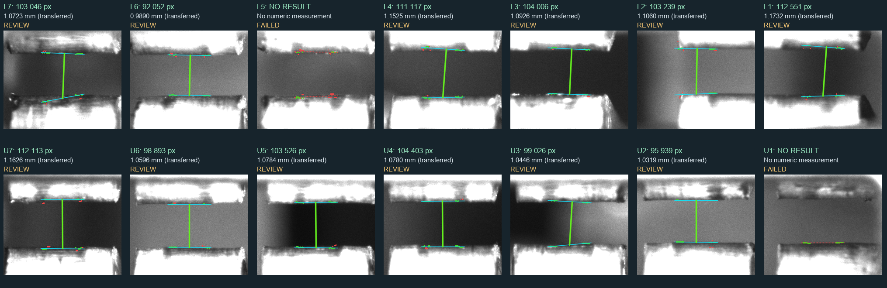
| 点位 | 像素 px | 参考 mm | 状态 | 原因 |
|---|---|---|---|---|
| U1 | — | — | 无有效值 | 上边：边缘粗定位不足；上边：未找到左右一致的边缘；上边：左右有效边缘点不足 |
| U2 | 95.939 | 1.0319 | 有读数，待复核 | 上边：中间轮廓偏离拟合线；下边：侧边不直或存在歧义；下边：整体轮廓起伏较大 |
| U3 | 99.026 | 1.0446 | 有读数，待复核 | 上边：中间轮廓不清晰；上边：中间轮廓偏离拟合线；上边：整体轮廓起伏较大；下边：中间轮廓偏离拟合线；上下拟合线夹角超过0.5度 |
| U4 | 104.403 | 1.0780 | 有读数，待复核 | 上边：中间轮廓不清晰；下边：侧边不直或存在歧义；上下拟合线夹角超过0.5度 |
| U5 | 103.526 | 1.0784 | 有读数，待复核 | 下边：中间轮廓不清晰；下边：侧边不直或存在歧义；下边：中间轮廓偏离拟合线；上下拟合线夹角超过0.5度 |
| U6 | 98.893 | 1.0596 | 有读数，待复核 | 上边：中间轮廓偏离拟合线；上下拟合线夹角超过0.5度 |
| U7 | 112.113 | 1.1626 | 有读数，待复核 | 上边：侧边不直或存在歧义；上边：侧边存在偏离点；上边：整体轮廓起伏较大；下边：侧边不直或存在歧义；下边：中间轮廓偏离拟合线；下边：侧边存在偏离点；下边：整体轮廓起伏较大；上下拟合线夹角超过0.5度 |
| L1 | 112.551 | 1.1732 | 有读数，待复核 | 上边：中间轮廓不清晰；上边：侧边有效点覆盖不完整；上边：侧边不直或存在歧义；上边：中间轮廓偏离拟合线；上边：整体轮廓起伏较大；下边：侧边不直或存在歧义；下边：中间轮廓偏离拟合线；下边：整体轮廓起伏较大；上下拟合线夹角超过0.5度 |
| L2 | 103.239 | 1.1060 | 有读数，待复核 | 上边：侧边不直或存在歧义；上边：中间轮廓偏离拟合线；上边：侧边存在偏离点；上边：整体轮廓起伏较大；下边：侧边有效点覆盖不完整；下边：侧边不直或存在歧义；下边：中间轮廓偏离拟合线；下边：整体轮廓起伏较大；上下拟合线夹角超过0.5度 |
| L3 | 104.006 | 1.0926 | 有读数，待复核 | 下边：侧边存在偏离点；上下拟合线夹角超过0.5度 |
| L4 | 111.117 | 1.1525 | 有读数，待复核 | 上边：中间轮廓不清晰；上边：侧边不直或存在歧义；上边：中间轮廓偏离拟合线；上边：侧边存在偏离点；上边：整体轮廓起伏较大；下边：中间轮廓偏离拟合线；上下拟合线夹角超过0.5度 |
| L5 | — | — | 无有效值 | 上边：侧边不直或存在歧义；上边：中间轮廓偏离拟合线；上边：侧边存在偏离点；上边：整体轮廓起伏较大；下边：左右符合拟合线的点不足；下边：侧边不直或存在歧义；下边：中间轮廓偏离拟合线；下边：侧边存在偏离点；下边：整体轮廓起伏较大；上下拟合线夹角超过0.5度 |
| L6 | 92.052 | 0.9890 | 有读数，待复核 | 上边：中间轮廓偏离拟合线；上边：侧边存在偏离点；下边：中间轮廓偏离拟合线；下边：整体轮廓起伏较大 |
| L7 | 103.046 | 1.0723 | 有读数，待复核 | 上边：中间轮廓偏离拟合线；上边：侧边存在偏离点；下边：侧边不直或存在歧义；下边：中间轮廓偏离拟合线；下边：侧边存在偏离点；下边：整体轮廓起伏较大；上下拟合线夹角超过0.5度 |
原始图片 · 整图标注预览 · 上排从左到右 L7→L1，下排 U7→U1
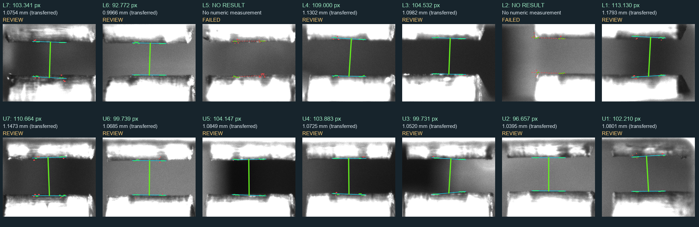
| 点位 | 像素 px | 参考 mm | 状态 | 原因 |
|---|---|---|---|---|
| U1 | 102.210 | 1.0801 | 有读数，待复核 | 上边：侧边有效点覆盖不完整；上边：侧边不直或存在歧义；上边：中间轮廓偏离拟合线；上边：侧边存在偏离点；上边：整体轮廓起伏较大；上下拟合线夹角超过0.5度 |
| U2 | 96.657 | 1.0395 | 有读数，待复核 | 上边：中间轮廓偏离拟合线 |
| U3 | 99.731 | 1.0520 | 有读数，待复核 | 上边：中间轮廓不清晰；上边：中间轮廓偏离拟合线；上边：整体轮廓起伏较大；下边：中间轮廓偏离拟合线；上下拟合线夹角超过0.5度 |
| U4 | 103.883 | 1.0725 | 有读数，待复核 | 上边：中间轮廓不清晰；下边：中间轮廓偏离拟合线；上下拟合线夹角超过0.5度 |
| U5 | 104.147 | 1.0849 | 有读数，待复核 | 下边：中间轮廓偏离拟合线；上下拟合线夹角超过0.5度 |
| U6 | 99.739 | 1.0685 | 有读数，待复核 | 上边：侧边不直或存在歧义 |
| U7 | 110.664 | 1.1473 | 有读数，待复核 | 上边：侧边不直或存在歧义；上边：中间轮廓偏离拟合线；上边：侧边存在偏离点；上边：整体轮廓起伏较大；下边：侧边不直或存在歧义；下边：中间轮廓偏离拟合线；下边：侧边存在偏离点；下边：整体轮廓起伏较大；上下拟合线夹角超过0.5度 |
| L1 | 113.130 | 1.1793 | 有读数，待复核 | 上边：侧边不直或存在歧义；上边：中间轮廓偏离拟合线；下边：中间轮廓不清晰；下边：中间轮廓偏离拟合线；下边：侧边存在偏离点；下边：整体轮廓起伏较大；上下拟合线夹角超过0.5度 |
| L2 | — | — | 无有效值 | 上边：中间轮廓不清晰；上边：侧边不直或存在歧义；上边：中间轮廓偏离拟合线；上边：侧边存在偏离点；上边：整体轮廓起伏较大；下边：左右符合拟合线的点不足；下边：侧边有效点覆盖不完整；下边：侧边不直或存在歧义；下边：中间轮廓偏离拟合线；下边：整体轮廓起伏较大 |
| L3 | 104.532 | 1.0982 | 有读数，待复核 | 上边：中间轮廓偏离拟合线；上下拟合线夹角超过0.5度 |
| L4 | 109.000 | 1.1302 | 有读数，待复核 | 上边：侧边不直或存在歧义；上边：中间轮廓偏离拟合线；上边：侧边存在偏离点；下边：中间轮廓偏离拟合线；下边：整体轮廓起伏较大；上下拟合线夹角超过0.5度 |
| L5 | — | — | 无有效值 | 上边：侧边不直或存在歧义；上边：中间轮廓偏离拟合线；上边：侧边存在偏离点；上边：整体轮廓起伏较大；下边：左右符合拟合线的点不足；下边：侧边不直或存在歧义；下边：中间轮廓偏离拟合线；下边：侧边存在偏离点；下边：整体轮廓起伏较大；上下拟合线夹角超过0.5度 |
| L6 | 92.772 | 0.9966 | 有读数，待复核 | 上下拟合线夹角超过0.5度 |
| L7 | 103.341 | 1.0754 | 有读数，待复核 | 上边：中间轮廓偏离拟合线；上边：侧边存在偏离点；下边：侧边不直或存在歧义；下边：中间轮廓偏离拟合线；下边：侧边存在偏离点；下边：整体轮廓起伏较大；上下拟合线夹角超过0.5度 |
原始图片 · 整图标注预览 · 上排从左到右 L7→L1，下排 U7→U1
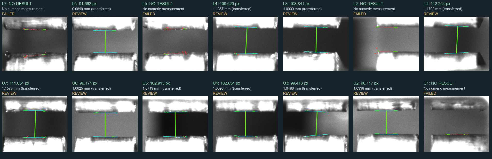
| 点位 | 像素 px | 参考 mm | 状态 | 原因 |
|---|---|---|---|---|
| U1 | — | — | 无有效值 | 上边：边缘粗定位不足；上边：未找到左右一致的边缘；上边：左右有效边缘点不足 |
| U2 | 96.117 | 1.0338 | 有读数，待复核 | 上边：中间轮廓偏离拟合线；上边：整体轮廓起伏较大 |
| U3 | 99.413 | 1.0486 | 有读数，待复核 | 上边：中间轮廓偏离拟合线；上边：整体轮廓起伏较大；下边：中间轮廓偏离拟合线；上下拟合线夹角超过0.5度 |
| U4 | 102.654 | 1.0596 | 有读数，待复核 | 上边：侧边有效点覆盖不完整；下边：侧边不直或存在歧义；下边：中间轮廓偏离拟合线；上下拟合线夹角超过0.5度 |
| U5 | 102.913 | 1.0719 | 有读数，待复核 | 下边：中间轮廓偏离拟合线；下边：侧边存在偏离点；上下拟合线夹角超过0.5度 |
| U6 | 99.174 | 1.0625 | 有读数，待复核 | 上边：侧边不直或存在歧义；下边：侧边不直或存在歧义；上下拟合线夹角超过0.5度 |
| U7 | 111.654 | 1.1578 | 有读数，待复核 | 上边：中间轮廓偏离拟合线；下边：侧边不直或存在歧义；下边：中间轮廓偏离拟合线；下边：侧边存在偏离点；下边：整体轮廓起伏较大；上下拟合线夹角超过0.5度 |
| L1 | 112.264 | 1.1702 | 有读数，待复核 | 上边：中间轮廓不清晰；上边：中间轮廓偏离拟合线；上边：整体轮廓起伏较大；下边：侧边不直或存在歧义；下边：中间轮廓偏离拟合线；下边：整体轮廓起伏较大；上下拟合线夹角超过0.5度 |
| L2 | — | — | 无有效值 | 上边：中间轮廓不清晰；上边：中间轮廓偏离拟合线；上边：整体轮廓起伏较大；下边：外侧边仍未确定，拒绝采用内侧边；下边：左右侧边不能形成一致直线；下边：侧边不直或存在歧义；下边：中间轮廓偏离拟合线；下边：侧边存在偏离点；下边：整体轮廓起伏较大 |
| L3 | 103.841 | 1.0909 | 有读数，待复核 | 上边：中间轮廓不清晰；上边：侧边有效点覆盖不完整 |
| L4 | 109.620 | 1.1367 | 有读数，待复核 | 上边：中间轮廓不清晰；上边：中间轮廓偏离拟合线；上边：侧边存在偏离点；上边：整体轮廓起伏较大；下边：侧边不直或存在歧义；下边：中间轮廓偏离拟合线；下边：侧边存在偏离点；上下拟合线夹角超过0.5度 |
| L5 | — | — | 无有效值 | 上边：侧边不直或存在歧义；上边：中间轮廓偏离拟合线；上边：侧边存在偏离点；上边：整体轮廓起伏较大；下边：左右符合拟合线的点不足；下边：侧边不直或存在歧义；下边：中间轮廓偏离拟合线；下边：侧边存在偏离点；下边：整体轮廓起伏较大；上下拟合线夹角超过0.5度 |
| L6 | 91.662 | 0.9849 | 有读数，待复核 | 上边：侧边存在偏离点 |
| L7 | — | — | 无有效值 | 上边：中间轮廓偏离拟合线；下边：左右符合拟合线的点不足；下边：侧边不直或存在歧义；下边：中间轮廓偏离拟合线；下边：侧边存在偏离点；下边：整体轮廓起伏较大；上下拟合线夹角超过0.5度 |
原始图片 · 整图标注预览 · 上排从左到右 L7→L1，下排 U7→U1
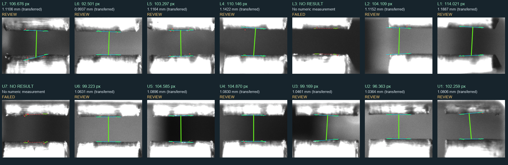
| 点位 | 像素 px | 参考 mm | 状态 | 原因 |
|---|---|---|---|---|
| U1 | 102.259 | 1.0806 | 有读数，待复核 | 上边：中间轮廓偏离拟合线；上边：侧边存在偏离点；上下拟合线夹角超过0.5度 |
| U2 | 96.363 | 1.0364 | 有读数，待复核 | 上边：中间轮廓偏离拟合线；下边：整体轮廓起伏较大 |
| U3 | 99.169 | 1.0461 | 有读数，待复核 | 上边：中间轮廓不清晰；上边：中间轮廓偏离拟合线；上边：整体轮廓起伏较大；下边：中间轮廓偏离拟合线；上下拟合线夹角超过0.5度 |
| U4 | 104.870 | 1.0830 | 有读数，待复核 | 上边：中间轮廓不清晰；下边：中间轮廓偏离拟合线；下边：侧边存在偏离点 |
| U5 | 104.585 | 1.0896 | 有读数，待复核 | 下边：侧边不直或存在歧义；下边：中间轮廓偏离拟合线；下边：侧边存在偏离点；上下拟合线夹角超过0.5度 |
| U6 | 99.223 | 1.0631 | 有读数，待复核 | 上下拟合线夹角超过0.5度 |
| U7 | — | — | 无有效值 | 上边：左右符合拟合线的点不足；上边：侧边不直或存在歧义；上边：中间轮廓偏离拟合线；上边：侧边存在偏离点；下边：侧边不直或存在歧义；下边：中间轮廓偏离拟合线；下边：侧边存在偏离点；下边：整体轮廓起伏较大；上下拟合线夹角超过0.5度 |
| L1 | 114.021 | 1.1887 | 有读数，待复核 | 上边：中间轮廓不清晰；上边：侧边有效点覆盖不完整；上边：中间轮廓偏离拟合线；上边：整体轮廓起伏较大；下边：中间轮廓偏离拟合线；下边：整体轮廓起伏较大；上下拟合线夹角超过0.5度 |
| L2 | 104.109 | 1.1152 | 有读数，待复核 | 上边：侧边不直或存在歧义；上边：中间轮廓偏离拟合线；上边：侧边存在偏离点；上边：整体轮廓起伏较大；下边：侧边有效点覆盖不完整；下边：中间轮廓偏离拟合线；下边：侧边存在偏离点；下边：整体轮廓起伏较大；上下拟合线夹角超过0.5度 |
| L3 | — | — | 无有效值 | 上边：左右符合拟合线的点不足；上边：侧边有效点覆盖不完整；上边：中间轮廓偏离拟合线；上下拟合线夹角超过0.5度 |
| L4 | 110.146 | 1.1422 | 有读数，待复核 | 上边：中间轮廓不清晰；上边：侧边有效点覆盖不完整；上边：侧边不直或存在歧义；上边：中间轮廓偏离拟合线；上边：整体轮廓起伏较大；下边：侧边不直或存在歧义；下边：中间轮廓偏离拟合线；下边：整体轮廓起伏较大；上下拟合线夹角超过0.5度 |
| L5 | 103.297 | 1.1164 | 有读数，待复核 | 上边：侧边不直或存在歧义；上边：中间轮廓偏离拟合线；上边：侧边存在偏离点；上边：整体轮廓起伏较大；下边：侧边不直或存在歧义；下边：中间轮廓偏离拟合线；下边：侧边存在偏离点；下边：整体轮廓起伏较大 |
| L6 | 92.501 | 0.9937 | 有读数，待复核 | 上下拟合线夹角超过0.5度 |
| L7 | 106.676 | 1.1106 | 有读数，待复核 | 上边：中间轮廓偏离拟合线；上边：侧边存在偏离点；上边：整体轮廓起伏较大；下边：侧边不直或存在歧义；下边：中间轮廓偏离拟合线；下边：侧边存在偏离点；下边：整体轮廓起伏较大；上下拟合线夹角超过0.5度 |
原始图片 · 整图标注预览 · 上排从左到右 L7→L1，下排 U7→U1
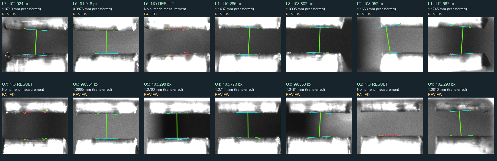
| 点位 | 像素 px | 参考 mm | 状态 | 原因 |
|---|---|---|---|---|
| U1 | 102.293 | 1.0810 | 有读数，待复核 | 上边：侧边不直或存在歧义；上边：中间轮廓偏离拟合线；上边：侧边存在偏离点；上边：整体轮廓起伏较大；上下拟合线夹角超过0.5度 |
| U2 | — | — | 无有效值 | 上边：边缘粗定位不足；上边：未找到左右一致的边缘；上边：左右有效边缘点不足 |
| U3 | 99.358 | 1.0481 | 有读数，待复核 | 上边：中间轮廓不清晰；上边：中间轮廓偏离拟合线；上边：整体轮廓起伏较大；下边：中间轮廓偏离拟合线；上下拟合线夹角超过0.5度 |
| U4 | 103.773 | 1.0714 | 有读数，待复核 | 上边：中间轮廓不清晰；上边：侧边有效点覆盖不完整；下边：中间轮廓不清晰；下边：中间轮廓偏离拟合线；上下拟合线夹角超过0.5度 |
| U5 | 103.298 | 1.0760 | 有读数，待复核 | 下边：侧边不直或存在歧义；下边：中间轮廓偏离拟合线；下边：侧边存在偏离点；上下拟合线夹角超过0.5度 |
| U6 | 99.554 | 1.0665 | 有读数，待复核 | 下边：侧边不直或存在歧义；下边：侧边存在偏离点；上下拟合线夹角超过0.5度 |
| U7 | — | — | 无有效值 | 上边：左右符合拟合线的点不足；上边：侧边不直或存在歧义；上边：中间轮廓偏离拟合线；上边：侧边存在偏离点；上边：整体轮廓起伏较大；下边：侧边不直或存在歧义；下边：中间轮廓偏离拟合线；下边：侧边存在偏离点；下边：整体轮廓起伏较大；上下拟合线夹角超过0.5度 |
| L1 | 112.667 | 1.1745 | 有读数，待复核 | 上边：中间轮廓偏离拟合线；上边：整体轮廓起伏较大；下边：中间轮廓不清晰；下边：侧边不直或存在歧义；下边：中间轮廓偏离拟合线；下边：侧边存在偏离点；下边：整体轮廓起伏较大；上下拟合线夹角超过0.5度 |
| L2 | 108.952 | 1.1663 | 有读数，待复核 | 上边：中间轮廓不清晰；上边：中间轮廓偏离拟合线；下边：侧边有效点覆盖不完整；下边：中间轮廓偏离拟合线；下边：整体轮廓起伏较大；上下拟合线夹角超过0.5度 |
| L3 | 103.802 | 1.0905 | 有读数，待复核 | 上边：中间轮廓不清晰；上边：侧边有效点覆盖不完整；上边：中间轮廓偏离拟合线；下边：中间轮廓不清晰；上下拟合线夹角超过0.5度 |
| L4 | 110.285 | 1.1437 | 有读数，待复核 | 上边：中间轮廓不清晰；上边：中间轮廓偏离拟合线；上边：侧边存在偏离点；下边：中间轮廓偏离拟合线；上下拟合线夹角超过0.5度 |
| L5 | — | — | 无有效值 | 上边：中间轮廓偏离拟合线；上边：侧边存在偏离点；上边：整体轮廓起伏较大；下边：左右符合拟合线的点不足；下边：侧边不直或存在歧义；下边：中间轮廓偏离拟合线；下边：侧边存在偏离点；下边：整体轮廓起伏较大；上下拟合线夹角超过0.5度 |
| L6 | 91.918 | 0.9876 | 有读数，待复核 | 上边：中间轮廓偏离拟合线 |
| L7 | 102.924 | 1.0710 | 有读数，待复核 | 上边：中间轮廓偏离拟合线；上边：整体轮廓起伏较大；下边：侧边不直或存在歧义；下边：中间轮廓偏离拟合线；下边：侧边存在偏离点；下边：整体轮廓起伏较大 |
原始图片 · 整图标注预览 · 上排从左到右 L7→L1，下排 U7→U1
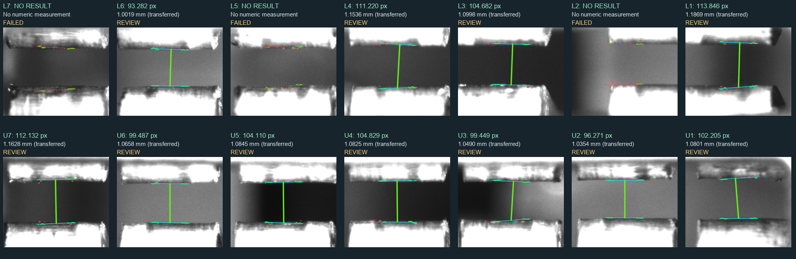
| 点位 | 像素 px | 参考 mm | 状态 | 原因 |
|---|---|---|---|---|
| U1 | 102.205 | 1.0801 | 有读数，待复核 | 上边：侧边不直或存在歧义；上边：中间轮廓偏离拟合线；上边：侧边存在偏离点；上边：整体轮廓起伏较大；上下拟合线夹角超过0.5度 |
| U2 | 96.271 | 1.0354 | 有读数，待复核 | 上边：中间轮廓偏离拟合线；上下拟合线夹角超过0.5度 |
| U3 | 99.449 | 1.0490 | 有读数，待复核 | 上边：中间轮廓不清晰；上边：中间轮廓偏离拟合线；上边：整体轮廓起伏较大；下边：中间轮廓偏离拟合线；上下拟合线夹角超过0.5度 |
| U4 | 104.829 | 1.0825 | 有读数，待复核 | 上边：中间轮廓不清晰；上边：侧边有效点覆盖不完整；下边：中间轮廓不清晰；下边：侧边存在偏离点；上下拟合线夹角超过0.5度 |
| U5 | 104.110 | 1.0845 | 有读数，待复核 | 下边：中间轮廓偏离拟合线；上下拟合线夹角超过0.5度 |
| U6 | 99.487 | 1.0658 | 有读数，待复核 | 下边：侧边不直或存在歧义；上下拟合线夹角超过0.5度 |
| U7 | 112.132 | 1.1628 | 有读数，待复核 | 上边：侧边不直或存在歧义；上边：中间轮廓偏离拟合线；上边：侧边存在偏离点；下边：侧边不直或存在歧义；下边：中间轮廓偏离拟合线；下边：侧边存在偏离点；下边：整体轮廓起伏较大；上下拟合线夹角超过0.5度 |
| L1 | 113.846 | 1.1869 | 有读数，待复核 | 上边：中间轮廓不清晰；上边：侧边不直或存在歧义；上边：中间轮廓偏离拟合线；上边：侧边存在偏离点；上边：整体轮廓起伏较大；下边：侧边不直或存在歧义；下边：中间轮廓偏离拟合线；下边：侧边存在偏离点；下边：整体轮廓起伏较大；上下拟合线夹角超过0.5度 |
| L2 | — | — | 无有效值 | 上边：中间轮廓不清晰；上边：侧边不直或存在歧义；上边：中间轮廓偏离拟合线；上边：整体轮廓起伏较大；下边：左右符合拟合线的点不足；下边：侧边有效点覆盖不完整；下边：侧边不直或存在歧义；下边：中间轮廓偏离拟合线；下边：侧边存在偏离点；下边：整体轮廓起伏较大；上下拟合线夹角超过0.5度 |
| L3 | 104.682 | 1.0998 | 有读数，待复核 | 下边：中间轮廓不清晰；下边：侧边存在偏离点 |
| L4 | 111.220 | 1.1536 | 有读数，待复核 | 上边：中间轮廓偏离拟合线；上边：侧边存在偏离点；下边：中间轮廓偏离拟合线；上下拟合线夹角超过0.5度 |
| L5 | — | — | 无有效值 | 上边：左右符合拟合线的点不足；上边：侧边不直或存在歧义；上边：中间轮廓偏离拟合线；上边：侧边存在偏离点；上边：整体轮廓起伏较大；下边：侧边不直或存在歧义；下边：中间轮廓偏离拟合线；下边：侧边存在偏离点；下边：整体轮廓起伏较大；上下拟合线夹角超过0.5度 |
| L6 | 93.282 | 1.0019 | 有读数，待复核 | 上边：侧边不直或存在歧义；上边：中间轮廓偏离拟合线；上下拟合线夹角超过0.5度 |
| L7 | — | — | 无有效值 | 上边：中间轮廓偏离拟合线；下边：连续边恢复与实测侧边冲突；下边：中间轮廓不清晰；下边：中间轮廓偏离拟合线；上下拟合线夹角超过0.5度 |
原始图片 · 整图标注预览 · 上排从左到右 L7→L1，下排 U7→U1
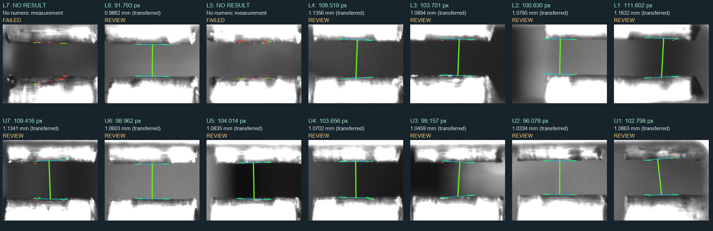
| 点位 | 像素 px | 参考 mm | 状态 | 原因 |
|---|---|---|---|---|
| U1 | 102.798 | 1.0863 | 有读数，待复核 | 上边：侧边不直或存在歧义；上边：中间轮廓偏离拟合线；上边：侧边存在偏离点；上边：整体轮廓起伏较大；上下拟合线夹角超过0.5度 |
| U2 | 96.078 | 1.0334 | 有读数，待复核 | 上边：中间轮廓偏离拟合线 |
| U3 | 99.157 | 1.0459 | 有读数，待复核 | 上边：中间轮廓偏离拟合线；上边：整体轮廓起伏较大；下边：中间轮廓偏离拟合线；上下拟合线夹角超过0.5度 |
| U4 | 103.656 | 1.0702 | 有读数，待复核 | 上边：中间轮廓不清晰；下边：中间轮廓偏离拟合线；上下拟合线夹角超过0.5度 |
| U5 | 104.014 | 1.0835 | 有读数，待复核 | 下边：中间轮廓偏离拟合线；上下拟合线夹角超过0.5度 |
| U6 | 98.962 | 1.0603 | 有读数，待复核 | 上下拟合线夹角超过0.5度 |
| U7 | 109.416 | 1.1341 | 有读数，待复核 | 上边：侧边不直或存在歧义；上边：中间轮廓偏离拟合线；上边：侧边存在偏离点；上边：整体轮廓起伏较大；下边：侧边不直或存在歧义；下边：中间轮廓偏离拟合线；下边：侧边存在偏离点；下边：整体轮廓起伏较大；上下拟合线夹角超过0.5度 |
| L1 | 111.602 | 1.1632 | 有读数，待复核 | 上边：侧边不直或存在歧义；上边：中间轮廓偏离拟合线；上边：侧边存在偏离点；上边：整体轮廓起伏较大；下边：中间轮廓不清晰；下边：中间轮廓偏离拟合线；下边：整体轮廓起伏较大；上下拟合线夹角超过0.5度 |
| L2 | 100.630 | 1.0785 | 有读数，待复核 | 上边：侧边不直或存在歧义；上边：中间轮廓偏离拟合线；上边：整体轮廓起伏较大；下边：侧边有效点覆盖不完整；下边：侧边不直或存在歧义；下边：中间轮廓偏离拟合线；下边：整体轮廓起伏较大 |
| L3 | 103.701 | 1.0894 | 有读数，待复核 | 上下拟合线夹角超过0.5度 |
| L4 | 109.519 | 1.1356 | 有读数，待复核 | 上边：中间轮廓不清晰；上边：中间轮廓偏离拟合线；下边：中间轮廓不清晰；下边：侧边不直或存在歧义；下边：中间轮廓偏离拟合线；下边：侧边存在偏离点；上下拟合线夹角超过0.5度 |
| L5 | — | — | 无有效值 | 上边：左右符合拟合线的点不足；上边：侧边不直或存在歧义；上边：中间轮廓偏离拟合线；上边：侧边存在偏离点；上边：整体轮廓起伏较大；下边：侧边不直或存在歧义；下边：中间轮廓偏离拟合线；下边：整体轮廓起伏较大；上下拟合线夹角超过0.5度 |
| L6 | 91.793 | 0.9862 | 有读数，待复核 | 上边：侧边不直或存在歧义；上边：侧边存在偏离点 |
| L7 | — | — | 无有效值 | 下边：左右符合拟合线的点不足；下边：侧边不直或存在歧义；下边：中间轮廓偏离拟合线；下边：侧边存在偏离点；下边：整体轮廓起伏较大；上下拟合线夹角超过0.5度 |
原始图片 · 整图标注预览 · 上排从左到右 L7→L1，下排 U7→U1
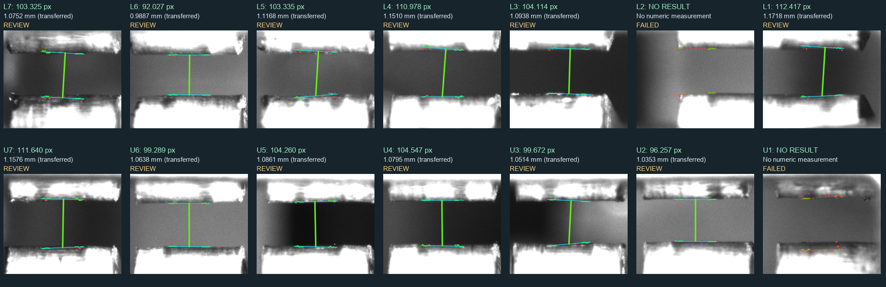
| 点位 | 像素 px | 参考 mm | 状态 | 原因 |
|---|---|---|---|---|
| U1 | — | — | 无有效值 | 上边：侧边不直或存在歧义；上边：中间轮廓偏离拟合线；上边：侧边存在偏离点；上边：整体轮廓起伏较大；下边：存在未解决的外侧边分支；下边：侧边不直或存在歧义；下边：侧边存在偏离点；下边：整体轮廓起伏较大；上下拟合线夹角超过0.5度 |
| U2 | 96.257 | 1.0353 | 有读数，待复核 | 上边：侧边不直或存在歧义；上边：中间轮廓偏离拟合线；上边：整体轮廓起伏较大；上下拟合线夹角超过0.5度 |
| U3 | 99.672 | 1.0514 | 有读数，待复核 | 上边：中间轮廓偏离拟合线；上边：整体轮廓起伏较大；下边：中间轮廓偏离拟合线；上下拟合线夹角超过0.5度 |
| U4 | 104.547 | 1.0795 | 有读数，待复核 | 上边：中间轮廓不清晰；上边：侧边有效点覆盖不完整；下边：中间轮廓不清晰；下边：中间轮廓偏离拟合线；上下拟合线夹角超过0.5度 |
| U5 | 104.260 | 1.0861 | 有读数，待复核 | 下边：中间轮廓偏离拟合线；上下拟合线夹角超过0.5度 |
| U6 | 99.289 | 1.0638 | 有读数，待复核 | 上下拟合线夹角超过0.5度 |
| U7 | 111.640 | 1.1576 | 有读数，待复核 | 上边：侧边不直或存在歧义；上边：中间轮廓偏离拟合线；上边：侧边存在偏离点；下边：侧边不直或存在歧义；下边：中间轮廓偏离拟合线；下边：侧边存在偏离点；下边：整体轮廓起伏较大；上下拟合线夹角超过0.5度 |
| L1 | 112.417 | 1.1718 | 有读数，待复核 | 上边：侧边不直或存在歧义；上边：中间轮廓偏离拟合线；上边：侧边存在偏离点；上边：整体轮廓起伏较大；下边：中间轮廓偏离拟合线；下边：整体轮廓起伏较大；上下拟合线夹角超过0.5度 |
| L2 | — | — | 无有效值 | 上边：侧边不直或存在歧义；上边：中间轮廓偏离拟合线；上边：整体轮廓起伏较大；下边：左右符合拟合线的点不足；下边：侧边有效点覆盖不完整；下边：中间轮廓偏离拟合线；下边：侧边存在偏离点；下边：整体轮廓起伏较大；上下拟合线夹角超过0.5度 |
| L3 | 104.114 | 1.0938 | 有读数，待复核 | 上边：中间轮廓不清晰；上边：中间轮廓偏离拟合线 |
| L4 | 110.978 | 1.1510 | 有读数，待复核 | 上边：侧边不直或存在歧义；上边：中间轮廓偏离拟合线；上边：整体轮廓起伏较大；下边：中间轮廓不清晰；下边：中间轮廓偏离拟合线；下边：侧边存在偏离点；上下拟合线夹角超过0.5度 |
| L5 | 103.335 | 1.1168 | 有读数，待复核 | 上边：侧边不直或存在歧义；上边：中间轮廓偏离拟合线；上边：侧边存在偏离点；上边：整体轮廓起伏较大；下边：侧边不直或存在歧义；下边：中间轮廓偏离拟合线；下边：侧边存在偏离点；下边：整体轮廓起伏较大；上下拟合线夹角超过0.5度 |
| L6 | 92.027 | 0.9887 | 有读数，待复核 | 上边：侧边不直或存在歧义；上边：中间轮廓偏离拟合线；上边：侧边存在偏离点 |
| L7 | 103.325 | 1.0752 | 有读数，待复核 | 上边：中间轮廓偏离拟合线；下边：侧边不直或存在歧义；下边：中间轮廓偏离拟合线；下边：侧边存在偏离点；下边：整体轮廓起伏较大 |
原始图片 · 整图标注预览 · 上排从左到右 L7→L1，下排 U7→U1
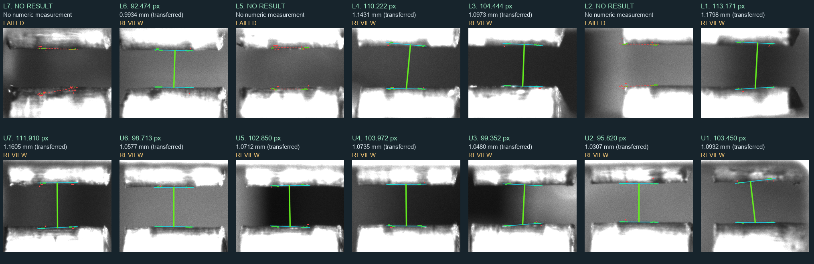
| 点位 | 像素 px | 参考 mm | 状态 | 原因 |
|---|---|---|---|---|
| U1 | 103.450 | 1.0932 | 有读数，待复核 | 上边：侧边不直或存在歧义；上边：中间轮廓偏离拟合线；上边：侧边存在偏离点；上边：整体轮廓起伏较大；上下拟合线夹角超过0.5度 |
| U2 | 95.820 | 1.0307 | 有读数，待复核 | 上边：侧边不直或存在歧义；上边：中间轮廓偏离拟合线；上边：整体轮廓起伏较大 |
| U3 | 99.352 | 1.0480 | 有读数，待复核 | 上边：中间轮廓不清晰；上边：中间轮廓偏离拟合线；上边：整体轮廓起伏较大；下边：中间轮廓偏离拟合线；上下拟合线夹角超过0.5度 |
| U4 | 103.972 | 1.0735 | 有读数，待复核 | 上边：中间轮廓不清晰；上边：侧边有效点覆盖不完整；下边：中间轮廓不清晰；下边：中间轮廓偏离拟合线；上下拟合线夹角超过0.5度 |
| U5 | 102.850 | 1.0712 | 有读数，待复核 | 下边：侧边不直或存在歧义；下边：中间轮廓偏离拟合线；上下拟合线夹角超过0.5度 |
| U6 | 98.713 | 1.0577 | 有读数，待复核 | 上下拟合线夹角超过0.5度 |
| U7 | 111.910 | 1.1605 | 有读数，待复核 | 上边：侧边不直或存在歧义；上边：侧边存在偏离点；下边：中间轮廓偏离拟合线；下边：侧边存在偏离点；下边：整体轮廓起伏较大；上下拟合线夹角超过0.5度 |
| L1 | 113.171 | 1.1798 | 有读数，待复核 | 上边：中间轮廓不清晰；上边：中间轮廓偏离拟合线；下边：侧边不直或存在歧义；下边：中间轮廓偏离拟合线；下边：整体轮廓起伏较大；上下拟合线夹角超过0.5度 |
| L2 | — | — | 无有效值 | 上边：侧边不直或存在歧义；上边：中间轮廓偏离拟合线；上边：侧边存在偏离点；上边：整体轮廓起伏较大；下边：左右符合拟合线的点不足；下边：侧边不直或存在歧义；下边：中间轮廓偏离拟合线；下边：侧边存在偏离点；下边：整体轮廓起伏较大；上下拟合线夹角超过0.5度 |
| L3 | 104.444 | 1.0973 | 有读数，待复核 | 上下拟合线夹角超过0.5度 |
| L4 | 110.222 | 1.1431 | 有读数，待复核 | 上边：中间轮廓不清晰；上边：侧边不直或存在歧义；上边：中间轮廓偏离拟合线；上边：整体轮廓起伏较大；下边：中间轮廓偏离拟合线；上下拟合线夹角超过0.5度 |
| L5 | — | — | 无有效值 | 上边：左右符合拟合线的点不足；上边：侧边不直或存在歧义；上边：中间轮廓偏离拟合线；上边：侧边存在偏离点；上边：整体轮廓起伏较大；下边：侧边不直或存在歧义；下边：中间轮廓偏离拟合线；下边：侧边存在偏离点；下边：整体轮廓起伏较大；上下拟合线夹角超过0.5度 |
| L6 | 92.474 | 0.9934 | 有读数，待复核 | 上边：中间轮廓偏离拟合线；下边：侧边不直或存在歧义；上下拟合线夹角超过0.5度 |
| L7 | — | — | 无有效值 | 上边：中间轮廓偏离拟合线；上边：侧边存在偏离点；下边：左右符合拟合线的点不足；下边：侧边不直或存在歧义；下边：中间轮廓偏离拟合线；下边：侧边存在偏离点；下边：整体轮廓起伏较大；上下拟合线夹角超过0.5度 |
原始图片 · 整图标注预览 · 上排从左到右 L7→L1，下排 U7→U1
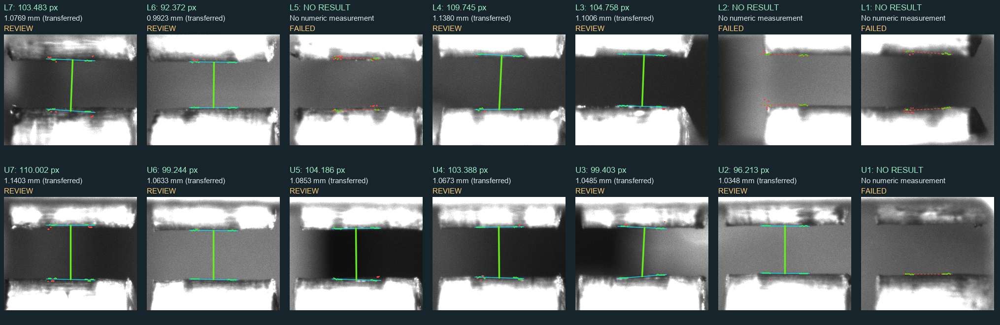
| 点位 | 像素 px | 参考 mm | 状态 | 原因 |
|---|---|---|---|---|
| U1 | — | — | 无有效值 | 上边：边缘粗定位不足；上边：未找到左右一致的边缘；上边：左右有效边缘点不足 |
| U2 | 96.213 | 1.0348 | 有读数，待复核 | 上边：中间轮廓偏离拟合线；下边：侧边不直或存在歧义 |
| U3 | 99.403 | 1.0485 | 有读数，待复核 | 上边：中间轮廓不清晰；上边：侧边不直或存在歧义；上边：中间轮廓偏离拟合线；上边：侧边存在偏离点；上边：整体轮廓起伏较大；下边：中间轮廓偏离拟合线；上下拟合线夹角超过0.5度 |
| U4 | 103.388 | 1.0673 | 有读数，待复核 | 上边：中间轮廓不清晰；下边：中间轮廓不清晰；下边：中间轮廓偏离拟合线；下边：侧边存在偏离点；上下拟合线夹角超过0.5度 |
| U5 | 104.186 | 1.0853 | 有读数，待复核 | 下边：侧边不直或存在歧义；下边：中间轮廓偏离拟合线；下边：整体轮廓起伏较大；上下拟合线夹角超过0.5度 |
| U6 | 99.244 | 1.0633 | 有读数，待复核 | 上下拟合线夹角超过0.5度 |
| U7 | 110.002 | 1.1403 | 有读数，待复核 | 上边：侧边不直或存在歧义；上边：中间轮廓偏离拟合线；上边：侧边存在偏离点；上边：整体轮廓起伏较大；下边：侧边不直或存在歧义；下边：中间轮廓偏离拟合线；下边：侧边存在偏离点；下边：整体轮廓起伏较大；上下拟合线夹角超过0.5度 |
| L1 | — | — | 无有效值 | 上边：中间轮廓不清晰；上边：侧边不直或存在歧义；上边：中间轮廓偏离拟合线；下边：左右符合拟合线的点不足；下边：侧边不直或存在歧义；下边：中间轮廓偏离拟合线；下边：侧边存在偏离点；下边：整体轮廓起伏较大；上下拟合线夹角超过0.5度 |
| L2 | — | — | 无有效值 | 上边：中间轮廓偏离拟合线；上边：整体轮廓起伏较大；下边：左右符合拟合线的点不足；下边：侧边不直或存在歧义；下边：中间轮廓偏离拟合线；下边：侧边存在偏离点；下边：整体轮廓起伏较大；上下拟合线夹角超过0.5度 |
| L3 | 104.758 | 1.1006 | 有读数，待复核 | 上边：中间轮廓不清晰；上边：侧边有效点覆盖不完整 |
| L4 | 109.745 | 1.1380 | 有读数，待复核 | 上边：中间轮廓不清晰；上边：中间轮廓偏离拟合线；下边：中间轮廓不清晰；下边：中间轮廓偏离拟合线；上下拟合线夹角超过0.5度 |
| L5 | — | — | 无有效值 | 上边：左右符合拟合线的点不足；上边：侧边不直或存在歧义；上边：中间轮廓偏离拟合线；上边：侧边存在偏离点；上边：整体轮廓起伏较大；下边：侧边不直或存在歧义；下边：中间轮廓偏离拟合线；下边：侧边存在偏离点；下边：整体轮廓起伏较大；上下拟合线夹角超过0.5度 |
| L6 | 92.372 | 0.9923 | 有读数，待复核 | 上边：中间轮廓偏离拟合线；上边：侧边存在偏离点 |
| L7 | 103.483 | 1.0769 | 有读数，待复核 | 上边：侧边不直或存在歧义；上边：中间轮廓偏离拟合线；上边：侧边存在偏离点；上边：整体轮廓起伏较大；下边：侧边不直或存在歧义；下边：中间轮廓偏离拟合线；下边：侧边存在偏离点；下边：整体轮廓起伏较大；上下拟合线夹角超过0.5度 |
原始图片 · 整图标注预览 · 上排从左到右 L7→L1，下排 U7→U1
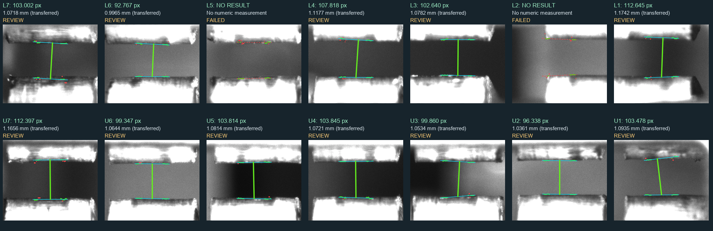
| 点位 | 像素 px | 参考 mm | 状态 | 原因 |
|---|---|---|---|---|
| U1 | 103.478 | 1.0935 | 有读数，待复核 | 上边：侧边不直或存在歧义；上边：中间轮廓偏离拟合线；上边：侧边存在偏离点；上边：整体轮廓起伏较大；上下拟合线夹角超过0.5度 |
| U2 | 96.338 | 1.0361 | 有读数，待复核 | 上边：中间轮廓偏离拟合线；上边：整体轮廓起伏较大；上下拟合线夹角超过0.5度 |
| U3 | 99.860 | 1.0534 | 有读数，待复核 | 上边：中间轮廓不清晰；上边：中间轮廓偏离拟合线；上边：整体轮廓起伏较大；下边：中间轮廓偏离拟合线；上下拟合线夹角超过0.5度 |
| U4 | 103.845 | 1.0721 | 有读数，待复核 | 上边：中间轮廓不清晰；上边：侧边有效点覆盖不完整；下边：中间轮廓不清晰；下边：中间轮廓偏离拟合线；上下拟合线夹角超过0.5度 |
| U5 | 103.814 | 1.0814 | 有读数，待复核 | 下边：中间轮廓偏离拟合线；上下拟合线夹角超过0.5度 |
| U6 | 99.347 | 1.0644 | 有读数，待复核 | 上边：侧边存在偏离点；上下拟合线夹角超过0.5度 |
| U7 | 112.397 | 1.1656 | 有读数，待复核 | 上边：侧边不直或存在歧义；上边：侧边存在偏离点；上边：整体轮廓起伏较大；下边：侧边不直或存在歧义；下边：中间轮廓偏离拟合线；下边：侧边存在偏离点；下边：整体轮廓起伏较大；上下拟合线夹角超过0.5度 |
| L1 | 112.645 | 1.1742 | 有读数，待复核 | 上边：中间轮廓偏离拟合线；上边：整体轮廓起伏较大；下边：中间轮廓偏离拟合线；下边：整体轮廓起伏较大；上下拟合线夹角超过0.5度 |
| L2 | — | — | 无有效值 | 上边：侧边不直或存在歧义；上边：中间轮廓偏离拟合线；上边：侧边存在偏离点；上边：整体轮廓起伏较大；下边：左右符合拟合线的点不足；下边：侧边有效点覆盖不完整；下边：侧边不直或存在歧义；下边：中间轮廓偏离拟合线；下边：侧边存在偏离点；下边：整体轮廓起伏较大；上下拟合线夹角超过0.5度 |
| L3 | 102.640 | 1.0782 | 有读数，待复核 | 上边：中间轮廓偏离拟合线；下边：中间轮廓不清晰；上下拟合线夹角超过0.5度 |
| L4 | 107.818 | 1.1177 | 有读数，待复核 | 上边：中间轮廓不清晰；上边：侧边不直或存在歧义；上边：中间轮廓偏离拟合线；上边：侧边存在偏离点；上边：整体轮廓起伏较大；下边：中间轮廓不清晰；下边：中间轮廓偏离拟合线；下边：整体轮廓起伏较大；上下拟合线夹角超过0.5度 |
| L5 | — | — | 无有效值 | 上边：左右符合拟合线的点不足；上边：侧边不直或存在歧义；上边：中间轮廓偏离拟合线；上边：侧边存在偏离点；上边：整体轮廓起伏较大；下边：中间轮廓偏离拟合线；下边：整体轮廓起伏较大；上下拟合线夹角超过0.5度 |
| L6 | 92.767 | 0.9965 | 有读数，待复核 | 上边：中间轮廓偏离拟合线；上下拟合线夹角超过0.5度 |
| L7 | 103.002 | 1.0718 | 有读数，待复核 | 上边：中间轮廓偏离拟合线；下边：侧边不直或存在歧义；下边：中间轮廓偏离拟合线；下边：侧边存在偏离点；下边：整体轮廓起伏较大 |
原始图片 · 整图标注预览 · 上排从左到右 L7→L1，下排 U7→U1
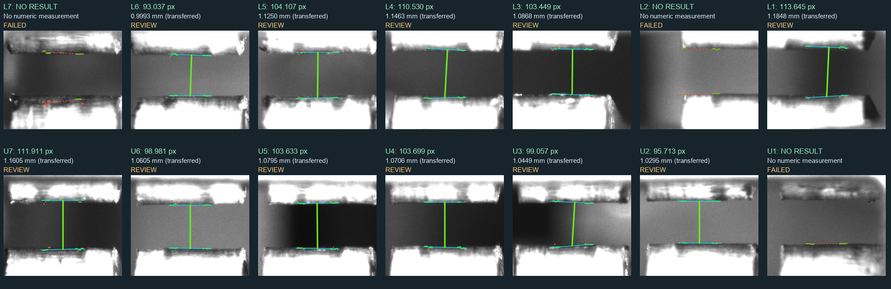
| 点位 | 像素 px | 参考 mm | 状态 | 原因 |
|---|---|---|---|---|
| U1 | — | — | 无有效值 | 上边：边缘粗定位不足；上边：未找到左右一致的边缘；上边：左右有效边缘点不足 |
| U2 | 95.713 | 1.0295 | 有读数，待复核 | 上边：中间轮廓偏离拟合线；下边：侧边不直或存在歧义；下边：侧边存在偏离点；上下拟合线夹角超过0.5度 |
| U3 | 99.057 | 1.0449 | 有读数，待复核 | 上边：中间轮廓不清晰；上边：中间轮廓偏离拟合线；上边：整体轮廓起伏较大；下边：中间轮廓偏离拟合线；上下拟合线夹角超过0.5度 |
| U4 | 103.699 | 1.0706 | 有读数，待复核 | 上边：中间轮廓不清晰；下边：中间轮廓偏离拟合线；上下拟合线夹角超过0.5度 |
| U5 | 103.633 | 1.0795 | 有读数，待复核 | 下边：中间轮廓偏离拟合线；上下拟合线夹角超过0.5度 |
| U6 | 98.981 | 1.0605 | 有读数，待复核 | 上边：侧边不直或存在歧义；上边：中间轮廓偏离拟合线；上下拟合线夹角超过0.5度 |
| U7 | 111.911 | 1.1605 | 有读数，待复核 | 上边：侧边不直或存在歧义；上边：侧边存在偏离点；下边：侧边不直或存在歧义；下边：中间轮廓偏离拟合线；下边：侧边存在偏离点；下边：整体轮廓起伏较大；上下拟合线夹角超过0.5度 |
| L1 | 113.645 | 1.1848 | 有读数，待复核 | 上边：中间轮廓不清晰；上边：侧边有效点覆盖不完整；上边：中间轮廓偏离拟合线；下边：中间轮廓不清晰；下边：侧边有效点覆盖不完整；下边：中间轮廓偏离拟合线；下边：整体轮廓起伏较大；上下拟合线夹角超过0.5度 |
| L2 | — | — | 无有效值 | 上边：中间轮廓偏离拟合线；上边：整体轮廓起伏较大；下边：未找到左右一致的边缘；下边：左右符合拟合线的点不足；下边：侧边有效点覆盖不完整；下边：左右侧边不能形成一致直线；下边：侧边不直或存在歧义；下边：中间轮廓偏离拟合线；下边：侧边存在偏离点；下边：整体轮廓起伏较大；上下拟合线夹角超过0.5度 |
| L3 | 103.449 | 1.0868 | 有读数，待复核 | 上边：侧边存在偏离点；上下拟合线夹角超过0.5度 |
| L4 | 110.530 | 1.1463 | 有读数，待复核 | 上边：中间轮廓不清晰；上边：中间轮廓偏离拟合线；下边：中间轮廓偏离拟合线；上下拟合线夹角超过0.5度 |
| L5 | 104.107 | 1.1250 | 有读数，待复核 | 上边：侧边不直或存在歧义；上边：中间轮廓偏离拟合线；上边：侧边存在偏离点；上边：整体轮廓起伏较大；下边：中间轮廓偏离拟合线；下边：整体轮廓起伏较大；上下拟合线夹角超过0.5度 |
| L6 | 93.037 | 0.9993 | 有读数，待复核 | 下边：整体轮廓起伏较大；上下拟合线夹角超过0.5度 |
| L7 | — | — | 无有效值 | 上边：中间轮廓偏离拟合线；下边：左右符合拟合线的点不足；下边：侧边不直或存在歧义；下边：中间轮廓偏离拟合线；下边：侧边存在偏离点；下边：整体轮廓起伏较大；上下拟合线夹角超过0.5度 |
原始图片 · 整图标注预览 · 上排从左到右 L7→L1，下排 U7→U1
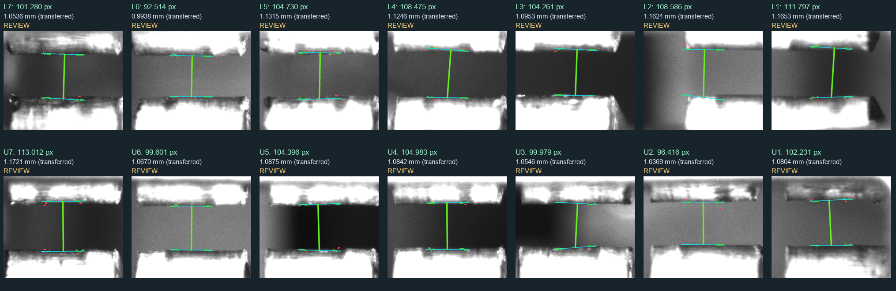
| 点位 | 像素 px | 参考 mm | 状态 | 原因 |
|---|---|---|---|---|
| U1 | 102.231 | 1.0804 | 有读数，待复核 | 上边：侧边不直或存在歧义；上边：侧边存在偏离点；上边：整体轮廓起伏较大；上下拟合线夹角超过0.5度 |
| U2 | 96.416 | 1.0369 | 有读数，待复核 | 上边：侧边不直或存在歧义；上边：中间轮廓偏离拟合线；上边：整体轮廓起伏较大 |
| U3 | 99.979 | 1.0546 | 有读数，待复核 | 上边：中间轮廓不清晰；上边：中间轮廓偏离拟合线；上边：整体轮廓起伏较大；下边：中间轮廓偏离拟合线；上下拟合线夹角超过0.5度 |
| U4 | 104.983 | 1.0842 | 有读数，待复核 | 上边：中间轮廓不清晰；下边：中间轮廓偏离拟合线；上下拟合线夹角超过0.5度 |
| U5 | 104.396 | 1.0875 | 有读数，待复核 | 下边：侧边不直或存在歧义；下边：中间轮廓偏离拟合线；上下拟合线夹角超过0.5度 |
| U6 | 99.601 | 1.0670 | 有读数，待复核 | 上边：侧边不直或存在歧义；下边：中间轮廓偏离拟合线；上下拟合线夹角超过0.5度 |
| U7 | 113.012 | 1.1721 | 有读数，待复核 | 上边：中间轮廓不清晰；上边：侧边不直或存在歧义；上边：侧边存在偏离点；下边：侧边不直或存在歧义；下边：中间轮廓偏离拟合线；下边：侧边存在偏离点；下边：整体轮廓起伏较大 |
| L1 | 111.797 | 1.1653 | 有读数，待复核 | 上边：中间轮廓不清晰；上边：中间轮廓偏离拟合线；下边：中间轮廓偏离拟合线；下边：整体轮廓起伏较大；上下拟合线夹角超过0.5度 |
| L2 | 108.586 | 1.1624 | 有读数，待复核 | 上边：中间轮廓不清晰；上边：侧边不直或存在歧义；上边：中间轮廓偏离拟合线；上边：整体轮廓起伏较大；下边：中间轮廓不清晰；下边：中间轮廓偏离拟合线；上下拟合线夹角超过0.5度 |
| L3 | 104.261 | 1.0953 | 有读数，待复核 | 上边：中间轮廓偏离拟合线；上下拟合线夹角超过0.5度 |
| L4 | 108.475 | 1.1246 | 有读数，待复核 | 上边：中间轮廓偏离拟合线；下边：中间轮廓偏离拟合线；下边：侧边存在偏离点；下边：整体轮廓起伏较大；上下拟合线夹角超过0.5度 |
| L5 | 104.730 | 1.1315 | 有读数，待复核 | 上边：侧边不直或存在歧义；上边：中间轮廓偏离拟合线；上边：侧边存在偏离点；上边：整体轮廓起伏较大；下边：中间轮廓不清晰；下边：侧边不直或存在歧义；下边：中间轮廓偏离拟合线；下边：侧边存在偏离点；下边：整体轮廓起伏较大；上下拟合线夹角超过0.5度 |
| L6 | 92.514 | 0.9938 | 有读数，待复核 | 上下拟合线夹角超过0.5度 |
| L7 | 101.280 | 1.0536 | 有读数，待复核 | 上边：中间轮廓偏离拟合线；下边：侧边不直或存在歧义；下边：中间轮廓偏离拟合线；下边：侧边存在偏离点；下边：整体轮廓起伏较大；上下拟合线夹角超过0.5度 |
原始图片 · 整图标注预览 · 上排从左到右 L7→L1，下排 U7→U1
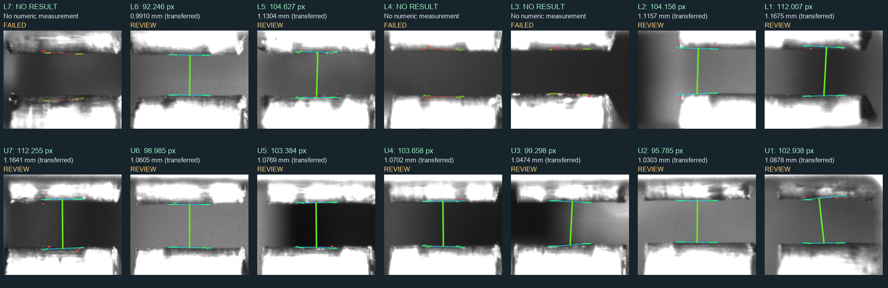
| 点位 | 像素 px | 参考 mm | 状态 | 原因 |
|---|---|---|---|---|
| U1 | 102.938 | 1.0878 | 有读数，待复核 | 上边：侧边不直或存在歧义；上边：中间轮廓偏离拟合线；上边：侧边存在偏离点；上边：整体轮廓起伏较大；上下拟合线夹角超过0.5度 |
| U2 | 95.785 | 1.0303 | 有读数，待复核 | 上边：中间轮廓偏离拟合线；上边：整体轮廓起伏较大 |
| U3 | 99.298 | 1.0474 | 有读数，待复核 | 上边：中间轮廓偏离拟合线；上边：整体轮廓起伏较大；下边：中间轮廓偏离拟合线；上下拟合线夹角超过0.5度 |
| U4 | 103.658 | 1.0702 | 有读数，待复核 | 上边：中间轮廓不清晰；上边：侧边存在偏离点；下边：中间轮廓偏离拟合线；上下拟合线夹角超过0.5度 |
| U5 | 103.384 | 1.0769 | 有读数，待复核 | 下边：中间轮廓偏离拟合线；上下拟合线夹角超过0.5度 |
| U6 | 98.985 | 1.0605 | 有读数，待复核 | 上下拟合线夹角超过0.5度 |
| U7 | 112.255 | 1.1641 | 有读数，待复核 | 上边：侧边不直或存在歧义；上边：中间轮廓偏离拟合线；下边：侧边不直或存在歧义；下边：中间轮廓偏离拟合线；下边：侧边存在偏离点；下边：整体轮廓起伏较大；上下拟合线夹角超过0.5度 |
| L1 | 112.007 | 1.1675 | 有读数，待复核 | 上边：侧边不直或存在歧义；上边：中间轮廓偏离拟合线；下边：中间轮廓不清晰；下边：中间轮廓偏离拟合线；下边：整体轮廓起伏较大；上下拟合线夹角超过0.5度 |
| L2 | 104.158 | 1.1157 | 有读数，待复核 | 上边：中间轮廓不清晰；上边：侧边不直或存在歧义；上边：中间轮廓偏离拟合线；上边：侧边存在偏离点；上边：整体轮廓起伏较大；下边：侧边有效点覆盖不完整；下边：中间轮廓偏离拟合线；下边：整体轮廓起伏较大；上下拟合线夹角超过0.5度 |
| L3 | — | — | 无有效值 | 上边：左右符合拟合线的点不足；上边：侧边有效点覆盖不完整；上边：中间轮廓偏离拟合线；上边：侧边存在偏离点；下边：侧边存在偏离点；上下拟合线夹角超过0.5度 |
| L4 | — | — | 无有效值 | 上边：左右符合拟合线的点不足；上边：侧边不直或存在歧义；上边：中间轮廓偏离拟合线；上边：侧边存在偏离点；下边：侧边不直或存在歧义；下边：中间轮廓偏离拟合线；下边：侧边存在偏离点；下边：整体轮廓起伏较大；上下拟合线夹角超过0.5度 |
| L5 | 104.627 | 1.1304 | 有读数，待复核 | 上边：侧边不直或存在歧义；上边：中间轮廓偏离拟合线；上边：侧边存在偏离点；上边：整体轮廓起伏较大；下边：中间轮廓偏离拟合线；下边：整体轮廓起伏较大；上下拟合线夹角超过0.5度 |
| L6 | 92.246 | 0.9910 | 有读数，待复核 | 上边：中间轮廓偏离拟合线 |
| L7 | — | — | 无有效值 | 上边：中间轮廓偏离拟合线；上边：侧边存在偏离点；下边：连续边恢复与实测侧边冲突；下边：中间轮廓不清晰；下边：侧边有效点覆盖不完整；下边：中间轮廓偏离拟合线；下边：整体轮廓起伏较大；上下拟合线夹角超过0.5度 |
原始图片 · 整图标注预览 · 上排从左到右 L7→L1，下排 U7→U1
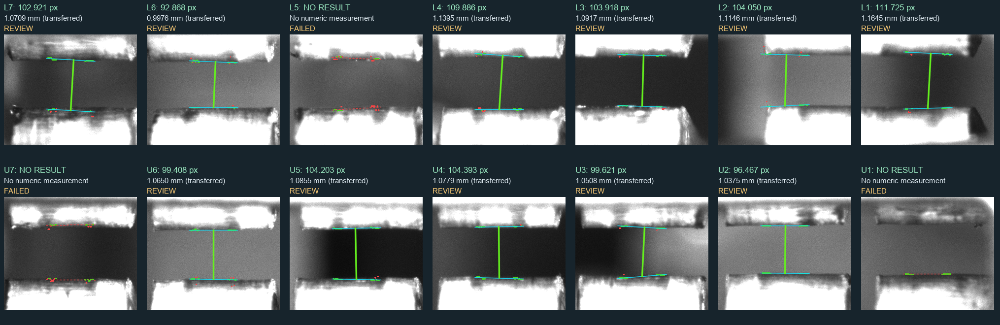
| 点位 | 像素 px | 参考 mm | 状态 | 原因 |
|---|---|---|---|---|
| U1 | — | — | 无有效值 | 上边：边缘粗定位不足；上边：未找到左右一致的边缘；上边：左右有效边缘点不足 |
| U2 | 96.467 | 1.0375 | 有读数，待复核 | 上边：中间轮廓偏离拟合线 |
| U3 | 99.621 | 1.0508 | 有读数，待复核 | 上边：中间轮廓不清晰；上边：中间轮廓偏离拟合线；上边：整体轮廓起伏较大；下边：中间轮廓偏离拟合线；上下拟合线夹角超过0.5度 |
| U4 | 104.393 | 1.0779 | 有读数，待复核 | 上边：中间轮廓不清晰；下边：中间轮廓偏离拟合线；上下拟合线夹角超过0.5度 |
| U5 | 104.203 | 1.0855 | 有读数，待复核 | 下边：侧边不直或存在歧义；下边：中间轮廓偏离拟合线；上下拟合线夹角超过0.5度 |
| U6 | 99.408 | 1.0650 | 有读数，待复核 | 下边：侧边不直或存在歧义；下边：侧边存在偏离点；下边：整体轮廓起伏较大；上下拟合线夹角超过0.5度 |
| U7 | — | — | 无有效值 | 上边：中间轮廓不清晰；上边：侧边不直或存在歧义；上边：侧边存在偏离点；下边：左右符合拟合线的点不足；下边：侧边不直或存在歧义；下边：中间轮廓偏离拟合线；下边：侧边存在偏离点；下边：整体轮廓起伏较大；上下拟合线夹角超过0.5度 |
| L1 | 111.725 | 1.1645 | 有读数，待复核 | 上边：中间轮廓不清晰；上边：中间轮廓偏离拟合线；下边：侧边不直或存在歧义；下边：中间轮廓偏离拟合线；下边：侧边存在偏离点；下边：整体轮廓起伏较大；上下拟合线夹角超过0.5度 |
| L2 | 104.050 | 1.1146 | 有读数，待复核 | 上边：侧边不直或存在歧义；上边：中间轮廓偏离拟合线；上边：侧边存在偏离点；上边：整体轮廓起伏较大；下边：侧边有效点覆盖不完整；下边：侧边不直或存在歧义；下边：中间轮廓偏离拟合线；下边：整体轮廓起伏较大；上下拟合线夹角超过0.5度 |
| L3 | 103.918 | 1.0917 | 有读数，待复核 | 下边：侧边存在偏离点 |
| L4 | 109.886 | 1.1395 | 有读数，待复核 | 上边：中间轮廓不清晰；上边：中间轮廓偏离拟合线；上边：整体轮廓起伏较大；下边：中间轮廓不清晰；下边：侧边不直或存在歧义；下边：中间轮廓偏离拟合线；下边：侧边存在偏离点；上下拟合线夹角超过0.5度 |
| L5 | — | — | 无有效值 | 上边：侧边不直或存在歧义；上边：中间轮廓偏离拟合线；上边：侧边存在偏离点；上边：整体轮廓起伏较大；下边：中间轮廓不清晰；下边：左右符合拟合线的点不足；下边：侧边不直或存在歧义；下边：中间轮廓偏离拟合线；下边：侧边存在偏离点；下边：整体轮廓起伏较大；上下拟合线夹角超过0.5度 |
| L6 | 92.868 | 0.9976 | 有读数，待复核 | 上边：侧边不直或存在歧义；上边：侧边存在偏离点；上下拟合线夹角超过0.5度 |
| L7 | 102.921 | 1.0709 | 有读数，待复核 | 上边：中间轮廓偏离拟合线；下边：侧边不直或存在歧义；下边：中间轮廓偏离拟合线；下边：侧边存在偏离点；下边：整体轮廓起伏较大 |
原始图片 · 整图标注预览 · 上排从左到右 L7→L1，下排 U7→U1
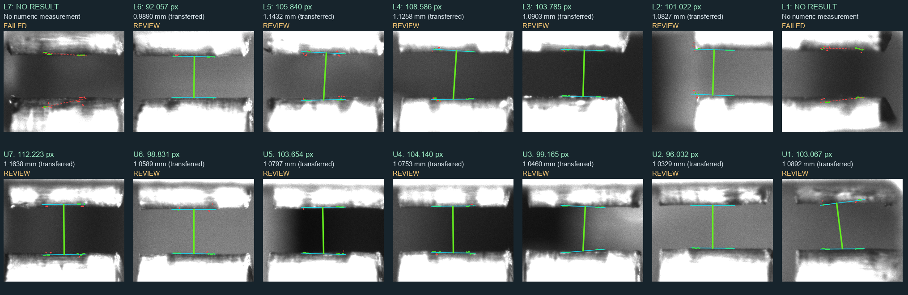
| 点位 | 像素 px | 参考 mm | 状态 | 原因 |
|---|---|---|---|---|
| U1 | 103.067 | 1.0892 | 有读数，待复核 | 上边：侧边不直或存在歧义；上边：中间轮廓偏离拟合线；上边：侧边存在偏离点；上边：整体轮廓起伏较大；上下拟合线夹角超过0.5度 |
| U2 | 96.032 | 1.0329 | 有读数，待复核 | 上边：中间轮廓偏离拟合线 |
| U3 | 99.165 | 1.0460 | 有读数，待复核 | 上边：中间轮廓不清晰；上边：中间轮廓偏离拟合线；上边：整体轮廓起伏较大；下边：中间轮廓偏离拟合线；上下拟合线夹角超过0.5度 |
| U4 | 104.140 | 1.0753 | 有读数，待复核 | 上边：中间轮廓不清晰；下边：侧边不直或存在歧义；下边：中间轮廓偏离拟合线；上下拟合线夹角超过0.5度 |
| U5 | 103.654 | 1.0797 | 有读数，待复核 | 下边：中间轮廓偏离拟合线；上下拟合线夹角超过0.5度 |
| U6 | 98.831 | 1.0589 | 有读数，待复核 | 上边：侧边不直或存在歧义；上边：侧边存在偏离点；上下拟合线夹角超过0.5度 |
| U7 | 112.223 | 1.1638 | 有读数，待复核 | 上边：中间轮廓不清晰；上边：侧边不直或存在歧义；上边：中间轮廓偏离拟合线；上边：侧边存在偏离点；下边：侧边不直或存在歧义；下边：中间轮廓偏离拟合线；下边：侧边存在偏离点；下边：整体轮廓起伏较大 |
| L1 | — | — | 无有效值 | 上边：左右符合拟合线的点不足；上边：侧边有效点覆盖不完整；上边：侧边不直或存在歧义；上边：中间轮廓偏离拟合线；上边：侧边存在偏离点；上边：整体轮廓起伏较大；下边：侧边不直或存在歧义；下边：中间轮廓偏离拟合线；下边：整体轮廓起伏较大；上下拟合线夹角超过0.5度 |
| L2 | 101.022 | 1.0827 | 有读数，待复核 | 上边：侧边不直或存在歧义；上边：中间轮廓偏离拟合线；上边：整体轮廓起伏较大；下边：侧边不直或存在歧义；下边：中间轮廓偏离拟合线；下边：侧边存在偏离点；下边：整体轮廓起伏较大；上下拟合线夹角超过0.5度 |
| L3 | 103.785 | 1.0903 | 有读数，待复核 | 上边：中间轮廓偏离拟合线 |
| L4 | 108.586 | 1.1258 | 有读数，待复核 | 上边：中间轮廓不清晰；上边：中间轮廓偏离拟合线；上边：侧边存在偏离点；下边：中间轮廓不清晰；下边：侧边不直或存在歧义；下边：中间轮廓偏离拟合线；下边：侧边存在偏离点；下边：整体轮廓起伏较大；上下拟合线夹角超过0.5度 |
| L5 | 105.840 | 1.1432 | 有读数，待复核 | 上边：侧边不直或存在歧义；上边：中间轮廓偏离拟合线；上边：侧边存在偏离点；上边：整体轮廓起伏较大；下边：侧边不直或存在歧义；下边：中间轮廓偏离拟合线；下边：侧边存在偏离点；下边：整体轮廓起伏较大；上下拟合线夹角超过0.5度 |
| L6 | 92.057 | 0.9890 | 有读数，待复核 | 上边：中间轮廓偏离拟合线；上边：侧边存在偏离点；下边：中间轮廓偏离拟合线；下边：整体轮廓起伏较大 |
| L7 | — | — | 无有效值 | 上边：中间轮廓偏离拟合线；下边：左右符合拟合线的点不足；下边：侧边不直或存在歧义；下边：中间轮廓偏离拟合线；下边：侧边存在偏离点；下边：整体轮廓起伏较大；上下拟合线夹角超过0.5度 |
原始图片 · 整图标注预览 · 上排从左到右 L7→L1，下排 U7→U1
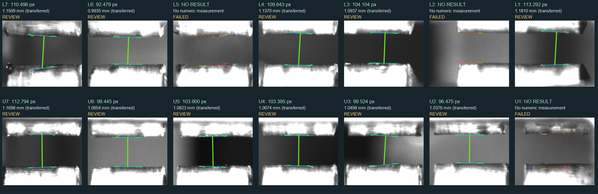
| 点位 | 像素 px | 参考 mm | 状态 | 原因 |
|---|---|---|---|---|
| U1 | — | — | 无有效值 | 上边：侧边不直或存在歧义；上边：中间轮廓偏离拟合线；上边：侧边存在偏离点；上边：整体轮廓起伏较大；下边：存在未解决的外侧边分支；下边：左右符合拟合线的点不足；下边：侧边不直或存在歧义；下边：中间轮廓偏离拟合线；下边：侧边存在偏离点；下边：整体轮廓起伏较大；上下拟合线夹角超过0.5度 |
| U2 | 96.475 | 1.0376 | 有读数，待复核 | 上边：侧边不直或存在歧义；上边：中间轮廓偏离拟合线；下边：中间轮廓偏离拟合线 |
| U3 | 99.524 | 1.0498 | 有读数，待复核 | 上边：中间轮廓不清晰；上边：中间轮廓偏离拟合线；上边：整体轮廓起伏较大；下边：中间轮廓偏离拟合线；上下拟合线夹角超过0.5度 |
| U4 | 103.395 | 1.0674 | 有读数，待复核 | 上边：中间轮廓不清晰；上边：侧边有效点覆盖不完整；上边：中间轮廓偏离拟合线；下边：中间轮廓偏离拟合线；上下拟合线夹角超过0.5度 |
| U5 | 103.900 | 1.0823 | 有读数，待复核 | 下边：侧边不直或存在歧义；下边：中间轮廓偏离拟合线；上下拟合线夹角超过0.5度 |
| U6 | 99.445 | 1.0654 | 有读数，待复核 | 上下拟合线夹角超过0.5度 |
| U7 | 112.794 | 1.1698 | 有读数，待复核 | 上边：中间轮廓不清晰；上边：侧边不直或存在歧义；上边：侧边存在偏离点；下边：中间轮廓偏离拟合线；下边：侧边存在偏离点；下边：整体轮廓起伏较大；上下拟合线夹角超过0.5度 |
| L1 | 113.292 | 1.1810 | 有读数，待复核 | 上边：中间轮廓偏离拟合线；上边：侧边存在偏离点；上边：整体轮廓起伏较大；下边：侧边不直或存在歧义；下边：中间轮廓偏离拟合线；下边：侧边存在偏离点；下边：整体轮廓起伏较大；上下拟合线夹角超过0.5度 |
| L2 | — | — | 无有效值 | 上边：中间轮廓不清晰；上边：侧边不直或存在歧义；上边：中间轮廓偏离拟合线；上边：整体轮廓起伏较大；下边：中间轮廓不清晰；下边：左右符合拟合线的点不足；下边：侧边有效点覆盖不完整；下边：侧边不直或存在歧义；下边：中间轮廓偏离拟合线；下边：侧边存在偏离点；下边：整体轮廓起伏较大；上下拟合线夹角超过0.5度 |
| L3 | 104.104 | 1.0937 | 有读数，待复核 | 上边：中间轮廓偏离拟合线；下边：中间轮廓不清晰；上下拟合线夹角超过0.5度 |
| L4 | 109.643 | 1.1370 | 有读数，待复核 | 上边：中间轮廓不清晰；上边：侧边不直或存在歧义；上边：中间轮廓偏离拟合线；上边：侧边存在偏离点；下边：侧边不直或存在歧义；下边：中间轮廓偏离拟合线；下边：侧边存在偏离点；上下拟合线夹角超过0.5度 |
| L5 | — | — | 无有效值 | 上边：侧边不直或存在歧义；上边：中间轮廓偏离拟合线；上边：侧边存在偏离点；上边：整体轮廓起伏较大；下边：左右符合拟合线的点不足；下边：侧边不直或存在歧义；下边：中间轮廓偏离拟合线；下边：侧边存在偏离点；下边：整体轮廓起伏较大；上下拟合线夹角超过0.5度 |
| L6 | 92.479 | 0.9935 | 有读数，待复核 | 下边：侧边不直或存在歧义；下边：中间轮廓偏离拟合线；下边：整体轮廓起伏较大；上下拟合线夹角超过0.5度 |
| L7 | 110.496 | 1.1509 | 有读数，待复核 | 上边：中间轮廓偏离拟合线；下边：侧边不直或存在歧义；下边：中间轮廓偏离拟合线；下边：侧边存在偏离点；下边：整体轮廓起伏较大；上下拟合线夹角超过0.5度 |
原始图片 · 整图标注预览 · 上排从左到右 L7→L1，下排 U7→U1
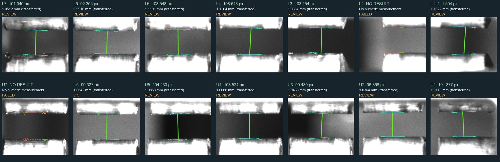
| 点位 | 像素 px | 参考 mm | 状态 | 原因 |
|---|---|---|---|---|
| U1 | 101.377 | 1.0713 | 有读数，待复核 | 上边：中间轮廓偏离拟合线；上边：侧边存在偏离点；上边：整体轮廓起伏较大；上下拟合线夹角超过0.5度 |
| U2 | 96.368 | 1.0364 | 有读数，待复核 | 上边：中间轮廓偏离拟合线；下边：中间轮廓偏离拟合线 |
| U3 | 99.430 | 1.0488 | 有读数，待复核 | 上边：中间轮廓偏离拟合线；上边：整体轮廓起伏较大；下边：侧边不直或存在歧义；下边：中间轮廓偏离拟合线；上下拟合线夹角超过0.5度 |
| U4 | 103.524 | 1.0688 | 有读数，待复核 | 上边：中间轮廓不清晰；上边：侧边有效点覆盖不完整；下边：中间轮廓偏离拟合线；上下拟合线夹角超过0.5度 |
| U5 | 104.230 | 1.0858 | 有读数，待复核 | 下边：中间轮廓偏离拟合线；上下拟合线夹角超过0.5度 |
| U6 | 99.327 | 1.0642 | 有读数 | |
| U7 | — | — | 无有效值 | 上边：侧边不直或存在歧义；上边：中间轮廓偏离拟合线；上边：侧边存在偏离点；上边：整体轮廓起伏较大；下边：左右符合拟合线的点不足；下边：侧边不直或存在歧义；下边：中间轮廓偏离拟合线；下边：侧边存在偏离点；下边：整体轮廓起伏较大 |
| L1 | 111.504 | 1.1622 | 有读数，待复核 | 上边：中间轮廓不清晰；上边：侧边有效点覆盖不完整；上边：中间轮廓偏离拟合线；上边：整体轮廓起伏较大；下边：中间轮廓偏离拟合线；下边：整体轮廓起伏较大；上下拟合线夹角超过0.5度 |
| L2 | — | — | 无有效值 | 上边：中间轮廓不清晰；上边：侧边不直或存在歧义；上边：中间轮廓偏离拟合线；上边：整体轮廓起伏较大；下边：左右符合拟合线的点不足；下边：侧边不直或存在歧义；下边：中间轮廓偏离拟合线；下边：侧边存在偏离点；下边：整体轮廓起伏较大；上下拟合线夹角超过0.5度 |
| L3 | 103.154 | 1.0837 | 有读数，待复核 | 上边：侧边有效点覆盖不完整 |
| L4 | 108.643 | 1.1264 | 有读数，待复核 | 上边：中间轮廓不清晰；上边：侧边有效点覆盖不完整；上边：中间轮廓偏离拟合线；下边：侧边不直或存在歧义；下边：中间轮廓偏离拟合线；下边：侧边存在偏离点；上下拟合线夹角超过0.5度 |
| L5 | 103.548 | 1.1191 | 有读数，待复核 | 上边：侧边不直或存在歧义；上边：中间轮廓偏离拟合线；上边：侧边存在偏离点；上边：整体轮廓起伏较大；下边：中间轮廓偏离拟合线；下边：整体轮廓起伏较大 |
| L6 | 92.305 | 0.9916 | 有读数，待复核 | 上下拟合线夹角超过0.5度 |
| L7 | 101.049 | 1.0512 | 有读数，待复核 | 上边：中间轮廓偏离拟合线；下边：侧边不直或存在歧义；下边：中间轮廓偏离拟合线；下边：侧边存在偏离点；下边：整体轮廓起伏较大；上下拟合线夹角超过0.5度 |
原始图片 · 整图标注预览 · 上排从左到右 L7→L1，下排 U7→U1
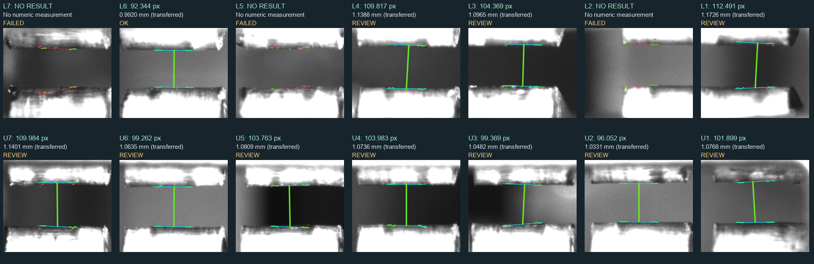
| 点位 | 像素 px | 参考 mm | 状态 | 原因 |
|---|---|---|---|---|
| U1 | 101.899 | 1.0768 | 有读数，待复核 | 上边：侧边不直或存在歧义；上边：中间轮廓偏离拟合线；上边：侧边存在偏离点；上边：整体轮廓起伏较大；上下拟合线夹角超过0.5度 |
| U2 | 96.052 | 1.0331 | 有读数，待复核 | 上边：中间轮廓偏离拟合线 |
| U3 | 99.369 | 1.0482 | 有读数，待复核 | 上边：中间轮廓偏离拟合线；上边：整体轮廓起伏较大；下边：中间轮廓偏离拟合线；上下拟合线夹角超过0.5度 |
| U4 | 103.983 | 1.0736 | 有读数，待复核 | 上边：中间轮廓不清晰；下边：中间轮廓偏离拟合线；上下拟合线夹角超过0.5度 |
| U5 | 103.763 | 1.0809 | 有读数，待复核 | 下边：中间轮廓不清晰；下边：中间轮廓偏离拟合线；上下拟合线夹角超过0.5度 |
| U6 | 99.262 | 1.0635 | 有读数，待复核 | 下边：中间轮廓偏离拟合线 |
| U7 | 109.984 | 1.1401 | 有读数，待复核 | 上边：中间轮廓不清晰；上边：侧边不直或存在歧义；上边：中间轮廓偏离拟合线；上边：侧边存在偏离点；下边：侧边不直或存在歧义；下边：中间轮廓偏离拟合线；下边：侧边存在偏离点；下边：整体轮廓起伏较大；上下拟合线夹角超过0.5度 |
| L1 | 112.491 | 1.1726 | 有读数，待复核 | 上边：中间轮廓不清晰；上边：侧边有效点覆盖不完整；上边：中间轮廓偏离拟合线；上边：整体轮廓起伏较大；下边：中间轮廓偏离拟合线；下边：整体轮廓起伏较大；上下拟合线夹角超过0.5度 |
| L2 | — | — | 无有效值 | 上边：侧边不直或存在歧义；上边：中间轮廓偏离拟合线；上边：侧边存在偏离点；上边：整体轮廓起伏较大；下边：左右符合拟合线的点不足；下边：侧边不直或存在歧义；下边：中间轮廓偏离拟合线；下边：侧边存在偏离点；下边：整体轮廓起伏较大；上下拟合线夹角超过0.5度 |
| L3 | 104.369 | 1.0965 | 有读数，待复核 | 上边：侧边存在偏离点；下边：中间轮廓不清晰；下边：侧边存在偏离点 |
| L4 | 109.817 | 1.1388 | 有读数，待复核 | 上边：中间轮廓不清晰；上边：中间轮廓偏离拟合线；下边：中间轮廓偏离拟合线；上下拟合线夹角超过0.5度 |
| L5 | — | — | 无有效值 | 上边：侧边不直或存在歧义；上边：中间轮廓偏离拟合线；上边：侧边存在偏离点；上边：整体轮廓起伏较大；下边：左右符合拟合线的点不足；下边：侧边不直或存在歧义；下边：中间轮廓偏离拟合线；下边：侧边存在偏离点；下边：整体轮廓起伏较大；上下拟合线夹角超过0.5度 |
| L6 | 92.344 | 0.9920 | 有读数 | |
| L7 | — | — | 无有效值 | 上边：中间轮廓偏离拟合线；上边：侧边存在偏离点；下边：左右符合拟合线的点不足；下边：侧边不直或存在歧义；下边：中间轮廓偏离拟合线；下边：侧边存在偏离点；下边：整体轮廓起伏较大；上下拟合线夹角超过0.5度 |
原始图片 · 整图标注预览 · 上排从左到右 L7→L1，下排 U7→U1
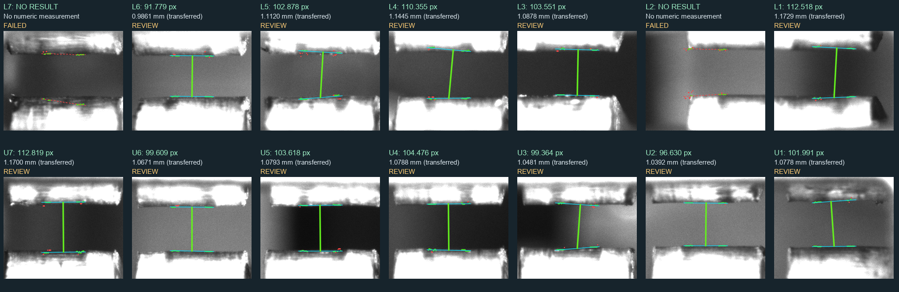
| 点位 | 像素 px | 参考 mm | 状态 | 原因 |
|---|---|---|---|---|
| U1 | 101.991 | 1.0778 | 有读数，待复核 | 上边：侧边有效点覆盖不完整；上边：中间轮廓偏离拟合线；上边：整体轮廓起伏较大；上下拟合线夹角超过0.5度 |
| U2 | 96.630 | 1.0392 | 有读数，待复核 | 上边：中间轮廓偏离拟合线 |
| U3 | 99.364 | 1.0481 | 有读数，待复核 | 上边：侧边不直或存在歧义；上边：中间轮廓偏离拟合线；上边：侧边存在偏离点；上边：整体轮廓起伏较大；下边：中间轮廓偏离拟合线；上下拟合线夹角超过0.5度 |
| U4 | 104.476 | 1.0788 | 有读数，待复核 | 上边：中间轮廓不清晰；下边：侧边不直或存在歧义；下边：中间轮廓偏离拟合线；上下拟合线夹角超过0.5度 |
| U5 | 103.618 | 1.0793 | 有读数，待复核 | 下边：侧边不直或存在歧义；下边：中间轮廓偏离拟合线；下边：侧边存在偏离点；上下拟合线夹角超过0.5度 |
| U6 | 99.609 | 1.0671 | 有读数，待复核 | 上边：侧边存在偏离点；上下拟合线夹角超过0.5度 |
| U7 | 112.819 | 1.1700 | 有读数，待复核 | 上边：中间轮廓不清晰；上边：侧边不直或存在歧义；上边：中间轮廓偏离拟合线；上边：侧边存在偏离点；下边：侧边不直或存在歧义；下边：中间轮廓偏离拟合线；下边：侧边存在偏离点；下边：整体轮廓起伏较大 |
| L1 | 112.518 | 1.1729 | 有读数，待复核 | 上边：中间轮廓不清晰；上边：中间轮廓偏离拟合线；上边：整体轮廓起伏较大；下边：中间轮廓偏离拟合线；下边：整体轮廓起伏较大；上下拟合线夹角超过0.5度 |
| L2 | — | — | 无有效值 | 上边：中间轮廓偏离拟合线；上边：侧边存在偏离点；上边：整体轮廓起伏较大；下边：左右符合拟合线的点不足；下边：侧边不直或存在歧义；下边：中间轮廓偏离拟合线；下边：侧边存在偏离点；下边：整体轮廓起伏较大；上下拟合线夹角超过0.5度 |
| L3 | 103.551 | 1.0878 | 有读数，待复核 | 上边：中间轮廓不清晰；上边：侧边存在偏离点 |
| L4 | 110.355 | 1.1445 | 有读数，待复核 | 上边：中间轮廓偏离拟合线；下边：中间轮廓偏离拟合线；下边：侧边存在偏离点；上下拟合线夹角超过0.5度 |
| L5 | 102.878 | 1.1120 | 有读数，待复核 | 上边：侧边不直或存在歧义；上边：中间轮廓偏离拟合线；上边：侧边存在偏离点；上边：整体轮廓起伏较大；下边：侧边不直或存在歧义；下边：中间轮廓偏离拟合线；下边：侧边存在偏离点；下边：整体轮廓起伏较大；上下拟合线夹角超过0.5度 |
| L6 | 91.779 | 0.9861 | 有读数，待复核 | 上边：侧边不直或存在歧义；上边：侧边存在偏离点；上边：整体轮廓起伏较大 |
| L7 | — | — | 无有效值 | 上边：中间轮廓偏离拟合线；下边：连续边恢复与实测侧边冲突；下边：侧边有效点覆盖不完整；下边：中间轮廓偏离拟合线；下边：整体轮廓起伏较大；上下拟合线夹角超过0.5度 |
原始图片 · 整图标注预览 · 上排从左到右 L7→L1，下排 U7→U1
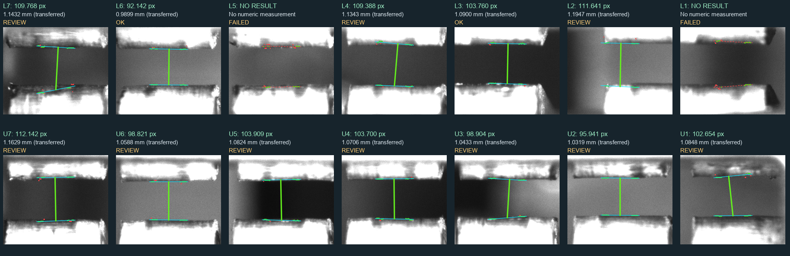
| 点位 | 像素 px | 参考 mm | 状态 | 原因 |
|---|---|---|---|---|
| U1 | 102.654 | 1.0848 | 有读数，待复核 | 上边：侧边不直或存在歧义；上边：中间轮廓偏离拟合线；上边：侧边存在偏离点；上边：整体轮廓起伏较大；上下拟合线夹角超过0.5度 |
| U2 | 95.941 | 1.0319 | 有读数，待复核 | 下边：整体轮廓起伏较大 |
| U3 | 98.904 | 1.0433 | 有读数，待复核 | 上边：中间轮廓偏离拟合线；上边：整体轮廓起伏较大；下边：中间轮廓偏离拟合线；上下拟合线夹角超过0.5度 |
| U4 | 103.700 | 1.0706 | 有读数，待复核 | 上边：中间轮廓不清晰；下边：中间轮廓偏离拟合线；上下拟合线夹角超过0.5度 |
| U5 | 103.909 | 1.0824 | 有读数，待复核 | 下边：中间轮廓偏离拟合线；上下拟合线夹角超过0.5度 |
| U6 | 98.821 | 1.0588 | 有读数，待复核 | 上边：侧边存在偏离点；上下拟合线夹角超过0.5度 |
| U7 | 112.142 | 1.1629 | 有读数，待复核 | 上边：侧边不直或存在歧义；上边：侧边存在偏离点；下边：中间轮廓偏离拟合线；下边：侧边存在偏离点；下边：整体轮廓起伏较大；上下拟合线夹角超过0.5度 |
| L1 | — | — | 无有效值 | 上边：中间轮廓不清晰；上边：中间轮廓偏离拟合线；上边：侧边存在偏离点；上边：整体轮廓起伏较大；下边：左右符合拟合线的点不足；下边：侧边不直或存在歧义；下边：中间轮廓偏离拟合线；下边：侧边存在偏离点；下边：整体轮廓起伏较大；上下拟合线夹角超过0.5度 |
| L2 | 111.641 | 1.1947 | 有读数，待复核 | 上边：中间轮廓不清晰；上边：侧边不直或存在歧义；上边：中间轮廓偏离拟合线；上边：整体轮廓起伏较大；下边：中间轮廓不清晰；下边：侧边有效点覆盖不完整；下边：中间轮廓偏离拟合线；下边：整体轮廓起伏较大；上下拟合线夹角超过0.5度 |
| L3 | 103.760 | 1.0900 | 有读数 | |
| L4 | 109.388 | 1.1343 | 有读数，待复核 | 上边：中间轮廓不清晰；上边：侧边不直或存在歧义；上边：中间轮廓偏离拟合线；下边：中间轮廓偏离拟合线；下边：整体轮廓起伏较大；上下拟合线夹角超过0.5度 |
| L5 | — | — | 无有效值 | 上边：左右符合拟合线的点不足；上边：侧边不直或存在歧义；上边：中间轮廓偏离拟合线；上边：侧边存在偏离点；上边：整体轮廓起伏较大；下边：中间轮廓偏离拟合线；上下拟合线夹角超过0.5度 |
| L6 | 92.142 | 0.9899 | 有读数 | |
| L7 | 109.768 | 1.1432 | 有读数，待复核 | 上边：中间轮廓偏离拟合线；上边：整体轮廓起伏较大；下边：侧边不直或存在歧义；下边：中间轮廓偏离拟合线；下边：侧边存在偏离点；下边：整体轮廓起伏较大；上下拟合线夹角超过0.5度 |
原始图片 · 整图标注预览 · 上排从左到右 L7→L1，下排 U7→U1
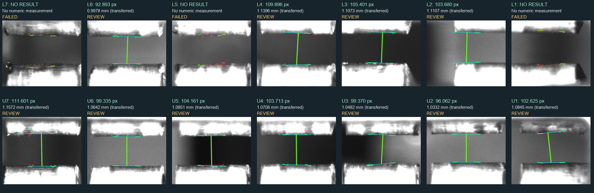
| 点位 | 像素 px | 参考 mm | 状态 | 原因 |
|---|---|---|---|---|
| U1 | 102.625 | 1.0845 | 有读数，待复核 | 上边：侧边不直或存在歧义；上边：中间轮廓偏离拟合线；上边：侧边存在偏离点；上边：整体轮廓起伏较大；上下拟合线夹角超过0.5度 |
| U2 | 96.062 | 1.0332 | 有读数，待复核 | 上边：中间轮廓偏离拟合线 |
| U3 | 99.370 | 1.0482 | 有读数，待复核 | 上边：中间轮廓不清晰；上边：中间轮廓偏离拟合线；上边：整体轮廓起伏较大；下边：中间轮廓偏离拟合线；上下拟合线夹角超过0.5度 |
| U4 | 103.713 | 1.0708 | 有读数，待复核 | 上边：中间轮廓不清晰；上边：侧边有效点覆盖不完整；下边：中间轮廓不清晰；下边：侧边不直或存在歧义；下边：中间轮廓偏离拟合线；上下拟合线夹角超过0.5度 |
| U5 | 104.161 | 1.0851 | 有读数，待复核 | 下边：中间轮廓偏离拟合线；下边：侧边存在偏离点；上下拟合线夹角超过0.5度 |
| U6 | 99.335 | 1.0642 | 有读数，待复核 | 上边：中间轮廓偏离拟合线；上下拟合线夹角超过0.5度 |
| U7 | 111.601 | 1.1572 | 有读数，待复核 | 上边：侧边不直或存在歧义；上边：中间轮廓偏离拟合线；上边：侧边存在偏离点；下边：侧边不直或存在歧义；下边：中间轮廓偏离拟合线；下边：侧边存在偏离点；下边：整体轮廓起伏较大；上下拟合线夹角超过0.5度 |
| L1 | — | — | 无有效值 | 上边：中间轮廓不清晰；上边：中间轮廓偏离拟合线；下边：左右符合拟合线的点不足；下边：侧边不直或存在歧义；下边：中间轮廓偏离拟合线；下边：侧边存在偏离点；下边：整体轮廓起伏较大；上下拟合线夹角超过0.5度 |
| L2 | 103.680 | 1.1107 | 有读数，待复核 | 上边：中间轮廓偏离拟合线；上边：整体轮廓起伏较大；下边：侧边不直或存在歧义；下边：中间轮廓偏离拟合线；下边：侧边存在偏离点；下边：整体轮廓起伏较大；上下拟合线夹角超过0.5度 |
| L3 | 105.401 | 1.1073 | 有读数，待复核 | 上边：中间轮廓偏离拟合线；下边：侧边存在偏离点 |
| L4 | 109.896 | 1.1396 | 有读数，待复核 | 上边：中间轮廓不清晰；上边：中间轮廓偏离拟合线；上边：侧边存在偏离点；下边：中间轮廓不清晰；下边：侧边不直或存在歧义；下边：中间轮廓偏离拟合线；下边：侧边存在偏离点；上下拟合线夹角超过0.5度 |
| L5 | — | — | 无有效值 | 上边：侧边不直或存在歧义；上边：中间轮廓偏离拟合线；上边：侧边存在偏离点；上边：整体轮廓起伏较大；下边：中间轮廓不清晰；下边：左右符合拟合线的点不足；下边：侧边不直或存在歧义；下边：中间轮廓偏离拟合线；下边：侧边存在偏离点；下边：整体轮廓起伏较大；上下拟合线夹角超过0.5度 |
| L6 | 92.893 | 0.9978 | 有读数，待复核 | 上边：中间轮廓偏离拟合线；下边：中间轮廓偏离拟合线；上下拟合线夹角超过0.5度 |
| L7 | — | — | 无有效值 | 上边：中间轮廓偏离拟合线；下边：连续边恢复与实测侧边冲突；下边：中间轮廓不清晰；下边：侧边有效点覆盖不完整；下边：中间轮廓偏离拟合线；下边：整体轮廓起伏较大；上下拟合线夹角超过0.5度 |
原始图片 · 整图标注预览 · 上排从左到右 L7→L1，下排 U7→U1
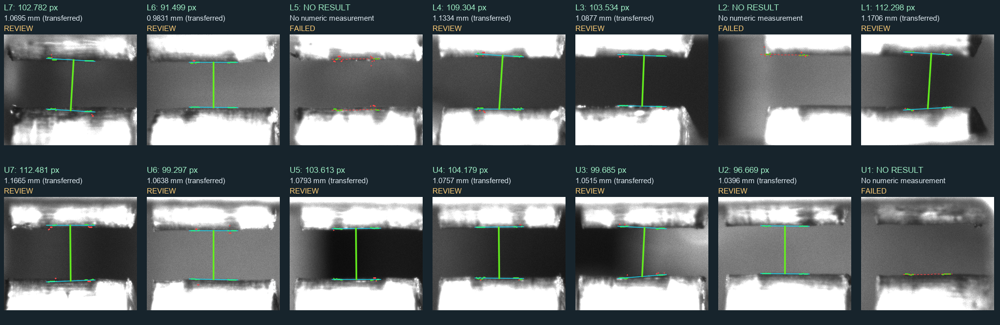
| 点位 | 像素 px | 参考 mm | 状态 | 原因 |
|---|---|---|---|---|
| U1 | — | — | 无有效值 | 上边：边缘粗定位不足；上边：未找到左右一致的边缘；上边：左右有效边缘点不足 |
| U2 | 96.669 | 1.0396 | 有读数，待复核 | 上边：中间轮廓偏离拟合线 |
| U3 | 99.685 | 1.0515 | 有读数，待复核 | 上边：中间轮廓偏离拟合线；上边：整体轮廓起伏较大；下边：中间轮廓偏离拟合线；上下拟合线夹角超过0.5度 |
| U4 | 104.179 | 1.0757 | 有读数，待复核 | 上边：中间轮廓不清晰；下边：中间轮廓偏离拟合线；上下拟合线夹角超过0.5度 |
| U5 | 103.613 | 1.0793 | 有读数，待复核 | 下边：中间轮廓偏离拟合线；下边：侧边存在偏离点；上下拟合线夹角超过0.5度 |
| U6 | 99.297 | 1.0638 | 有读数，待复核 | 上边：侧边不直或存在歧义；上边：侧边存在偏离点；下边：侧边不直或存在歧义；上下拟合线夹角超过0.5度 |
| U7 | 112.481 | 1.1665 | 有读数，待复核 | 上边：侧边不直或存在歧义；上边：中间轮廓偏离拟合线；上边：侧边存在偏离点；下边：中间轮廓偏离拟合线；下边：侧边存在偏离点；下边：整体轮廓起伏较大；上下拟合线夹角超过0.5度 |
| L1 | 112.298 | 1.1706 | 有读数，待复核 | 上边：中间轮廓不清晰；上边：侧边不直或存在歧义；上边：中间轮廓偏离拟合线；下边：中间轮廓偏离拟合线；下边：整体轮廓起伏较大；上下拟合线夹角超过0.5度 |
| L2 | — | — | 无有效值 | 上边：侧边不直或存在歧义；上边：中间轮廓偏离拟合线；上边：侧边存在偏离点；上边：整体轮廓起伏较大；下边：边缘粗定位不足；下边：未找到左右一致的边缘；下边：左右有效边缘点不足 |
| L3 | 103.534 | 1.0877 | 有读数，待复核 | 上边：中间轮廓偏离拟合线；上边：侧边存在偏离点；下边：中间轮廓不清晰；上下拟合线夹角超过0.5度 |
| L4 | 109.304 | 1.1334 | 有读数，待复核 | 上边：中间轮廓不清晰；上边：中间轮廓偏离拟合线；上边：侧边存在偏离点；下边：侧边不直或存在歧义；下边：中间轮廓偏离拟合线；下边：侧边存在偏离点；下边：整体轮廓起伏较大；上下拟合线夹角超过0.5度 |
| L5 | — | — | 无有效值 | 上边：左右符合拟合线的点不足；上边：侧边不直或存在歧义；上边：中间轮廓偏离拟合线；上边：侧边存在偏离点；上边：整体轮廓起伏较大；下边：侧边不直或存在歧义；下边：中间轮廓偏离拟合线；下边：侧边存在偏离点；下边：整体轮廓起伏较大 |
| L6 | 91.499 | 0.9831 | 有读数，待复核 | 上边：中间轮廓偏离拟合线；上边：整体轮廓起伏较大；下边：中间轮廓偏离拟合线 |
| L7 | 102.782 | 1.0695 | 有读数，待复核 | 上边：中间轮廓偏离拟合线；下边：侧边不直或存在歧义；下边：中间轮廓偏离拟合线；下边：整体轮廓起伏较大 |
原始图片 · 整图标注预览 · 上排从左到右 L7→L1，下排 U7→U1
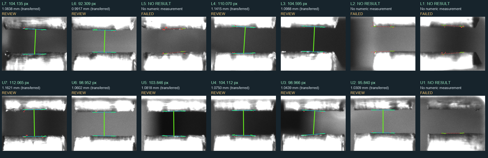
| 点位 | 像素 px | 参考 mm | 状态 | 原因 |
|---|---|---|---|---|
| U1 | — | — | 无有效值 | 上边：边缘粗定位不足；上边：未找到左右一致的边缘；上边：左右有效边缘点不足 |
| U2 | 95.840 | 1.0309 | 有读数，待复核 | 上边：中间轮廓偏离拟合线；下边：侧边不直或存在歧义；下边：中间轮廓偏离拟合线；下边：侧边存在偏离点 |
| U3 | 98.966 | 1.0439 | 有读数，待复核 | 上边：中间轮廓不清晰；上边：侧边不直或存在歧义；上边：中间轮廓偏离拟合线；上边：侧边存在偏离点；上边：整体轮廓起伏较大；下边：中间轮廓偏离拟合线；上下拟合线夹角超过0.5度 |
| U4 | 104.112 | 1.0750 | 有读数，待复核 | 上边：中间轮廓不清晰；下边：中间轮廓偏离拟合线；上下拟合线夹角超过0.5度 |
| U5 | 103.846 | 1.0818 | 有读数，待复核 | 下边：中间轮廓偏离拟合线；上下拟合线夹角超过0.5度 |
| U6 | 98.952 | 1.0602 | 有读数，待复核 | 上下拟合线夹角超过0.5度 |
| U7 | 112.065 | 1.1621 | 有读数，待复核 | 上边：中间轮廓不清晰；上边：侧边不直或存在歧义；上边：中间轮廓偏离拟合线；下边：侧边不直或存在歧义；下边：中间轮廓偏离拟合线；下边：侧边存在偏离点；下边：整体轮廓起伏较大；上下拟合线夹角超过0.5度 |
| L1 | — | — | 无有效值 | 上边：侧边不直或存在歧义；上边：中间轮廓偏离拟合线；上边：侧边存在偏离点；上边：整体轮廓起伏较大；下边：左右符合拟合线的点不足；下边：侧边不直或存在歧义；下边：中间轮廓偏离拟合线；下边：侧边存在偏离点；下边：整体轮廓起伏较大；上下拟合线夹角超过0.5度 |
| L2 | — | — | 无有效值 | 上边：中间轮廓不清晰；上边：侧边不直或存在歧义；上边：中间轮廓偏离拟合线；上边：侧边存在偏离点；上边：整体轮廓起伏较大；下边：左右符合拟合线的点不足；下边：侧边有效点覆盖不完整；下边：中间轮廓偏离拟合线；下边：整体轮廓起伏较大；上下拟合线夹角超过0.5度 |
| L3 | 104.595 | 1.0988 | 有读数，待复核 | 上边：中间轮廓偏离拟合线；下边：中间轮廓不清晰；下边：侧边存在偏离点；上下拟合线夹角超过0.5度 |
| L4 | 110.070 | 1.1415 | 有读数，待复核 | 上边：中间轮廓不清晰；上边：中间轮廓偏离拟合线；下边：中间轮廓不清晰；下边：侧边不直或存在歧义；下边：中间轮廓偏离拟合线；下边：侧边存在偏离点；上下拟合线夹角超过0.5度 |
| L5 | — | — | 无有效值 | 上边：左右符合拟合线的点不足；上边：侧边不直或存在歧义；上边：中间轮廓偏离拟合线；上边：侧边存在偏离点；上边：整体轮廓起伏较大；下边：侧边不直或存在歧义；下边：中间轮廓偏离拟合线；下边：侧边存在偏离点；下边：整体轮廓起伏较大；上下拟合线夹角超过0.5度 |
| L6 | 92.309 | 0.9917 | 有读数，待复核 | 上边：整体轮廓起伏较大；上下拟合线夹角超过0.5度 |
| L7 | 104.135 | 1.0838 | 有读数，待复核 | 上边：中间轮廓偏离拟合线；上边：侧边存在偏离点；下边：中间轮廓不清晰；下边：中间轮廓偏离拟合线；上下拟合线夹角超过0.5度 |
原始图片 · 整图标注预览 · 上排从左到右 L7→L1，下排 U7→U1
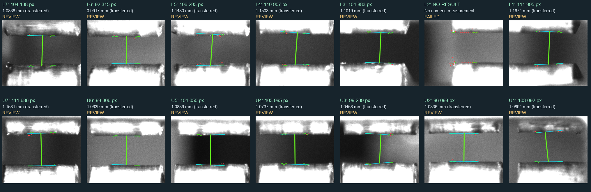
| 点位 | 像素 px | 参考 mm | 状态 | 原因 |
|---|---|---|---|---|
| U1 | 103.092 | 1.0894 | 有读数，待复核 | 上边：侧边不直或存在歧义；上边：中间轮廓偏离拟合线；上边：侧边存在偏离点；上边：整体轮廓起伏较大；上下拟合线夹角超过0.5度 |
| U2 | 96.098 | 1.0336 | 有读数，待复核 | 上边：中间轮廓偏离拟合线；上边：整体轮廓起伏较大 |
| U3 | 99.239 | 1.0468 | 有读数，待复核 | 上边：中间轮廓不清晰；上边：中间轮廓偏离拟合线；上边：整体轮廓起伏较大；下边：中间轮廓偏离拟合线；上下拟合线夹角超过0.5度 |
| U4 | 103.995 | 1.0737 | 有读数，待复核 | 上边：中间轮廓不清晰；上边：侧边存在偏离点；下边：中间轮廓偏离拟合线；上下拟合线夹角超过0.5度 |
| U5 | 104.050 | 1.0839 | 有读数，待复核 | 下边：侧边不直或存在歧义；下边：中间轮廓偏离拟合线；上下拟合线夹角超过0.5度 |
| U6 | 99.306 | 1.0639 | 有读数，待复核 | 上下拟合线夹角超过0.5度 |
| U7 | 111.686 | 1.1581 | 有读数，待复核 | 上边：中间轮廓不清晰；上边：侧边不直或存在歧义；上边：中间轮廓偏离拟合线；上边：侧边存在偏离点；上边：整体轮廓起伏较大；下边：中间轮廓偏离拟合线；下边：整体轮廓起伏较大 |
| L1 | 111.995 | 1.1674 | 有读数，待复核 | 上边：中间轮廓偏离拟合线；上边：整体轮廓起伏较大；下边：中间轮廓不清晰；下边：侧边不直或存在歧义；下边：中间轮廓偏离拟合线；下边：整体轮廓起伏较大；上下拟合线夹角超过0.5度 |
| L2 | — | — | 无有效值 | 上边：中间轮廓不清晰；上边：侧边不直或存在歧义；上边：中间轮廓偏离拟合线；上边：整体轮廓起伏较大；下边：未找到左右一致的边缘；下边：左右符合拟合线的点不足；下边：左右侧边不能形成一致直线；下边：侧边不直或存在歧义；下边：中间轮廓偏离拟合线；下边：侧边存在偏离点；下边：整体轮廓起伏较大；上下拟合线夹角超过0.5度 |
| L3 | 104.883 | 1.1019 | 有读数，待复核 | 上边：中间轮廓偏离拟合线；上下拟合线夹角超过0.5度 |
| L4 | 110.907 | 1.1503 | 有读数，待复核 | 上边：中间轮廓不清晰；上边：侧边不直或存在歧义；上边：中间轮廓偏离拟合线；上边：侧边存在偏离点；上边：整体轮廓起伏较大；下边：中间轮廓偏离拟合线；下边：侧边存在偏离点；上下拟合线夹角超过0.5度 |
| L5 | 106.293 | 1.1480 | 有读数，待复核 | 上边：侧边不直或存在歧义；上边：中间轮廓偏离拟合线；上边：侧边存在偏离点；上边：整体轮廓起伏较大；下边：侧边不直或存在歧义；下边：中间轮廓偏离拟合线；下边：侧边存在偏离点；下边：整体轮廓起伏较大；上下拟合线夹角超过0.5度 |
| L6 | 92.315 | 0.9917 | 有读数，待复核 | 上边：侧边存在偏离点 |
| L7 | 104.138 | 1.0838 | 有读数，待复核 | 上边：中间轮廓偏离拟合线；下边：中间轮廓偏离拟合线；下边：整体轮廓起伏较大；上下拟合线夹角超过0.5度 |
原始图片 · 整图标注预览 · 上排从左到右 L7→L1，下排 U7→U1
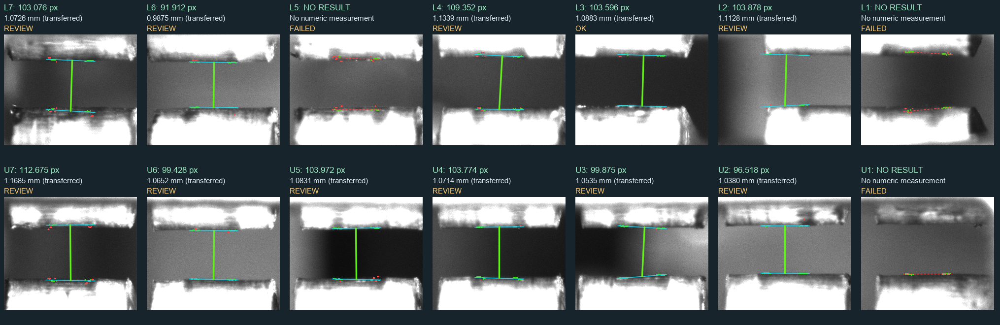
| 点位 | 像素 px | 参考 mm | 状态 | 原因 |
|---|---|---|---|---|
| U1 | — | — | 无有效值 | 上边：边缘粗定位不足；上边：未找到左右一致的边缘；上边：左右有效边缘点不足 |
| U2 | 96.518 | 1.0380 | 有读数，待复核 | 上边：侧边不直或存在歧义；上边：中间轮廓偏离拟合线；上边：整体轮廓起伏较大 |
| U3 | 99.875 | 1.0535 | 有读数，待复核 | 上边：中间轮廓偏离拟合线；上边：整体轮廓起伏较大；下边：中间轮廓偏离拟合线；上下拟合线夹角超过0.5度 |
| U4 | 103.774 | 1.0714 | 有读数，待复核 | 上边：中间轮廓不清晰；下边：中间轮廓不清晰；下边：中间轮廓偏离拟合线；上下拟合线夹角超过0.5度 |
| U5 | 103.972 | 1.0831 | 有读数，待复核 | 下边：侧边不直或存在歧义；下边：中间轮廓偏离拟合线；下边：侧边存在偏离点；上下拟合线夹角超过0.5度 |
| U6 | 99.428 | 1.0652 | 有读数，待复核 | 上边：侧边不直或存在歧义；上边：侧边存在偏离点；上下拟合线夹角超过0.5度 |
| U7 | 112.675 | 1.1685 | 有读数，待复核 | 上边：侧边不直或存在歧义；上边：侧边存在偏离点；下边：侧边不直或存在歧义；下边：中间轮廓偏离拟合线；下边：侧边存在偏离点；下边：整体轮廓起伏较大；上下拟合线夹角超过0.5度 |
| L1 | — | — | 无有效值 | 上边：中间轮廓不清晰；上边：中间轮廓偏离拟合线；下边：左右符合拟合线的点不足；下边：侧边不直或存在歧义；下边：中间轮廓偏离拟合线；下边：侧边存在偏离点；下边：整体轮廓起伏较大；上下拟合线夹角超过0.5度 |
| L2 | 103.878 | 1.1128 | 有读数，待复核 | 上边：中间轮廓不清晰；上边：中间轮廓偏离拟合线；上边：整体轮廓起伏较大；下边：侧边有效点覆盖不完整；下边：中间轮廓偏离拟合线；下边：整体轮廓起伏较大；上下拟合线夹角超过0.5度 |
| L3 | 103.596 | 1.0883 | 有读数 | |
| L4 | 109.352 | 1.1339 | 有读数，待复核 | 上边：中间轮廓不清晰；上边：中间轮廓偏离拟合线；上边：侧边存在偏离点；上边：整体轮廓起伏较大；下边：侧边不直或存在歧义；下边：中间轮廓偏离拟合线；下边：侧边存在偏离点；上下拟合线夹角超过0.5度 |
| L5 | — | — | 无有效值 | 上边：左右符合拟合线的点不足；上边：侧边不直或存在歧义；上边：中间轮廓偏离拟合线；上边：侧边存在偏离点；上边：整体轮廓起伏较大；下边：中间轮廓不清晰；下边：侧边不直或存在歧义；下边：中间轮廓偏离拟合线；下边：侧边存在偏离点；下边：整体轮廓起伏较大；上下拟合线夹角超过0.5度 |
| L6 | 91.912 | 0.9875 | 有读数，待复核 | 上边：侧边存在偏离点；下边：侧边不直或存在歧义 |
| L7 | 103.076 | 1.0726 | 有读数，待复核 | 上边：中间轮廓偏离拟合线；上边：侧边存在偏离点；下边：侧边不直或存在歧义；下边：中间轮廓偏离拟合线；下边：侧边存在偏离点；下边：整体轮廓起伏较大；上下拟合线夹角超过0.5度 |
原始图片 · 整图标注预览 · 上排从左到右 L7→L1，下排 U7→U1
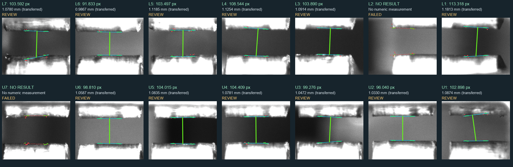
| 点位 | 像素 px | 参考 mm | 状态 | 原因 |
|---|---|---|---|---|
| U1 | 102.898 | 1.0874 | 有读数，待复核 | 上边：侧边不直或存在歧义；上边：中间轮廓偏离拟合线；上边：侧边存在偏离点；上边：整体轮廓起伏较大；上下拟合线夹角超过0.5度 |
| U2 | 96.040 | 1.0330 | 有读数，待复核 | 上边：中间轮廓偏离拟合线 |
| U3 | 99.276 | 1.0472 | 有读数，待复核 | 上边：中间轮廓不清晰；上边：中间轮廓偏离拟合线；上边：整体轮廓起伏较大；下边：中间轮廓偏离拟合线；上下拟合线夹角超过0.5度 |
| U4 | 104.409 | 1.0781 | 有读数，待复核 | 上边：中间轮廓不清晰；下边：侧边不直或存在歧义；下边：侧边存在偏离点；上下拟合线夹角超过0.5度 |
| U5 | 104.015 | 1.0835 | 有读数，待复核 | 下边：中间轮廓偏离拟合线；上下拟合线夹角超过0.5度 |
| U6 | 98.810 | 1.0587 | 有读数，待复核 | 上下拟合线夹角超过0.5度 |
| U7 | — | — | 无有效值 | 上边：中间轮廓不清晰；上边：侧边不直或存在歧义；上边：侧边存在偏离点；下边：左右符合拟合线的点不足；下边：侧边不直或存在歧义；下边：中间轮廓偏离拟合线；下边：侧边存在偏离点；下边：整体轮廓起伏较大；上下拟合线夹角超过0.5度 |
| L1 | 113.318 | 1.1813 | 有读数，待复核 | 上边：侧边不直或存在歧义；上边：中间轮廓偏离拟合线；上边：整体轮廓起伏较大；下边：中间轮廓不清晰；下边：中间轮廓偏离拟合线；下边：侧边存在偏离点；下边：整体轮廓起伏较大；上下拟合线夹角超过0.5度 |
| L2 | — | — | 无有效值 | 上边：中间轮廓不清晰；上边：侧边不直或存在歧义；上边：中间轮廓偏离拟合线；上边：整体轮廓起伏较大；下边：左右符合拟合线的点不足；下边：侧边有效点覆盖不完整；下边：侧边不直或存在歧义；下边：中间轮廓偏离拟合线；下边：侧边存在偏离点；下边：整体轮廓起伏较大；上下拟合线夹角超过0.5度 |
| L3 | 103.890 | 1.0914 | 有读数，待复核 | 上边：侧边有效点覆盖不完整；下边：侧边存在偏离点；上下拟合线夹角超过0.5度 |
| L4 | 108.544 | 1.1254 | 有读数，待复核 | 上边：中间轮廓不清晰；上边：中间轮廓偏离拟合线；下边：中间轮廓偏离拟合线；下边：侧边存在偏离点；下边：整体轮廓起伏较大；上下拟合线夹角超过0.5度 |
| L5 | 103.497 | 1.1185 | 有读数，待复核 | 上边：侧边不直或存在歧义；上边：中间轮廓偏离拟合线；上边：侧边存在偏离点；上边：整体轮廓起伏较大；下边：侧边不直或存在歧义；下边：中间轮廓偏离拟合线；下边：侧边存在偏离点；下边：整体轮廓起伏较大；上下拟合线夹角超过0.5度 |
| L6 | 91.833 | 0.9867 | 有读数，待复核 | 上边：侧边存在偏离点 |
| L7 | 103.592 | 1.0780 | 有读数，待复核 | 上边：中间轮廓偏离拟合线；下边：侧边不直或存在歧义；下边：中间轮廓偏离拟合线；下边：侧边存在偏离点；下边：整体轮廓起伏较大；上下拟合线夹角超过0.5度 |
原始图片 · 整图标注预览 · 上排从左到右 L7→L1，下排 U7→U1
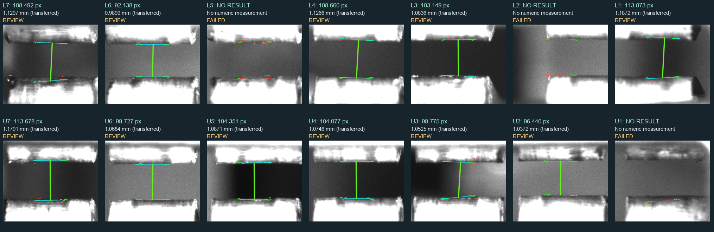
| 点位 | 像素 px | 参考 mm | 状态 | 原因 |
|---|---|---|---|---|
| U1 | — | — | 无有效值 | 上边：边缘粗定位不足；上边：未找到左右一致的边缘；上边：左右有效边缘点不足；下边：侧边不直或存在歧义；下边：中间轮廓偏离拟合线；下边：侧边存在偏离点；下边：整体轮廓起伏较大 |
| U2 | 96.440 | 1.0372 | 有读数，待复核 | 上边：中间轮廓偏离拟合线；下边：中间轮廓偏离拟合线 |
| U3 | 99.775 | 1.0525 | 有读数，待复核 | 上边：侧边不直或存在歧义；上边：中间轮廓偏离拟合线；上边：整体轮廓起伏较大；下边：中间轮廓偏离拟合线；上下拟合线夹角超过0.5度 |
| U4 | 104.077 | 1.0746 | 有读数，待复核 | 上边：中间轮廓不清晰；下边：侧边不直或存在歧义；下边：中间轮廓偏离拟合线；下边：侧边存在偏离点；上下拟合线夹角超过0.5度 |
| U5 | 104.351 | 1.0871 | 有读数，待复核 | 下边：侧边不直或存在歧义；下边：中间轮廓偏离拟合线；上下拟合线夹角超过0.5度 |
| U6 | 99.727 | 1.0684 | 有读数，待复核 | 上边：中间轮廓偏离拟合线；下边：侧边不直或存在歧义；上下拟合线夹角超过0.5度 |
| U7 | 113.678 | 1.1791 | 有读数，待复核 | 上边：中间轮廓不清晰；上边：侧边不直或存在歧义；上边：中间轮廓偏离拟合线；下边：侧边不直或存在歧义；下边：中间轮廓偏离拟合线；下边：侧边存在偏离点；下边：整体轮廓起伏较大；上下拟合线夹角超过0.5度 |
| L1 | 113.873 | 1.1872 | 有读数，待复核 | 上边：中间轮廓不清晰；上边：中间轮廓偏离拟合线；上边：整体轮廓起伏较大；下边：侧边不直或存在歧义；下边：中间轮廓偏离拟合线；下边：侧边存在偏离点；上下拟合线夹角超过0.5度 |
| L2 | — | — | 无有效值 | 上边：中间轮廓偏离拟合线；上边：整体轮廓起伏较大；下边：左右符合拟合线的点不足；下边：侧边有效点覆盖不完整；下边：侧边不直或存在歧义；下边：中间轮廓偏离拟合线；下边：整体轮廓起伏较大；上下拟合线夹角超过0.5度 |
| L3 | 103.149 | 1.0836 | 有读数，待复核 | 上边：侧边有效点覆盖不完整；上边：中间轮廓偏离拟合线；下边：中间轮廓不清晰；上下拟合线夹角超过0.5度 |
| L4 | 108.660 | 1.1266 | 有读数，待复核 | 上边：中间轮廓不清晰；上边：中间轮廓偏离拟合线；上边：侧边存在偏离点；下边：中间轮廓偏离拟合线；下边：整体轮廓起伏较大；上下拟合线夹角超过0.5度 |
| L5 | — | — | 无有效值 | 上边：侧边不直或存在歧义；上边：中间轮廓偏离拟合线；上边：侧边存在偏离点；上边：整体轮廓起伏较大；下边：左右符合拟合线的点不足；下边：侧边不直或存在歧义；下边：中间轮廓偏离拟合线；下边：侧边存在偏离点；下边：整体轮廓起伏较大；上下拟合线夹角超过0.5度 |
| L6 | 92.138 | 0.9899 | 有读数，待复核 | 上边：中间轮廓偏离拟合线；上边：侧边存在偏离点；上下拟合线夹角超过0.5度 |
| L7 | 108.492 | 1.1297 | 有读数，待复核 | 上边：侧边不直或存在歧义；上边：中间轮廓偏离拟合线；上边：侧边存在偏离点；下边：侧边不直或存在歧义；下边：中间轮廓偏离拟合线；下边：侧边存在偏离点；下边：整体轮廓起伏较大；上下拟合线夹角超过0.5度 |
原始图片 · 整图标注预览 · 上排从左到右 L7→L1，下排 U7→U1
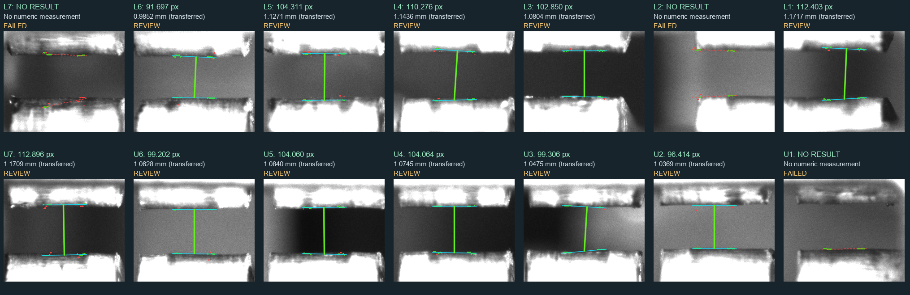
| 点位 | 像素 px | 参考 mm | 状态 | 原因 |
|---|---|---|---|---|
| U1 | — | — | 无有效值 | 上边：边缘粗定位不足；上边：未找到左右一致的边缘；上边：左右有效边缘点不足 |
| U2 | 96.414 | 1.0369 | 有读数，待复核 | 上边：侧边不直或存在歧义；上边：中间轮廓偏离拟合线；上边：整体轮廓起伏较大 |
| U3 | 99.306 | 1.0475 | 有读数，待复核 | 上边：中间轮廓不清晰；上边：中间轮廓偏离拟合线；上边：整体轮廓起伏较大；下边：中间轮廓偏离拟合线；上下拟合线夹角超过0.5度 |
| U4 | 104.064 | 1.0745 | 有读数，待复核 | 上边：中间轮廓不清晰；上边：侧边有效点覆盖不完整；下边：中间轮廓偏离拟合线；上下拟合线夹角超过0.5度 |
| U5 | 104.060 | 1.0840 | 有读数，待复核 | 下边：中间轮廓偏离拟合线；上下拟合线夹角超过0.5度 |
| U6 | 99.202 | 1.0628 | 有读数，待复核 | 下边：侧边不直或存在歧义；上下拟合线夹角超过0.5度 |
| U7 | 112.896 | 1.1709 | 有读数，待复核 | 上边：侧边不直或存在歧义；上边：中间轮廓偏离拟合线；上边：侧边存在偏离点；下边：侧边不直或存在歧义；下边：中间轮廓偏离拟合线；下边：侧边存在偏离点；下边：整体轮廓起伏较大 |
| L1 | 112.403 | 1.1717 | 有读数，待复核 | 上边：中间轮廓不清晰；上边：侧边不直或存在歧义；上边：中间轮廓偏离拟合线；上边：侧边存在偏离点；下边：中间轮廓不清晰；下边：中间轮廓偏离拟合线；上下拟合线夹角超过0.5度 |
| L2 | — | — | 无有效值 | 上边：中间轮廓不清晰；上边：侧边不直或存在歧义；上边：中间轮廓偏离拟合线；上边：侧边存在偏离点；上边：整体轮廓起伏较大；下边：左右符合拟合线的点不足；下边：侧边有效点覆盖不完整；下边：侧边不直或存在歧义；下边：中间轮廓偏离拟合线；下边：侧边存在偏离点；下边：整体轮廓起伏较大；上下拟合线夹角超过0.5度 |
| L3 | 102.850 | 1.0804 | 有读数，待复核 | 上边：中间轮廓偏离拟合线；上下拟合线夹角超过0.5度 |
| L4 | 110.276 | 1.1436 | 有读数，待复核 | 上边：侧边不直或存在歧义；上边：中间轮廓偏离拟合线；上边：侧边存在偏离点；上边：整体轮廓起伏较大；下边：中间轮廓偏离拟合线；上下拟合线夹角超过0.5度 |
| L5 | 104.311 | 1.1271 | 有读数，待复核 | 上边：侧边不直或存在歧义；上边：中间轮廓偏离拟合线；上边：侧边存在偏离点；上边：整体轮廓起伏较大；下边：侧边不直或存在歧义；下边：中间轮廓偏离拟合线；下边：侧边存在偏离点；下边：整体轮廓起伏较大；上下拟合线夹角超过0.5度 |
| L6 | 91.697 | 0.9852 | 有读数，待复核 | 上边：侧边不直或存在歧义；下边：侧边不直或存在歧义；上下拟合线夹角超过0.5度 |
| L7 | — | — | 无有效值 | 上边：中间轮廓偏离拟合线；上边：整体轮廓起伏较大；下边：左右符合拟合线的点不足；下边：侧边不直或存在歧义；下边：中间轮廓偏离拟合线；下边：侧边存在偏离点；下边：整体轮廓起伏较大；上下拟合线夹角超过0.5度 |
原始图片 · 整图标注预览 · 上排从左到右 L7→L1，下排 U7→U1
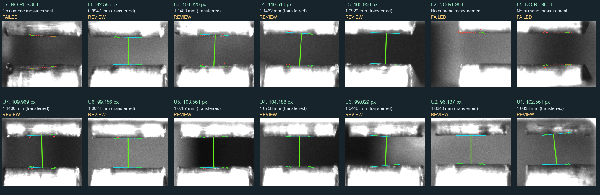
| 点位 | 像素 px | 参考 mm | 状态 | 原因 |
|---|---|---|---|---|
| U1 | 102.561 | 1.0838 | 有读数，待复核 | 上边：中间轮廓偏离拟合线；上边：侧边存在偏离点；上边：整体轮廓起伏较大；上下拟合线夹角超过0.5度 |
| U2 | 96.137 | 1.0340 | 有读数，待复核 | 上边：侧边不直或存在歧义；上边：中间轮廓偏离拟合线；上边：整体轮廓起伏较大 |
| U3 | 99.029 | 1.0446 | 有读数，待复核 | 上边：中间轮廓偏离拟合线；上边：整体轮廓起伏较大；下边：中间轮廓偏离拟合线；上下拟合线夹角超过0.5度 |
| U4 | 104.188 | 1.0758 | 有读数，待复核 | 上边：中间轮廓不清晰；上边：侧边有效点覆盖不完整；上边：中间轮廓偏离拟合线；下边：侧边不直或存在歧义；下边：中间轮廓偏离拟合线；上下拟合线夹角超过0.5度 |
| U5 | 103.561 | 1.0787 | 有读数，待复核 | 下边：中间轮廓偏离拟合线；上下拟合线夹角超过0.5度 |
| U6 | 99.156 | 1.0624 | 有读数，待复核 | 上下拟合线夹角超过0.5度 |
| U7 | 109.969 | 1.1400 | 有读数，待复核 | 上边：侧边不直或存在歧义；上边：中间轮廓偏离拟合线；上边：侧边存在偏离点；下边：侧边不直或存在歧义；下边：中间轮廓偏离拟合线；下边：侧边存在偏离点；下边：整体轮廓起伏较大；上下拟合线夹角超过0.5度 |
| L1 | — | — | 无有效值 | 上边：左右符合拟合线的点不足；上边：侧边不直或存在歧义；上边：中间轮廓偏离拟合线；上边：侧边存在偏离点；上边：整体轮廓起伏较大；下边：侧边不直或存在歧义；下边：中间轮廓偏离拟合线；下边：侧边存在偏离点；下边：整体轮廓起伏较大；上下拟合线夹角超过0.5度 |
| L2 | — | — | 无有效值 | 上边：侧边不直或存在歧义；上边：中间轮廓偏离拟合线；上边：侧边存在偏离点；上边：整体轮廓起伏较大；下边：边缘粗定位不足；下边：未找到左右一致的边缘；下边：左右有效边缘点不足 |
| L3 | 103.950 | 1.0920 | 有读数，待复核 | 下边：中间轮廓不清晰；上下拟合线夹角超过0.5度 |
| L4 | 110.516 | 1.1462 | 有读数，待复核 | 上边：中间轮廓不清晰；上边：中间轮廓偏离拟合线；上边：侧边存在偏离点；上下拟合线夹角超过0.5度 |
| L5 | 106.320 | 1.1483 | 有读数，待复核 | 上边：侧边不直或存在歧义；上边：中间轮廓偏离拟合线；上边：侧边存在偏离点；上边：整体轮廓起伏较大；下边：侧边不直或存在歧义；下边：中间轮廓偏离拟合线；下边：整体轮廓起伏较大；上下拟合线夹角超过0.5度 |
| L6 | 92.595 | 0.9947 | 有读数，待复核 | 上下拟合线夹角超过0.5度 |
| L7 | — | — | 无有效值 | 上边：中间轮廓偏离拟合线；下边：连续边恢复与实测侧边冲突；下边：中间轮廓不清晰；下边：侧边有效点覆盖不完整；下边：中间轮廓偏离拟合线；上下拟合线夹角超过0.5度 |
原始图片 · 整图标注预览 · 上排从左到右 L7→L1，下排 U7→U1
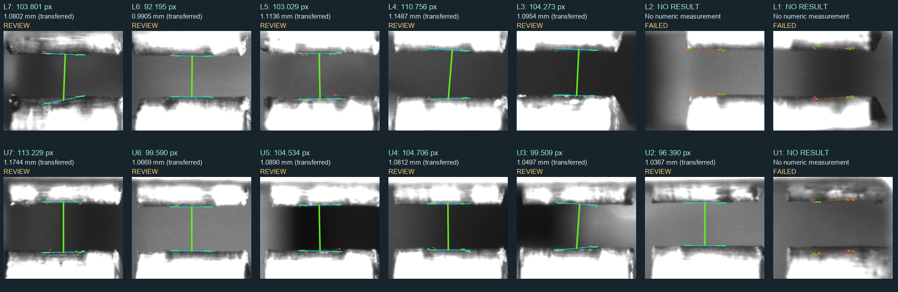
| 点位 | 像素 px | 参考 mm | 状态 | 原因 |
|---|---|---|---|---|
| U1 | — | — | 无有效值 | 上边：侧边不直或存在歧义；上边：中间轮廓偏离拟合线；上边：侧边存在偏离点；上边：整体轮廓起伏较大；下边：左右符合拟合线的点不足；下边：侧边不直或存在歧义；下边：中间轮廓偏离拟合线；下边：侧边存在偏离点；下边：整体轮廓起伏较大 |
| U2 | 96.390 | 1.0367 | 有读数，待复核 | 上边：中间轮廓偏离拟合线；下边：侧边不直或存在歧义 |
| U3 | 99.509 | 1.0497 | 有读数，待复核 | 上边：中间轮廓不清晰；上边：中间轮廓偏离拟合线；上边：整体轮廓起伏较大；下边：中间轮廓偏离拟合线；下边：整体轮廓起伏较大；上下拟合线夹角超过0.5度 |
| U4 | 104.706 | 1.0812 | 有读数，待复核 | 上边：中间轮廓不清晰；上边：侧边有效点覆盖不完整；下边：侧边不直或存在歧义；下边：侧边存在偏离点；上下拟合线夹角超过0.5度 |
| U5 | 104.534 | 1.0890 | 有读数，待复核 | 下边：侧边不直或存在歧义；下边：中间轮廓偏离拟合线；下边：侧边存在偏离点；上下拟合线夹角超过0.5度 |
| U6 | 99.590 | 1.0669 | 有读数，待复核 | 上下拟合线夹角超过0.5度 |
| U7 | 113.229 | 1.1744 | 有读数，待复核 | 上边：中间轮廓不清晰；上边：侧边不直或存在歧义；上边：侧边存在偏离点；下边：侧边不直或存在歧义；下边：中间轮廓偏离拟合线；下边：侧边存在偏离点；下边：整体轮廓起伏较大；上下拟合线夹角超过0.5度 |
| L1 | — | — | 无有效值 | 上边：中间轮廓不清晰；上边：中间轮廓偏离拟合线；上边：整体轮廓起伏较大；下边：中间轮廓不清晰；下边：左右符合拟合线的点不足；下边：侧边不直或存在歧义；下边：中间轮廓偏离拟合线；下边：侧边存在偏离点；下边：整体轮廓起伏较大；上下拟合线夹角超过0.5度 |
| L2 | — | — | 无有效值 | 上边：侧边不直或存在歧义；上边：中间轮廓偏离拟合线；上边：整体轮廓起伏较大；下边：左右符合拟合线的点不足；下边：侧边有效点覆盖不完整；下边：侧边不直或存在歧义；下边：中间轮廓偏离拟合线；下边：侧边存在偏离点；下边：整体轮廓起伏较大；上下拟合线夹角超过0.5度 |
| L3 | 104.273 | 1.0954 | 有读数，待复核 | 上边：侧边有效点覆盖不完整；下边：中间轮廓不清晰；上下拟合线夹角超过0.5度 |
| L4 | 110.756 | 1.1487 | 有读数，待复核 | 上边：中间轮廓不清晰；上边：中间轮廓偏离拟合线；下边：中间轮廓偏离拟合线；上下拟合线夹角超过0.5度 |
| L5 | 103.029 | 1.1136 | 有读数，待复核 | 上边：侧边不直或存在歧义；上边：中间轮廓偏离拟合线；上边：侧边存在偏离点；上边：整体轮廓起伏较大；下边：侧边不直或存在歧义；下边：中间轮廓偏离拟合线；下边：侧边存在偏离点；下边：整体轮廓起伏较大 |
| L6 | 92.195 | 0.9905 | 有读数，待复核 | 上边：侧边存在偏离点 |
| L7 | 103.801 | 1.0802 | 有读数，待复核 | 上边：中间轮廓偏离拟合线；上边：侧边存在偏离点；下边：中间轮廓不清晰；下边：中间轮廓偏离拟合线；下边：整体轮廓起伏较大；上下拟合线夹角超过0.5度 |
原始图片 · 整图标注预览 · 上排从左到右 L7→L1，下排 U7→U1
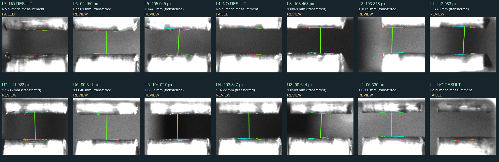
| 点位 | 像素 px | 参考 mm | 状态 | 原因 |
|---|---|---|---|---|
| U1 | — | — | 无有效值 | 上边：边缘粗定位不足；上边：未找到左右一致的边缘；上边：左右有效边缘点不足；下边：侧边不直或存在歧义；下边：中间轮廓偏离拟合线；下边：侧边存在偏离点；下边：整体轮廓起伏较大 |
| U2 | 96.330 | 1.0360 | 有读数，待复核 | 下边：中间轮廓偏离拟合线；上下拟合线夹角超过0.5度 |
| U3 | 99.614 | 1.0508 | 有读数，待复核 | 上边：中间轮廓不清晰；上边：中间轮廓偏离拟合线；上边：整体轮廓起伏较大；下边：中间轮廓偏离拟合线；上下拟合线夹角超过0.5度 |
| U4 | 103.847 | 1.0722 | 有读数，待复核 | 上边：中间轮廓不清晰；上边：侧边有效点覆盖不完整；下边：中间轮廓偏离拟合线；上下拟合线夹角超过0.5度 |
| U5 | 104.027 | 1.0837 | 有读数，待复核 | 下边：中间轮廓偏离拟合线；上下拟合线夹角超过0.5度 |
| U6 | 99.311 | 1.0640 | 有读数，待复核 | 下边：侧边不直或存在歧义 |
| U7 | 111.922 | 1.1606 | 有读数，待复核 | 上边：中间轮廓不清晰；上边：侧边不直或存在歧义；上边：中间轮廓偏离拟合线；上边：侧边存在偏离点；下边：侧边不直或存在歧义；下边：中间轮廓偏离拟合线；下边：侧边存在偏离点；下边：整体轮廓起伏较大；上下拟合线夹角超过0.5度 |
| L1 | 112.983 | 1.1778 | 有读数，待复核 | 上边：中间轮廓不清晰；上边：中间轮廓偏离拟合线；上边：整体轮廓起伏较大；下边：侧边不直或存在歧义；下边：中间轮廓偏离拟合线；下边：侧边存在偏离点；下边：整体轮廓起伏较大；上下拟合线夹角超过0.5度 |
| L2 | 103.318 | 1.1069 | 有读数，待复核 | 上边：中间轮廓偏离拟合线；上边：整体轮廓起伏较大；下边：侧边不直或存在歧义；下边：中间轮廓偏离拟合线；下边：侧边存在偏离点；下边：整体轮廓起伏较大；上下拟合线夹角超过0.5度 |
| L3 | 103.458 | 1.0869 | 有读数，待复核 | 上下拟合线夹角超过0.5度 |
| L4 | — | — | 无有效值 | 上边：侧边不直或存在歧义；上边：中间轮廓偏离拟合线；上边：侧边存在偏离点；上边：整体轮廓起伏较大；下边：左右符合拟合线的点不足；下边：侧边不直或存在歧义；下边：中间轮廓偏离拟合线；下边：侧边存在偏离点；上下拟合线夹角超过0.5度 |
| L5 | 105.945 | 1.1443 | 有读数，待复核 | 上边：侧边不直或存在歧义；上边：中间轮廓偏离拟合线；上边：侧边存在偏离点；上边：整体轮廓起伏较大；下边：侧边不直或存在歧义；下边：中间轮廓偏离拟合线；下边：整体轮廓起伏较大；上下拟合线夹角超过0.5度 |
| L6 | 92.159 | 0.9901 | 有读数，待复核 | 上边：侧边不直或存在歧义；上边：中间轮廓偏离拟合线；上边：侧边存在偏离点 |
| L7 | — | — | 无有效值 | 上边：中间轮廓偏离拟合线；上边：侧边存在偏离点；下边：连续边恢复与实测侧边冲突；下边：中间轮廓不清晰；下边：侧边有效点覆盖不完整；下边：中间轮廓偏离拟合线；下边：整体轮廓起伏较大；上下拟合线夹角超过0.5度 |
原始图片 · 整图标注预览 · 上排从左到右 L7→L1，下排 U7→U1
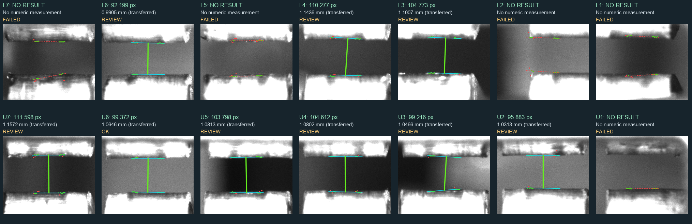
| 点位 | 像素 px | 参考 mm | 状态 | 原因 |
|---|---|---|---|---|
| U1 | — | — | 无有效值 | 上边：边缘粗定位不足；上边：未找到左右一致的边缘；上边：左右有效边缘点不足 |
| U2 | 95.883 | 1.0313 | 有读数，待复核 | 上边：侧边不直或存在歧义；上边：中间轮廓偏离拟合线；上边：侧边存在偏离点；上边：整体轮廓起伏较大；上下拟合线夹角超过0.5度 |
| U3 | 99.216 | 1.0466 | 有读数，待复核 | 上边：中间轮廓偏离拟合线；上边：整体轮廓起伏较大；下边：中间轮廓偏离拟合线；下边：整体轮廓起伏较大；上下拟合线夹角超过0.5度 |
| U4 | 104.612 | 1.0802 | 有读数，待复核 | 上边：中间轮廓不清晰；下边：中间轮廓偏离拟合线；下边：侧边存在偏离点；上下拟合线夹角超过0.5度 |
| U5 | 103.798 | 1.0813 | 有读数，待复核 | 下边：侧边不直或存在歧义；下边：中间轮廓偏离拟合线；下边：侧边存在偏离点；上下拟合线夹角超过0.5度 |
| U6 | 99.372 | 1.0646 | 有读数 | |
| U7 | 111.598 | 1.1572 | 有读数，待复核 | 上边：中间轮廓不清晰；上边：侧边不直或存在歧义；上边：侧边存在偏离点；下边：侧边不直或存在歧义；下边：中间轮廓偏离拟合线；下边：侧边存在偏离点；下边：整体轮廓起伏较大；上下拟合线夹角超过0.5度 |
| L1 | — | — | 无有效值 | 上边：中间轮廓偏离拟合线；下边：中间轮廓不清晰；下边：左右符合拟合线的点不足；下边：侧边有效点覆盖不完整；下边：侧边不直或存在歧义；下边：中间轮廓偏离拟合线；下边：侧边存在偏离点；下边：整体轮廓起伏较大；上下拟合线夹角超过0.5度 |
| L2 | — | — | 无有效值 | 上边：侧边不直或存在歧义；上边：中间轮廓偏离拟合线；上边：整体轮廓起伏较大；下边：左右符合拟合线的点不足；下边：侧边不直或存在歧义；下边：中间轮廓偏离拟合线；下边：侧边存在偏离点；下边：整体轮廓起伏较大；上下拟合线夹角超过0.5度 |
| L3 | 104.773 | 1.1007 | 有读数，待复核 | 上边：中间轮廓不清晰；上下拟合线夹角超过0.5度 |
| L4 | 110.277 | 1.1436 | 有读数，待复核 | 上边：中间轮廓不清晰；上边：中间轮廓偏离拟合线；上边：侧边存在偏离点；下边：中间轮廓不清晰；下边：中间轮廓偏离拟合线；下边：侧边存在偏离点；上下拟合线夹角超过0.5度 |
| L5 | — | — | 无有效值 | 上边：左右符合拟合线的点不足；上边：侧边不直或存在歧义；上边：中间轮廓偏离拟合线；上边：侧边存在偏离点；上边：整体轮廓起伏较大；下边：侧边不直或存在歧义；下边：中间轮廓偏离拟合线；下边：整体轮廓起伏较大；上下拟合线夹角超过0.5度 |
| L6 | 92.199 | 0.9905 | 有读数，待复核 | 上边：中间轮廓偏离拟合线 |
| L7 | — | — | 无有效值 | 上边：中间轮廓偏离拟合线；下边：外侧边仍未确定，拒绝采用内侧边；下边：左右侧边不能形成一致直线；下边：侧边不直或存在歧义；下边：中间轮廓偏离拟合线；下边：侧边存在偏离点；下边：整体轮廓起伏较大；上下拟合线夹角超过0.5度 |
原始图片 · 整图标注预览 · 上排从左到右 L7→L1，下排 U7→U1
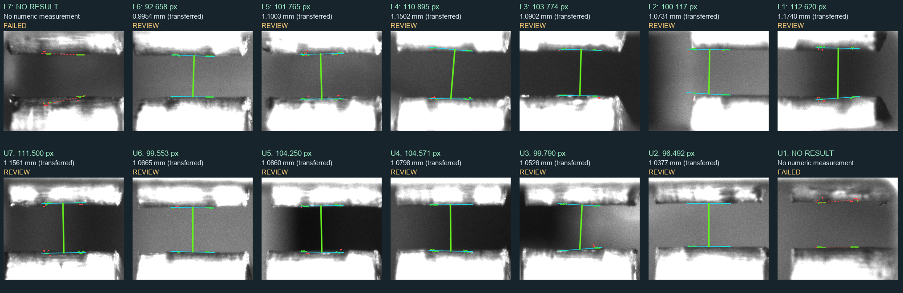
| 点位 | 像素 px | 参考 mm | 状态 | 原因 |
|---|---|---|---|---|
| U1 | — | — | 无有效值 | 上边：左右符合拟合线的点不足；上边：侧边不直或存在歧义；上边：中间轮廓偏离拟合线；上边：侧边存在偏离点；上边：整体轮廓起伏较大；上下拟合线夹角超过0.5度 |
| U2 | 96.492 | 1.0377 | 有读数，待复核 | 上边：中间轮廓偏离拟合线 |
| U3 | 99.790 | 1.0526 | 有读数，待复核 | 上边：中间轮廓不清晰；上边：中间轮廓偏离拟合线；上边：整体轮廓起伏较大；下边：中间轮廓偏离拟合线；上下拟合线夹角超过0.5度 |
| U4 | 104.571 | 1.0798 | 有读数，待复核 | 上边：中间轮廓不清晰；上边：侧边有效点覆盖不完整；下边：中间轮廓偏离拟合线；上下拟合线夹角超过0.5度 |
| U5 | 104.250 | 1.0860 | 有读数，待复核 | 下边：侧边不直或存在歧义；下边：中间轮廓偏离拟合线；下边：侧边存在偏离点；上下拟合线夹角超过0.5度 |
| U6 | 99.553 | 1.0665 | 有读数，待复核 | 上边：侧边存在偏离点；上下拟合线夹角超过0.5度 |
| U7 | 111.500 | 1.1561 | 有读数，待复核 | 上边：侧边不直或存在歧义；上边：侧边存在偏离点；下边：侧边不直或存在歧义；下边：中间轮廓偏离拟合线；下边：侧边存在偏离点；下边：整体轮廓起伏较大 |
| L1 | 112.620 | 1.1740 | 有读数，待复核 | 上边：中间轮廓不清晰；上边：侧边不直或存在歧义；上边：中间轮廓偏离拟合线；上边：侧边存在偏离点；上边：整体轮廓起伏较大；下边：侧边不直或存在歧义；下边：中间轮廓偏离拟合线；下边：侧边存在偏离点；下边：整体轮廓起伏较大；上下拟合线夹角超过0.5度 |
| L2 | 100.117 | 1.0731 | 有读数，待复核 | 上边：侧边不直或存在歧义；上边：中间轮廓偏离拟合线；上边：整体轮廓起伏较大；下边：侧边有效点覆盖不完整；下边：侧边不直或存在歧义；下边：中间轮廓偏离拟合线；下边：整体轮廓起伏较大；上下拟合线夹角超过0.5度 |
| L3 | 103.774 | 1.0902 | 有读数，待复核 | 上边：中间轮廓不清晰；上边：侧边有效点覆盖不完整；下边：侧边存在偏离点 |
| L4 | 110.895 | 1.1502 | 有读数，待复核 | 上边：中间轮廓偏离拟合线；上边：整体轮廓起伏较大；下边：侧边不直或存在歧义；下边：中间轮廓偏离拟合线；下边：侧边存在偏离点；上下拟合线夹角超过0.5度 |
| L5 | 101.765 | 1.1003 | 有读数，待复核 | 上边：侧边不直或存在歧义；上边：中间轮廓偏离拟合线；上边：侧边存在偏离点；上边：整体轮廓起伏较大；下边：侧边不直或存在歧义；下边：中间轮廓偏离拟合线；下边：侧边存在偏离点；下边：整体轮廓起伏较大；上下拟合线夹角超过0.5度 |
| L6 | 92.658 | 0.9954 | 有读数，待复核 | 上下拟合线夹角超过0.5度 |
| L7 | — | — | 无有效值 | 上边：中间轮廓偏离拟合线；上边：侧边存在偏离点；下边：左右符合拟合线的点不足；下边：侧边不直或存在歧义；下边：中间轮廓偏离拟合线；下边：侧边存在偏离点；下边：整体轮廓起伏较大；上下拟合线夹角超过0.5度 |
原始图片 · 整图标注预览 · 上排从左到右 L7→L1，下排 U7→U1
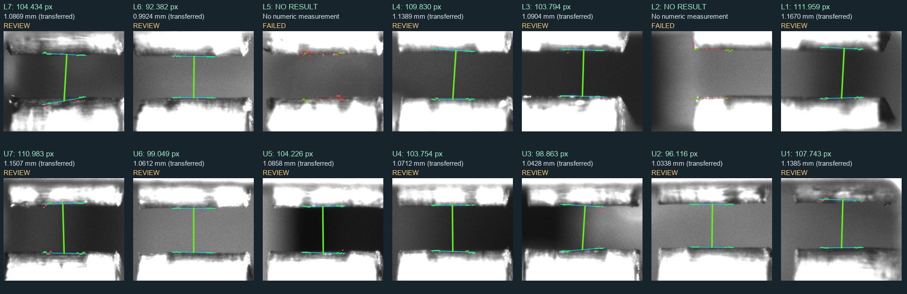
| 点位 | 像素 px | 参考 mm | 状态 | 原因 |
|---|---|---|---|---|
| U1 | 107.743 | 1.1385 | 有读数，待复核 | 上边：侧边不直或存在歧义；上边：中间轮廓偏离拟合线；上边：侧边存在偏离点；上边：整体轮廓起伏较大；上下拟合线夹角超过0.5度 |
| U2 | 96.116 | 1.0338 | 有读数，待复核 | 上边：中间轮廓偏离拟合线 |
| U3 | 98.863 | 1.0428 | 有读数，待复核 | 上边：中间轮廓偏离拟合线；上边：整体轮廓起伏较大；下边：中间轮廓偏离拟合线；上下拟合线夹角超过0.5度 |
| U4 | 103.754 | 1.0712 | 有读数，待复核 | 上边：中间轮廓不清晰；下边：中间轮廓不清晰；下边：中间轮廓偏离拟合线；上下拟合线夹角超过0.5度 |
| U5 | 104.226 | 1.0858 | 有读数，待复核 | 下边：中间轮廓偏离拟合线；上下拟合线夹角超过0.5度 |
| U6 | 99.049 | 1.0612 | 有读数，待复核 | 下边：侧边不直或存在歧义；上下拟合线夹角超过0.5度 |
| U7 | 110.983 | 1.1507 | 有读数，待复核 | 上边：中间轮廓不清晰；上边：侧边不直或存在歧义；上边：侧边存在偏离点；下边：侧边不直或存在歧义；下边：中间轮廓偏离拟合线；下边：侧边存在偏离点；下边：整体轮廓起伏较大；上下拟合线夹角超过0.5度 |
| L1 | 111.959 | 1.1670 | 有读数，待复核 | 上边：中间轮廓不清晰；上边：侧边有效点覆盖不完整；上边：中间轮廓偏离拟合线；下边：中间轮廓偏离拟合线；下边：侧边存在偏离点；下边：整体轮廓起伏较大；上下拟合线夹角超过0.5度 |
| L2 | — | — | 无有效值 | 上边：中间轮廓不清晰；上边：侧边不直或存在歧义；上边：中间轮廓偏离拟合线；上边：整体轮廓起伏较大；下边：连续边恢复与实测侧边冲突；下边：中间轮廓不清晰；下边：侧边有效点覆盖不完整；上下拟合线夹角超过0.5度 |
| L3 | 103.794 | 1.0904 | 有读数，待复核 | 下边：中间轮廓不清晰 |
| L4 | 109.830 | 1.1389 | 有读数，待复核 | 上边：中间轮廓偏离拟合线；上边：侧边存在偏离点；下边：中间轮廓偏离拟合线；上下拟合线夹角超过0.5度 |
| L5 | — | — | 无有效值 | 上边：中间轮廓不清晰；上边：左右符合拟合线的点不足；上边：侧边不直或存在歧义；上边：中间轮廓偏离拟合线；上边：侧边存在偏离点；上边：整体轮廓起伏较大；下边：左右符合拟合线的点不足；下边：侧边不直或存在歧义；下边：中间轮廓偏离拟合线；下边：侧边存在偏离点；下边：整体轮廓起伏较大；上下拟合线夹角超过0.5度 |
| L6 | 92.382 | 0.9924 | 有读数，待复核 | 上下拟合线夹角超过0.5度 |
| L7 | 104.434 | 1.0869 | 有读数，待复核 | 上边：中间轮廓偏离拟合线；下边：侧边不直或存在歧义；下边：中间轮廓偏离拟合线；下边：侧边存在偏离点；下边：整体轮廓起伏较大；上下拟合线夹角超过0.5度 |
原始图片 · 整图标注预览 · 上排从左到右 L7→L1，下排 U7→U1
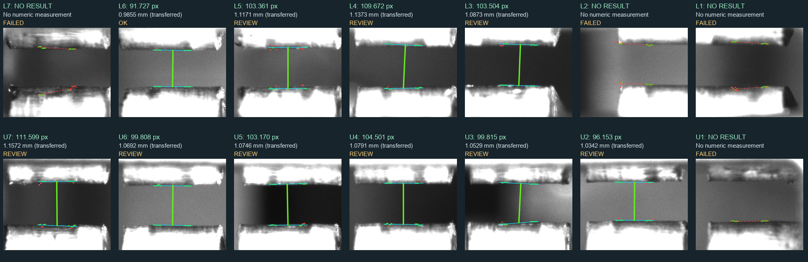
| 点位 | 像素 px | 参考 mm | 状态 | 原因 |
|---|---|---|---|---|
| U1 | — | — | 无有效值 | 上边：边缘粗定位不足；上边：未找到左右一致的边缘；上边：左右有效边缘点不足 |
| U2 | 96.153 | 1.0342 | 有读数，待复核 | 上边：侧边不直或存在歧义；上边：中间轮廓偏离拟合线；上边：侧边存在偏离点；上边：整体轮廓起伏较大；下边：侧边存在偏离点 |
| U3 | 99.815 | 1.0529 | 有读数，待复核 | 上边：中间轮廓不清晰；上边：中间轮廓偏离拟合线；上边：整体轮廓起伏较大；下边：中间轮廓偏离拟合线；上下拟合线夹角超过0.5度 |
| U4 | 104.501 | 1.0791 | 有读数，待复核 | 上边：中间轮廓不清晰；下边：中间轮廓偏离拟合线；上下拟合线夹角超过0.5度 |
| U5 | 103.170 | 1.0746 | 有读数，待复核 | 下边：中间轮廓偏离拟合线；下边：侧边存在偏离点；上下拟合线夹角超过0.5度 |
| U6 | 99.808 | 1.0692 | 有读数，待复核 | 上下拟合线夹角超过0.5度 |
| U7 | 111.599 | 1.1572 | 有读数，待复核 | 上边：中间轮廓不清晰；上边：侧边不直或存在歧义；上边：侧边存在偏离点；下边：侧边不直或存在歧义；下边：中间轮廓偏离拟合线；下边：侧边存在偏离点；下边：整体轮廓起伏较大；上下拟合线夹角超过0.5度 |
| L1 | — | — | 无有效值 | 上边：中间轮廓偏离拟合线；上边：整体轮廓起伏较大；下边：左右符合拟合线的点不足；下边：侧边不直或存在歧义；下边：中间轮廓偏离拟合线；下边：侧边存在偏离点；下边：整体轮廓起伏较大；上下拟合线夹角超过0.5度 |
| L2 | — | — | 无有效值 | 上边：中间轮廓不清晰；上边：侧边不直或存在歧义；上边：中间轮廓偏离拟合线；上边：侧边存在偏离点；上边：整体轮廓起伏较大；下边：左右符合拟合线的点不足；下边：侧边有效点覆盖不完整；下边：侧边不直或存在歧义；下边：中间轮廓偏离拟合线；下边：侧边存在偏离点；下边：整体轮廓起伏较大；上下拟合线夹角超过0.5度 |
| L3 | 103.504 | 1.0873 | 有读数，待复核 | 上边：侧边存在偏离点；下边：中间轮廓不清晰 |
| L4 | 109.672 | 1.1373 | 有读数，待复核 | 上边：中间轮廓偏离拟合线；下边：中间轮廓偏离拟合线；上下拟合线夹角超过0.5度 |
| L5 | 103.361 | 1.1171 | 有读数，待复核 | 上边：侧边不直或存在歧义；上边：中间轮廓偏离拟合线；上边：侧边存在偏离点；上边：整体轮廓起伏较大；下边：侧边不直或存在歧义；下边：中间轮廓偏离拟合线；下边：侧边存在偏离点；下边：整体轮廓起伏较大；上下拟合线夹角超过0.5度 |
| L6 | 91.727 | 0.9855 | 有读数 | |
| L7 | — | — | 无有效值 | 上边：中间轮廓偏离拟合线；下边：左右符合拟合线的点不足；下边：侧边不直或存在歧义；下边：中间轮廓偏离拟合线；下边：侧边存在偏离点；下边：整体轮廓起伏较大；上下拟合线夹角超过0.5度 |
原始图片 · 整图标注预览 · 上排从左到右 L7→L1，下排 U7→U1
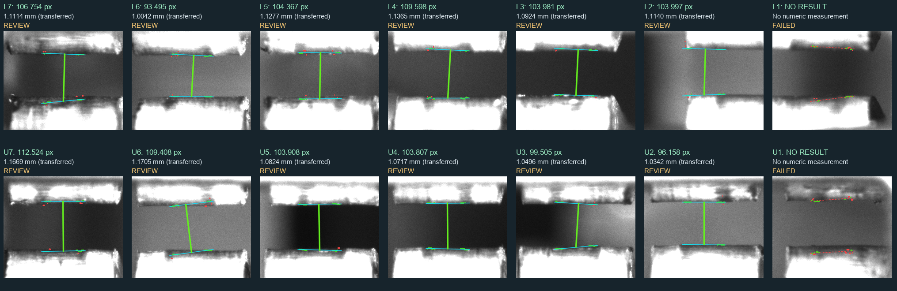
| 点位 | 像素 px | 参考 mm | 状态 | 原因 |
|---|---|---|---|---|
| U1 | — | — | 无有效值 | 上边：左右符合拟合线的点不足；上边：侧边不直或存在歧义；上边：中间轮廓偏离拟合线；上边：侧边存在偏离点；上边：整体轮廓起伏较大；下边：左右符合拟合线的点不足；下边：侧边不直或存在歧义；下边：侧边存在偏离点；上下拟合线夹角超过0.5度 |
| U2 | 96.158 | 1.0342 | 有读数，待复核 | 上边：侧边不直或存在歧义；上边：中间轮廓偏离拟合线；下边：中间轮廓偏离拟合线 |
| U3 | 99.505 | 1.0496 | 有读数，待复核 | 上边：中间轮廓偏离拟合线；上边：整体轮廓起伏较大；下边：中间轮廓偏离拟合线；上下拟合线夹角超过0.5度 |
| U4 | 103.807 | 1.0717 | 有读数，待复核 | 上边：中间轮廓不清晰；上边：侧边有效点覆盖不完整；下边：中间轮廓不清晰；下边：中间轮廓偏离拟合线；上下拟合线夹角超过0.5度 |
| U5 | 103.908 | 1.0824 | 有读数，待复核 | 下边：侧边不直或存在歧义；下边：中间轮廓偏离拟合线；上下拟合线夹角超过0.5度 |
| U6 | 109.408 | 1.1705 | 有读数，待复核 | 上边：侧边不直或存在歧义；上边：中间轮廓偏离拟合线；上边：侧边存在偏离点；上边：整体轮廓起伏较大；下边：侧边不直或存在歧义；下边：中间轮廓偏离拟合线；下边：整体轮廓起伏较大；上下拟合线夹角超过0.5度 |
| U7 | 112.524 | 1.1669 | 有读数，待复核 | 上边：中间轮廓不清晰；上边：侧边不直或存在歧义；上边：侧边存在偏离点；上边：整体轮廓起伏较大；下边：侧边不直或存在歧义；下边：中间轮廓偏离拟合线；下边：侧边存在偏离点；下边：整体轮廓起伏较大 |
| L1 | — | — | 无有效值 | 上边：中间轮廓不清晰；上边：中间轮廓偏离拟合线；上边：侧边存在偏离点；上边：整体轮廓起伏较大；下边：中间轮廓不清晰；下边：左右符合拟合线的点不足；下边：侧边有效点覆盖不完整；下边：中间轮廓偏离拟合线；下边：整体轮廓起伏较大；上下拟合线夹角超过0.5度 |
| L2 | 103.997 | 1.1140 | 有读数，待复核 | 上边：侧边不直或存在歧义；上边：中间轮廓偏离拟合线；上边：整体轮廓起伏较大；下边：中间轮廓偏离拟合线；下边：整体轮廓起伏较大；上下拟合线夹角超过0.5度 |
| L3 | 103.981 | 1.0924 | 有读数，待复核 | 上边：中间轮廓不清晰；上下拟合线夹角超过0.5度 |
| L4 | 109.598 | 1.1365 | 有读数，待复核 | 上边：中间轮廓不清晰；上边：中间轮廓偏离拟合线；上边：侧边存在偏离点；下边：中间轮廓偏离拟合线；上下拟合线夹角超过0.5度 |
| L5 | 104.367 | 1.1277 | 有读数，待复核 | 上边：侧边不直或存在歧义；上边：中间轮廓偏离拟合线；上边：侧边存在偏离点；上边：整体轮廓起伏较大；下边：侧边不直或存在歧义；下边：中间轮廓偏离拟合线；下边：整体轮廓起伏较大；上下拟合线夹角超过0.5度 |
| L6 | 93.495 | 1.0042 | 有读数，待复核 | 上边：侧边不直或存在歧义；上下拟合线夹角超过0.5度 |
| L7 | 106.754 | 1.1114 | 有读数，待复核 | 上边：中间轮廓偏离拟合线；下边：侧边不直或存在歧义；下边：中间轮廓偏离拟合线；下边：侧边存在偏离点；下边：整体轮廓起伏较大；上下拟合线夹角超过0.5度 |
原始图片 · 整图标注预览 · 上排从左到右 L7→L1，下排 U7→U1
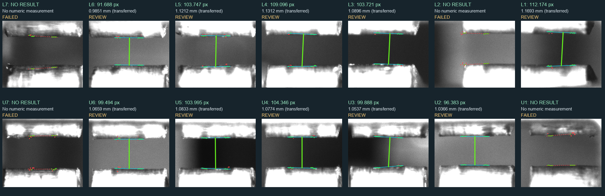
| 点位 | 像素 px | 参考 mm | 状态 | 原因 |
|---|---|---|---|---|
| U1 | — | — | 无有效值 | 上边：左右符合拟合线的点不足；上边：侧边不直或存在歧义；上边：中间轮廓偏离拟合线；上边：侧边存在偏离点；上边：整体轮廓起伏较大；上下拟合线夹角超过0.5度 |
| U2 | 96.383 | 1.0366 | 有读数，待复核 | 上边：中间轮廓偏离拟合线 |
| U3 | 99.888 | 1.0537 | 有读数，待复核 | 上边：中间轮廓不清晰；上边：中间轮廓偏离拟合线；上边：整体轮廓起伏较大；下边：中间轮廓偏离拟合线；上下拟合线夹角超过0.5度 |
| U4 | 104.346 | 1.0774 | 有读数，待复核 | 上边：中间轮廓不清晰；上边：侧边存在偏离点；下边：中间轮廓偏离拟合线；上下拟合线夹角超过0.5度 |
| U5 | 103.995 | 1.0833 | 有读数，待复核 | 下边：侧边不直或存在歧义；下边：中间轮廓偏离拟合线；上下拟合线夹角超过0.5度 |
| U6 | 99.494 | 1.0659 | 有读数，待复核 | 上边：侧边不直或存在歧义；上边：侧边存在偏离点；下边：侧边不直或存在歧义；下边：侧边存在偏离点；上下拟合线夹角超过0.5度 |
| U7 | — | — | 无有效值 | 上边：中间轮廓不清晰；上边：侧边不直或存在歧义；上边：中间轮廓偏离拟合线；上边：侧边存在偏离点；下边：左右符合拟合线的点不足；下边：侧边不直或存在歧义；下边：中间轮廓偏离拟合线；下边：侧边存在偏离点；下边：整体轮廓起伏较大；上下拟合线夹角超过0.5度 |
| L1 | 112.174 | 1.1693 | 有读数，待复核 | 上边：侧边不直或存在歧义；上边：中间轮廓偏离拟合线；上边：整体轮廓起伏较大；下边：中间轮廓不清晰；下边：侧边不直或存在歧义；下边：中间轮廓偏离拟合线；下边：整体轮廓起伏较大；上下拟合线夹角超过0.5度 |
| L2 | — | — | 无有效值 | 上边：侧边不直或存在歧义；上边：中间轮廓偏离拟合线；上边：侧边存在偏离点；上边：整体轮廓起伏较大；下边：左右符合拟合线的点不足；下边：侧边不直或存在歧义；下边：中间轮廓偏离拟合线；下边：侧边存在偏离点；下边：整体轮廓起伏较大；上下拟合线夹角超过0.5度 |
| L3 | 103.721 | 1.0896 | 有读数，待复核 | 上边：中间轮廓偏离拟合线；上下拟合线夹角超过0.5度 |
| L4 | 109.096 | 1.1312 | 有读数，待复核 | 上边：中间轮廓不清晰；上边：中间轮廓偏离拟合线；上边：侧边存在偏离点；下边：侧边不直或存在歧义；下边：中间轮廓偏离拟合线；下边：侧边存在偏离点；上下拟合线夹角超过0.5度 |
| L5 | 103.747 | 1.1212 | 有读数，待复核 | 上边：侧边不直或存在歧义；上边：中间轮廓偏离拟合线；上边：侧边存在偏离点；上边：整体轮廓起伏较大；下边：侧边不直或存在歧义；下边：中间轮廓偏离拟合线；下边：侧边存在偏离点；下边：整体轮廓起伏较大；上下拟合线夹角超过0.5度 |
| L6 | 91.688 | 0.9851 | 有读数，待复核 | 上边：侧边不直或存在歧义；上边：中间轮廓偏离拟合线；上边：侧边存在偏离点 |
| L7 | — | — | 无有效值 | 上边：中间轮廓偏离拟合线；下边：连续边恢复与实测侧边冲突；下边：中间轮廓不清晰；下边：中间轮廓偏离拟合线；下边：整体轮廓起伏较大；上下拟合线夹角超过0.5度 |
原始图片 · 整图标注预览 · 上排从左到右 L7→L1，下排 U7→U1
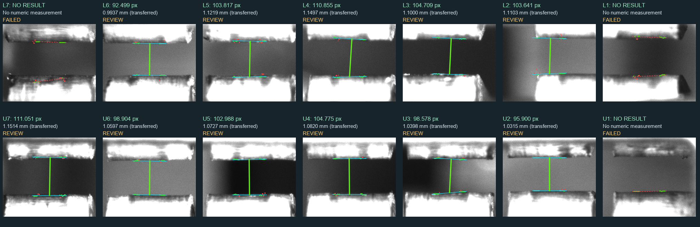
| 点位 | 像素 px | 参考 mm | 状态 | 原因 |
|---|---|---|---|---|
| U1 | — | — | 无有效值 | 上边：边缘粗定位不足；上边：未找到左右一致的边缘；上边：左右有效边缘点不足 |
| U2 | 95.900 | 1.0315 | 有读数，待复核 | 上边：中间轮廓偏离拟合线；上边：整体轮廓起伏较大 |
| U3 | 98.578 | 1.0398 | 有读数，待复核 | 上边：中间轮廓偏离拟合线；上边：整体轮廓起伏较大；下边：中间轮廓偏离拟合线；下边：整体轮廓起伏较大；上下拟合线夹角超过0.5度 |
| U4 | 104.775 | 1.0820 | 有读数，待复核 | 上边：中间轮廓不清晰；下边：中间轮廓不清晰；下边：侧边存在偏离点 |
| U5 | 102.988 | 1.0727 | 有读数，待复核 | 下边：侧边不直或存在歧义；下边：中间轮廓偏离拟合线；下边：侧边存在偏离点；上下拟合线夹角超过0.5度 |
| U6 | 98.904 | 1.0597 | 有读数，待复核 | 上下拟合线夹角超过0.5度 |
| U7 | 111.051 | 1.1514 | 有读数，待复核 | 上边：中间轮廓不清晰；上边：中间轮廓偏离拟合线；上边：侧边存在偏离点；下边：侧边不直或存在歧义；下边：中间轮廓偏离拟合线；下边：侧边存在偏离点；下边：整体轮廓起伏较大；上下拟合线夹角超过0.5度 |
| L1 | — | — | 无有效值 | 上边：中间轮廓不清晰；上边：侧边不直或存在歧义；上边：中间轮廓偏离拟合线；上边：侧边存在偏离点；上边：整体轮廓起伏较大；下边：左右符合拟合线的点不足；下边：侧边不直或存在歧义；下边：中间轮廓偏离拟合线；下边：侧边存在偏离点；下边：整体轮廓起伏较大；上下拟合线夹角超过0.5度 |
| L2 | 103.641 | 1.1103 | 有读数，待复核 | 上边：中间轮廓不清晰；上边：侧边不直或存在歧义；上边：中间轮廓偏离拟合线；上边：整体轮廓起伏较大；下边：侧边不直或存在歧义；下边：中间轮廓偏离拟合线；下边：侧边存在偏离点；下边：整体轮廓起伏较大；上下拟合线夹角超过0.5度 |
| L3 | 104.709 | 1.1000 | 有读数，待复核 | 上边：侧边有效点覆盖不完整；上边：中间轮廓偏离拟合线；下边：中间轮廓不清晰；下边：侧边存在偏离点；上下拟合线夹角超过0.5度 |
| L4 | 110.855 | 1.1497 | 有读数，待复核 | 上边：中间轮廓偏离拟合线；下边：侧边不直或存在歧义；下边：中间轮廓偏离拟合线；上下拟合线夹角超过0.5度 |
| L5 | 103.817 | 1.1219 | 有读数，待复核 | 上边：侧边不直或存在歧义；上边：中间轮廓偏离拟合线；上边：侧边存在偏离点；上边：整体轮廓起伏较大；下边：侧边不直或存在歧义；下边：中间轮廓偏离拟合线；下边：侧边存在偏离点；下边：整体轮廓起伏较大；上下拟合线夹角超过0.5度 |
| L6 | 92.499 | 0.9937 | 有读数，待复核 | 上边：侧边存在偏离点；下边：侧边不直或存在歧义；下边：整体轮廓起伏较大 |
| L7 | — | — | 无有效值 | 上边：中间轮廓偏离拟合线；上边：侧边存在偏离点；下边：存在未解决的外侧边分支；下边：左右符合拟合线的点不足；下边：侧边不直或存在歧义；下边：中间轮廓偏离拟合线；下边：侧边存在偏离点；下边：整体轮廓起伏较大；上下拟合线夹角超过0.5度 |
原始图片 · 整图标注预览 · 上排从左到右 L7→L1，下排 U7→U1
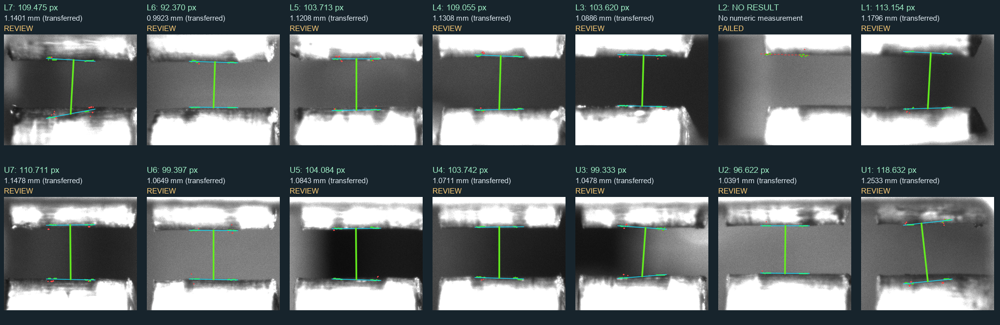
| 点位 | 像素 px | 参考 mm | 状态 | 原因 |
|---|---|---|---|---|
| U1 | 118.632 | 1.2533 | 有读数，待复核 | 上边：侧边不直或存在歧义；上边：中间轮廓偏离拟合线；上边：侧边存在偏离点；上边：整体轮廓起伏较大；下边：侧边不直或存在歧义；下边：中间轮廓偏离拟合线；下边：侧边存在偏离点；下边：整体轮廓起伏较大 |
| U2 | 96.622 | 1.0391 | 有读数，待复核 | 上边：中间轮廓偏离拟合线 |
| U3 | 99.333 | 1.0478 | 有读数，待复核 | 上边：中间轮廓不清晰；上边：中间轮廓偏离拟合线；上边：侧边存在偏离点；上边：整体轮廓起伏较大；下边：中间轮廓偏离拟合线；上下拟合线夹角超过0.5度 |
| U4 | 103.742 | 1.0711 | 有读数，待复核 | 上边：中间轮廓不清晰；上边：侧边有效点覆盖不完整；下边：中间轮廓偏离拟合线；上下拟合线夹角超过0.5度 |
| U5 | 104.084 | 1.0843 | 有读数，待复核 | 下边：中间轮廓偏离拟合线；上下拟合线夹角超过0.5度 |
| U6 | 99.397 | 1.0649 | 有读数，待复核 | 上边：侧边不直或存在歧义；下边：侧边不直或存在歧义；上下拟合线夹角超过0.5度 |
| U7 | 110.711 | 1.1478 | 有读数，待复核 | 上边：侧边不直或存在歧义；上边：中间轮廓偏离拟合线；上边：侧边存在偏离点；下边：侧边不直或存在歧义；下边：中间轮廓偏离拟合线；下边：侧边存在偏离点；下边：整体轮廓起伏较大；上下拟合线夹角超过0.5度 |
| L1 | 113.154 | 1.1796 | 有读数，待复核 | 上边：中间轮廓偏离拟合线；下边：侧边不直或存在歧义；下边：中间轮廓偏离拟合线；下边：整体轮廓起伏较大；上下拟合线夹角超过0.5度 |
| L2 | — | — | 无有效值 | 上边：中间轮廓不清晰；上边：侧边不直或存在歧义；上边：中间轮廓偏离拟合线；上边：整体轮廓起伏较大；下边：边缘粗定位不足；下边：未找到左右一致的边缘；下边：左右有效边缘点不足 |
| L3 | 103.620 | 1.0886 | 有读数，待复核 | 下边：中间轮廓不清晰 |
| L4 | 109.055 | 1.1308 | 有读数，待复核 | 上边：中间轮廓不清晰；上边：侧边不直或存在歧义；上边：中间轮廓偏离拟合线；上边：侧边存在偏离点；上边：整体轮廓起伏较大；下边：中间轮廓不清晰；下边：中间轮廓偏离拟合线；上下拟合线夹角超过0.5度 |
| L5 | 103.713 | 1.1208 | 有读数，待复核 | 上边：侧边不直或存在歧义；上边：中间轮廓偏离拟合线；上边：侧边存在偏离点；上边：整体轮廓起伏较大；下边：中间轮廓不清晰；下边：中间轮廓偏离拟合线；下边：整体轮廓起伏较大；上下拟合线夹角超过0.5度 |
| L6 | 92.370 | 0.9923 | 有读数，待复核 | 上下拟合线夹角超过0.5度 |
| L7 | 109.475 | 1.1401 | 有读数，待复核 | 上边：中间轮廓偏离拟合线；下边：侧边不直或存在歧义；下边：中间轮廓偏离拟合线；下边：侧边存在偏离点；下边：整体轮廓起伏较大；上下拟合线夹角超过0.5度 |
原始图片 · 整图标注预览 · 上排从左到右 L7→L1，下排 U7→U1
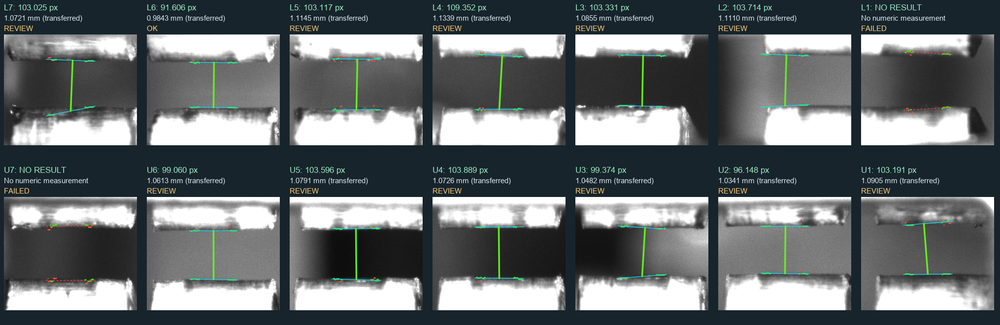
| 点位 | 像素 px | 参考 mm | 状态 | 原因 |
|---|---|---|---|---|
| U1 | 103.191 | 1.0905 | 有读数，待复核 | 上边：侧边不直或存在歧义；上边：中间轮廓偏离拟合线；上边：侧边存在偏离点；上下拟合线夹角超过0.5度 |
| U2 | 96.148 | 1.0341 | 有读数，待复核 | 上边：侧边不直或存在歧义；上边：中间轮廓偏离拟合线；上边：整体轮廓起伏较大；下边：侧边不直或存在歧义；下边：整体轮廓起伏较大 |
| U3 | 99.374 | 1.0482 | 有读数，待复核 | 上边：中间轮廓偏离拟合线；上边：侧边存在偏离点；上边：整体轮廓起伏较大；下边：中间轮廓偏离拟合线；上下拟合线夹角超过0.5度 |
| U4 | 103.889 | 1.0726 | 有读数，待复核 | 上边：中间轮廓不清晰；上边：侧边有效点覆盖不完整；上边：中间轮廓偏离拟合线；下边：中间轮廓偏离拟合线；上下拟合线夹角超过0.5度 |
| U5 | 103.596 | 1.0791 | 有读数，待复核 | 下边：中间轮廓偏离拟合线；上下拟合线夹角超过0.5度 |
| U6 | 99.060 | 1.0613 | 有读数，待复核 | 上边：侧边不直或存在歧义；上边：侧边存在偏离点；上下拟合线夹角超过0.5度 |
| U7 | — | — | 无有效值 | 上边：中间轮廓不清晰；上边：侧边不直或存在歧义；上边：中间轮廓偏离拟合线；上边：侧边存在偏离点；下边：左右符合拟合线的点不足；下边：侧边不直或存在歧义；下边：中间轮廓偏离拟合线；下边：侧边存在偏离点；下边：整体轮廓起伏较大；上下拟合线夹角超过0.5度 |
| L1 | — | — | 无有效值 | 上边：中间轮廓不清晰；上边：中间轮廓偏离拟合线；上边：整体轮廓起伏较大；下边：左右符合拟合线的点不足；下边：侧边不直或存在歧义；下边：中间轮廓偏离拟合线；下边：侧边存在偏离点；下边：整体轮廓起伏较大；上下拟合线夹角超过0.5度 |
| L2 | 103.714 | 1.1110 | 有读数，待复核 | 上边：侧边不直或存在歧义；上边：中间轮廓偏离拟合线；上边：整体轮廓起伏较大；下边：侧边有效点覆盖不完整；下边：侧边不直或存在歧义；下边：中间轮廓偏离拟合线；下边：整体轮廓起伏较大；上下拟合线夹角超过0.5度 |
| L3 | 103.331 | 1.0855 | 有读数，待复核 | 上边：侧边有效点覆盖不完整；上边：中间轮廓偏离拟合线 |
| L4 | 109.352 | 1.1339 | 有读数，待复核 | 上边：中间轮廓不清晰；上边：中间轮廓偏离拟合线；下边：中间轮廓偏离拟合线；下边：侧边存在偏离点；上下拟合线夹角超过0.5度 |
| L5 | 103.117 | 1.1145 | 有读数，待复核 | 上边：侧边不直或存在歧义；上边：中间轮廓偏离拟合线；上边：侧边存在偏离点；上边：整体轮廓起伏较大；下边：侧边不直或存在歧义；下边：中间轮廓偏离拟合线；下边：侧边存在偏离点；下边：整体轮廓起伏较大；上下拟合线夹角超过0.5度 |
| L6 | 91.606 | 0.9843 | 有读数 | |
| L7 | 103.025 | 1.0721 | 有读数，待复核 | 上边：中间轮廓偏离拟合线；上边：侧边存在偏离点；下边：中间轮廓不清晰；下边：中间轮廓偏离拟合线；下边：整体轮廓起伏较大；上下拟合线夹角超过0.5度 |
原始图片 · 整图标注预览 · 上排从左到右 L7→L1，下排 U7→U1
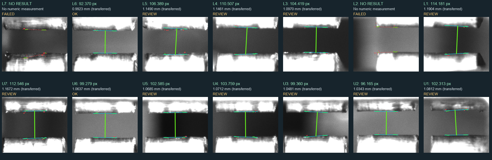
| 点位 | 像素 px | 参考 mm | 状态 | 原因 |
|---|---|---|---|---|
| U1 | 102.313 | 1.0812 | 有读数，待复核 | 上边：侧边不直或存在歧义；上边：中间轮廓偏离拟合线；上边：侧边存在偏离点；上边：整体轮廓起伏较大；上下拟合线夹角超过0.5度 |
| U2 | 96.165 | 1.0343 | 有读数，待复核 | 上边：中间轮廓偏离拟合线；下边：整体轮廓起伏较大 |
| U3 | 99.360 | 1.0481 | 有读数，待复核 | 上边：中间轮廓偏离拟合线；上边：整体轮廓起伏较大；下边：中间轮廓偏离拟合线；上下拟合线夹角超过0.5度 |
| U4 | 103.759 | 1.0712 | 有读数，待复核 | 上边：中间轮廓不清晰；下边：中间轮廓偏离拟合线；上下拟合线夹角超过0.5度 |
| U5 | 102.585 | 1.0685 | 有读数，待复核 | 下边：侧边不直或存在歧义；下边：中间轮廓偏离拟合线；下边：侧边存在偏离点 |
| U6 | 99.279 | 1.0637 | 有读数 | |
| U7 | 112.546 | 1.1672 | 有读数，待复核 | 上边：侧边不直或存在歧义；上边：侧边存在偏离点；上边：整体轮廓起伏较大；下边：中间轮廓偏离拟合线；下边：整体轮廓起伏较大；上下拟合线夹角超过0.5度 |
| L1 | 114.181 | 1.1904 | 有读数，待复核 | 上边：中间轮廓不清晰；上边：中间轮廓偏离拟合线；下边：侧边不直或存在歧义；下边：中间轮廓偏离拟合线；下边：侧边存在偏离点；下边：整体轮廓起伏较大；上下拟合线夹角超过0.5度 |
| L2 | — | — | 无有效值 | 上边：中间轮廓不清晰；上边：侧边不直或存在歧义；上边：中间轮廓偏离拟合线；上边：整体轮廓起伏较大；下边：左右符合拟合线的点不足；下边：侧边有效点覆盖不完整；下边：侧边不直或存在歧义；下边：中间轮廓偏离拟合线；下边：侧边存在偏离点；下边：整体轮廓起伏较大；上下拟合线夹角超过0.5度 |
| L3 | 104.419 | 1.0970 | 有读数，待复核 | 上边：中间轮廓不清晰 |
| L4 | 110.507 | 1.1461 | 有读数，待复核 | 上边：中间轮廓不清晰；上边：中间轮廓偏离拟合线；上边：侧边存在偏离点；上下拟合线夹角超过0.5度 |
| L5 | 106.389 | 1.1490 | 有读数，待复核 | 上边：侧边不直或存在歧义；上边：中间轮廓偏离拟合线；上边：侧边存在偏离点；上边：整体轮廓起伏较大；下边：侧边不直或存在歧义；下边：中间轮廓偏离拟合线；下边：整体轮廓起伏较大；上下拟合线夹角超过0.5度 |
| L6 | 92.370 | 0.9923 | 有读数 | |
| L7 | — | — | 无有效值 | 上边：中间轮廓偏离拟合线；上边：侧边存在偏离点；下边：左右符合拟合线的点不足；下边：侧边不直或存在歧义；下边：中间轮廓偏离拟合线；下边：侧边存在偏离点；下边：整体轮廓起伏较大；上下拟合线夹角超过0.5度 |
原始图片 · 整图标注预览 · 上排从左到右 L7→L1，下排 U7→U1
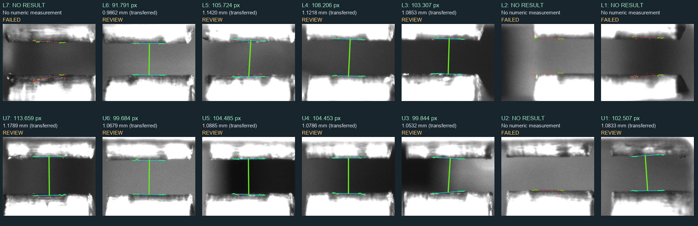
| 点位 | 像素 px | 参考 mm | 状态 | 原因 |
|---|---|---|---|---|
| U1 | 102.507 | 1.0833 | 有读数，待复核 | 上边：侧边不直或存在歧义；上边：中间轮廓偏离拟合线；上边：侧边存在偏离点；上边：整体轮廓起伏较大；上下拟合线夹角超过0.5度 |
| U2 | — | — | 无有效值 | 上边：边缘粗定位不足；上边：未找到左右一致的边缘；上边：左右有效边缘点不足；下边：侧边不直或存在歧义 |
| U3 | 99.844 | 1.0532 | 有读数，待复核 | 上边：中间轮廓不清晰；上边：中间轮廓偏离拟合线；上边：整体轮廓起伏较大；下边：中间轮廓偏离拟合线；上下拟合线夹角超过0.5度 |
| U4 | 104.453 | 1.0786 | 有读数，待复核 | 上边：中间轮廓不清晰；上边：侧边有效点覆盖不完整；下边：中间轮廓偏离拟合线；上下拟合线夹角超过0.5度 |
| U5 | 104.485 | 1.0885 | 有读数，待复核 | 下边：中间轮廓不清晰；下边：中间轮廓偏离拟合线；上下拟合线夹角超过0.5度 |
| U6 | 99.684 | 1.0679 | 有读数，待复核 | 上下拟合线夹角超过0.5度 |
| U7 | 113.659 | 1.1789 | 有读数，待复核 | 上边：中间轮廓偏离拟合线；下边：侧边不直或存在歧义；下边：中间轮廓偏离拟合线；下边：侧边存在偏离点；下边：整体轮廓起伏较大；上下拟合线夹角超过0.5度 |
| L1 | — | — | 无有效值 | 上边：中间轮廓不清晰；上边：侧边有效点覆盖不完整；上边：中间轮廓偏离拟合线；下边：左右符合拟合线的点不足；下边：中间轮廓偏离拟合线；下边：侧边存在偏离点；下边：整体轮廓起伏较大；上下拟合线夹角超过0.5度 |
| L2 | — | — | 无有效值 | 上边：中间轮廓不清晰；上边：侧边不直或存在歧义；上边：中间轮廓偏离拟合线；上边：整体轮廓起伏较大；下边：未找到左右一致的边缘；下边：左右侧边不能形成一致直线；下边：侧边不直或存在歧义；下边：中间轮廓偏离拟合线；下边：侧边存在偏离点；下边：整体轮廓起伏较大；上下拟合线夹角超过0.5度 |
| L3 | 103.307 | 1.0853 | 有读数，待复核 | 上边：中间轮廓偏离拟合线；上边：侧边存在偏离点 |
| L4 | 108.206 | 1.1218 | 有读数，待复核 | 上边：中间轮廓偏离拟合线；上边：整体轮廓起伏较大；下边：侧边不直或存在歧义；下边：中间轮廓偏离拟合线；下边：侧边存在偏离点；上下拟合线夹角超过0.5度 |
| L5 | 105.724 | 1.1420 | 有读数，待复核 | 上边：侧边不直或存在歧义；上边：中间轮廓偏离拟合线；上边：侧边存在偏离点；上边：整体轮廓起伏较大；下边：侧边不直或存在歧义；下边：中间轮廓偏离拟合线；下边：侧边存在偏离点；下边：整体轮廓起伏较大；上下拟合线夹角超过0.5度 |
| L6 | 91.791 | 0.9862 | 有读数，待复核 | 上边：侧边存在偏离点；下边：侧边不直或存在歧义 |
| L7 | — | — | 无有效值 | 上边：中间轮廓偏离拟合线；下边：左右符合拟合线的点不足；下边：侧边不直或存在歧义；下边：中间轮廓偏离拟合线；下边：侧边存在偏离点；下边：整体轮廓起伏较大；上下拟合线夹角超过0.5度 |
原始图片 · 整图标注预览 · 上排从左到右 L7→L1，下排 U7→U1
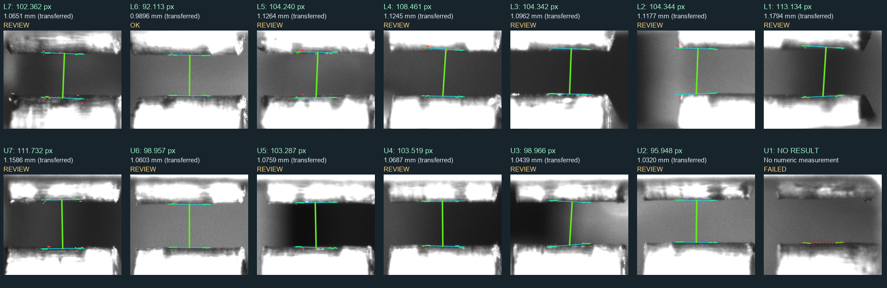
| 点位 | 像素 px | 参考 mm | 状态 | 原因 |
|---|---|---|---|---|
| U1 | — | — | 无有效值 | 上边：边缘粗定位不足；上边：未找到左右一致的边缘；上边：左右有效边缘点不足 |
| U2 | 95.948 | 1.0320 | 有读数，待复核 | 上边：中间轮廓偏离拟合线；上边：整体轮廓起伏较大；下边：侧边不直或存在歧义 |
| U3 | 98.966 | 1.0439 | 有读数，待复核 | 上边：中间轮廓偏离拟合线；上边：整体轮廓起伏较大；下边：中间轮廓偏离拟合线；上下拟合线夹角超过0.5度 |
| U4 | 103.519 | 1.0687 | 有读数，待复核 | 上边：中间轮廓不清晰；下边：中间轮廓偏离拟合线；上下拟合线夹角超过0.5度 |
| U5 | 103.287 | 1.0759 | 有读数，待复核 | 下边：中间轮廓偏离拟合线；上下拟合线夹角超过0.5度 |
| U6 | 98.957 | 1.0603 | 有读数，待复核 | 上边：侧边不直或存在歧义；上边：侧边存在偏离点；上下拟合线夹角超过0.5度 |
| U7 | 111.732 | 1.1586 | 有读数，待复核 | 上边：侧边不直或存在歧义；上边：侧边存在偏离点；下边：侧边不直或存在歧义；下边：中间轮廓偏离拟合线；下边：侧边存在偏离点；下边：整体轮廓起伏较大；上下拟合线夹角超过0.5度 |
| L1 | 113.134 | 1.1794 | 有读数，待复核 | 上边：中间轮廓偏离拟合线；上边：整体轮廓起伏较大；下边：中间轮廓偏离拟合线；下边：整体轮廓起伏较大；上下拟合线夹角超过0.5度 |
| L2 | 104.344 | 1.1177 | 有读数，待复核 | 上边：中间轮廓不清晰；上边：侧边不直或存在歧义；上边：中间轮廓偏离拟合线；上边：侧边存在偏离点；上边：整体轮廓起伏较大；下边：侧边有效点覆盖不完整；下边：中间轮廓偏离拟合线；下边：整体轮廓起伏较大；上下拟合线夹角超过0.5度 |
| L3 | 104.342 | 1.0962 | 有读数，待复核 | 上下拟合线夹角超过0.5度 |
| L4 | 108.461 | 1.1245 | 有读数，待复核 | 上边：中间轮廓不清晰；上边：中间轮廓偏离拟合线；上边：侧边存在偏离点；上边：整体轮廓起伏较大；下边：侧边不直或存在歧义；下边：中间轮廓偏离拟合线；下边：侧边存在偏离点；下边：整体轮廓起伏较大；上下拟合线夹角超过0.5度 |
| L5 | 104.240 | 1.1264 | 有读数，待复核 | 上边：侧边不直或存在歧义；上边：中间轮廓偏离拟合线；上边：侧边存在偏离点；上边：整体轮廓起伏较大；下边：侧边不直或存在歧义；下边：中间轮廓偏离拟合线；下边：整体轮廓起伏较大；上下拟合线夹角超过0.5度 |
| L6 | 92.113 | 0.9896 | 有读数 | |
| L7 | 102.362 | 1.0651 | 有读数，待复核 | 上边：中间轮廓偏离拟合线；上边：侧边存在偏离点；下边：侧边不直或存在歧义；下边：中间轮廓偏离拟合线；下边：侧边存在偏离点；下边：整体轮廓起伏较大 |
原始图片 · 整图标注预览 · 上排从左到右 L7→L1，下排 U7→U1
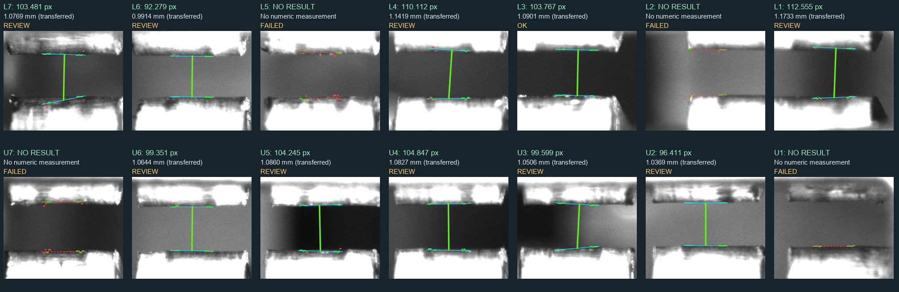
| 点位 | 像素 px | 参考 mm | 状态 | 原因 |
|---|---|---|---|---|
| U1 | — | — | 无有效值 | 上边：边缘粗定位不足；上边：未找到左右一致的边缘；上边：左右有效边缘点不足 |
| U2 | 96.411 | 1.0369 | 有读数，待复核 | 上边：中间轮廓偏离拟合线 |
| U3 | 99.599 | 1.0506 | 有读数，待复核 | 上边：中间轮廓偏离拟合线；上边：整体轮廓起伏较大；下边：中间轮廓偏离拟合线；上下拟合线夹角超过0.5度 |
| U4 | 104.847 | 1.0827 | 有读数，待复核 | 上边：中间轮廓不清晰；上边：中间轮廓偏离拟合线；下边：中间轮廓偏离拟合线；上下拟合线夹角超过0.5度 |
| U5 | 104.245 | 1.0860 | 有读数，待复核 | 下边：侧边不直或存在歧义；下边：中间轮廓偏离拟合线；下边：侧边存在偏离点；上下拟合线夹角超过0.5度 |
| U6 | 99.351 | 1.0644 | 有读数，待复核 | 上边：侧边不直或存在歧义；下边：侧边不直或存在歧义；下边：中间轮廓偏离拟合线；上下拟合线夹角超过0.5度 |
| U7 | — | — | 无有效值 | 上边：侧边不直或存在歧义；上边：侧边存在偏离点；下边：左右符合拟合线的点不足；下边：侧边不直或存在歧义；下边：中间轮廓偏离拟合线；下边：侧边存在偏离点；下边：整体轮廓起伏较大；上下拟合线夹角超过0.5度 |
| L1 | 112.555 | 1.1733 | 有读数，待复核 | 上边：中间轮廓不清晰；上边：侧边有效点覆盖不完整；上边：中间轮廓偏离拟合线；下边：中间轮廓偏离拟合线；下边：整体轮廓起伏较大；上下拟合线夹角超过0.5度 |
| L2 | — | — | 无有效值 | 上边：中间轮廓不清晰；上边：中间轮廓偏离拟合线；上边：侧边存在偏离点；上边：整体轮廓起伏较大；下边：左右符合拟合线的点不足；下边：侧边有效点覆盖不完整；下边：侧边不直或存在歧义；下边：中间轮廓偏离拟合线；下边：侧边存在偏离点；下边：整体轮廓起伏较大；上下拟合线夹角超过0.5度 |
| L3 | 103.767 | 1.0901 | 有读数 | |
| L4 | 110.112 | 1.1419 | 有读数，待复核 | 上边：中间轮廓不清晰；上边：侧边不直或存在歧义；上边：中间轮廓偏离拟合线；上边：侧边存在偏离点；上边：整体轮廓起伏较大；下边：侧边不直或存在歧义；下边：中间轮廓偏离拟合线；下边：侧边存在偏离点；上下拟合线夹角超过0.5度 |
| L5 | — | — | 无有效值 | 上边：侧边不直或存在歧义；上边：中间轮廓偏离拟合线；上边：侧边存在偏离点；上边：整体轮廓起伏较大；下边：左右符合拟合线的点不足；下边：侧边不直或存在歧义；下边：中间轮廓偏离拟合线；下边：侧边存在偏离点；下边：整体轮廓起伏较大；上下拟合线夹角超过0.5度 |
| L6 | 92.279 | 0.9914 | 有读数，待复核 | 上边：侧边不直或存在歧义；上边：侧边存在偏离点 |
| L7 | 103.481 | 1.0769 | 有读数，待复核 | 上边：侧边不直或存在歧义；上边：中间轮廓偏离拟合线；下边：侧边不直或存在歧义；下边：中间轮廓偏离拟合线；下边：侧边存在偏离点；下边：整体轮廓起伏较大；上下拟合线夹角超过0.5度 |
原始图片 · 整图标注预览 · 上排从左到右 L7→L1，下排 U7→U1
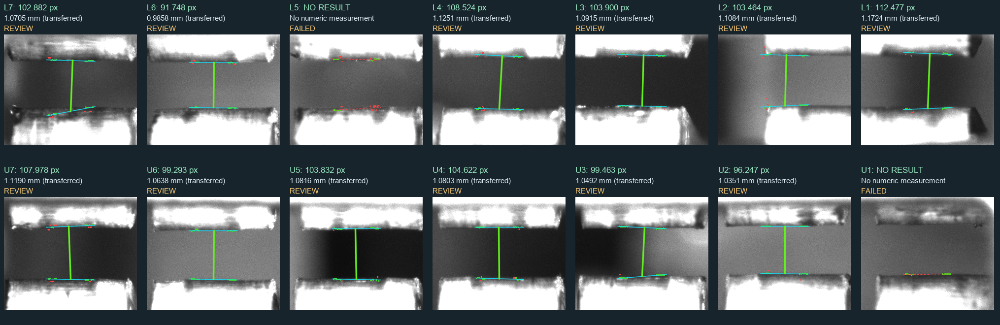
| 点位 | 像素 px | 参考 mm | 状态 | 原因 |
|---|---|---|---|---|
| U1 | — | — | 无有效值 | 上边：边缘粗定位不足；上边：未找到左右一致的边缘；上边：左右有效边缘点不足 |
| U2 | 96.247 | 1.0351 | 有读数，待复核 | 上边：中间轮廓偏离拟合线；下边：侧边不直或存在歧义；下边：中间轮廓偏离拟合线；下边：整体轮廓起伏较大 |
| U3 | 99.463 | 1.0492 | 有读数，待复核 | 上边：中间轮廓偏离拟合线；上边：整体轮廓起伏较大；下边：中间轮廓偏离拟合线；上下拟合线夹角超过0.5度 |
| U4 | 104.622 | 1.0803 | 有读数，待复核 | 上边：中间轮廓不清晰；上边：中间轮廓偏离拟合线；下边：中间轮廓不清晰；下边：中间轮廓偏离拟合线；下边：侧边存在偏离点；上下拟合线夹角超过0.5度 |
| U5 | 103.832 | 1.0816 | 有读数，待复核 | 下边：侧边不直或存在歧义；下边：中间轮廓偏离拟合线；下边：侧边存在偏离点；上下拟合线夹角超过0.5度 |
| U6 | 99.293 | 1.0638 | 有读数，待复核 | 上下拟合线夹角超过0.5度 |
| U7 | 107.978 | 1.1190 | 有读数，待复核 | 上边：侧边不直或存在歧义；上边：中间轮廓偏离拟合线；上边：侧边存在偏离点；上边：整体轮廓起伏较大；下边：侧边不直或存在歧义；下边：中间轮廓偏离拟合线；下边：侧边存在偏离点；下边：整体轮廓起伏较大；上下拟合线夹角超过0.5度 |
| L1 | 112.477 | 1.1724 | 有读数，待复核 | 上边：侧边不直或存在歧义；上边：中间轮廓偏离拟合线；上边：整体轮廓起伏较大；下边：侧边不直或存在歧义；下边：中间轮廓偏离拟合线；下边：侧边存在偏离点；下边：整体轮廓起伏较大；上下拟合线夹角超过0.5度 |
| L2 | 103.464 | 1.1084 | 有读数，待复核 | 上边：侧边不直或存在歧义；上边：中间轮廓偏离拟合线；上边：整体轮廓起伏较大；下边：侧边不直或存在歧义；下边：中间轮廓偏离拟合线；下边：侧边存在偏离点；下边：整体轮廓起伏较大；上下拟合线夹角超过0.5度 |
| L3 | 103.900 | 1.0915 | 有读数，待复核 | 上边：中间轮廓不清晰；上边：侧边存在偏离点 |
| L4 | 108.524 | 1.1251 | 有读数，待复核 | 上边：中间轮廓不清晰；上边：中间轮廓偏离拟合线；上边：侧边存在偏离点；下边：中间轮廓偏离拟合线；下边：整体轮廓起伏较大；上下拟合线夹角超过0.5度 |
| L5 | — | — | 无有效值 | 上边：侧边不直或存在歧义；上边：中间轮廓偏离拟合线；上边：侧边存在偏离点；上边：整体轮廓起伏较大；下边：左右符合拟合线的点不足；下边：侧边不直或存在歧义；下边：中间轮廓偏离拟合线；下边：侧边存在偏离点；下边：整体轮廓起伏较大；上下拟合线夹角超过0.5度 |
| L6 | 91.748 | 0.9858 | 有读数，待复核 | 上边：侧边不直或存在歧义；上边：侧边存在偏离点；下边：中间轮廓偏离拟合线；下边：整体轮廓起伏较大 |
| L7 | 102.882 | 1.0705 | 有读数，待复核 | 上边：中间轮廓偏离拟合线；上边：侧边存在偏离点；下边：侧边不直或存在歧义；下边：中间轮廓偏离拟合线；下边：侧边存在偏离点；下边：整体轮廓起伏较大；上下拟合线夹角超过0.5度 |
原始图片 · 整图标注预览 · 上排从左到右 L7→L1，下排 U7→U1
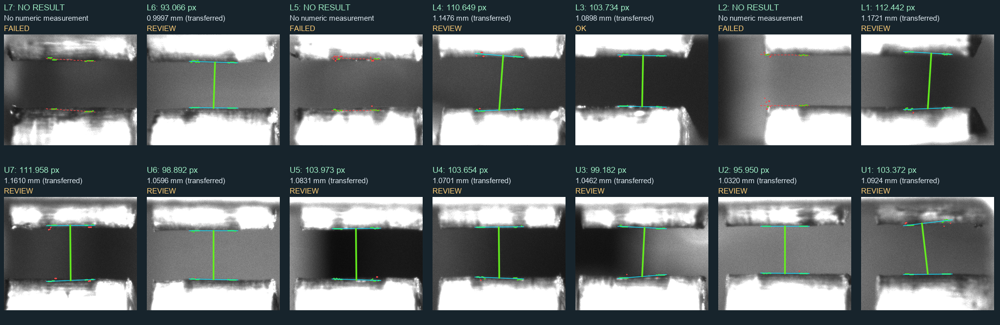
| 点位 | 像素 px | 参考 mm | 状态 | 原因 |
|---|---|---|---|---|
| U1 | 103.372 | 1.0924 | 有读数，待复核 | 上边：侧边不直或存在歧义；上边：中间轮廓偏离拟合线；上边：侧边存在偏离点；上边：整体轮廓起伏较大；上下拟合线夹角超过0.5度 |
| U2 | 95.950 | 1.0320 | 有读数，待复核 | 上边：中间轮廓不清晰 |
| U3 | 99.182 | 1.0462 | 有读数，待复核 | 上边：中间轮廓偏离拟合线；上边：整体轮廓起伏较大；下边：中间轮廓偏离拟合线；下边：整体轮廓起伏较大；上下拟合线夹角超过0.5度 |
| U4 | 103.654 | 1.0701 | 有读数，待复核 | 上边：中间轮廓不清晰；下边：中间轮廓偏离拟合线；上下拟合线夹角超过0.5度 |
| U5 | 103.973 | 1.0831 | 有读数，待复核 | 下边：侧边不直或存在歧义；下边：中间轮廓偏离拟合线；上下拟合线夹角超过0.5度 |
| U6 | 98.892 | 1.0596 | 有读数，待复核 | 上下拟合线夹角超过0.5度 |
| U7 | 111.958 | 1.1610 | 有读数，待复核 | 上边：中间轮廓不清晰；上边：侧边不直或存在歧义；上边：侧边存在偏离点；下边：侧边不直或存在歧义；下边：中间轮廓偏离拟合线；下边：侧边存在偏离点；下边：整体轮廓起伏较大；上下拟合线夹角超过0.5度 |
| L1 | 112.442 | 1.1721 | 有读数，待复核 | 上边：中间轮廓不清晰；上边：中间轮廓偏离拟合线；下边：侧边不直或存在歧义；下边：中间轮廓偏离拟合线；下边：整体轮廓起伏较大；上下拟合线夹角超过0.5度 |
| L2 | — | — | 无有效值 | 上边：中间轮廓偏离拟合线；上边：整体轮廓起伏较大；下边：左右符合拟合线的点不足；下边：侧边有效点覆盖不完整；下边：侧边不直或存在歧义；下边：中间轮廓偏离拟合线；下边：侧边存在偏离点；下边：整体轮廓起伏较大；上下拟合线夹角超过0.5度 |
| L3 | 103.734 | 1.0898 | 有读数 | |
| L4 | 110.649 | 1.1476 | 有读数，待复核 | 上边：中间轮廓不清晰；上边：侧边不直或存在歧义；上边：中间轮廓偏离拟合线；上边：侧边存在偏离点；上边：整体轮廓起伏较大；下边：中间轮廓不清晰；下边：中间轮廓偏离拟合线；上下拟合线夹角超过0.5度 |
| L5 | — | — | 无有效值 | 上边：左右符合拟合线的点不足；上边：侧边不直或存在歧义；上边：中间轮廓偏离拟合线；上边：侧边存在偏离点；上边：整体轮廓起伏较大；下边：侧边不直或存在歧义；下边：中间轮廓偏离拟合线；下边：整体轮廓起伏较大；上下拟合线夹角超过0.5度 |
| L6 | 93.066 | 0.9997 | 有读数，待复核 | 上边：中间轮廓偏离拟合线；上下拟合线夹角超过0.5度 |
| L7 | — | — | 无有效值 | 上边：中间轮廓偏离拟合线；下边：连续边恢复与实测侧边冲突；下边：中间轮廓偏离拟合线 |
原始图片 · 整图标注预览 · 上排从左到右 L7→L1，下排 U7→U1
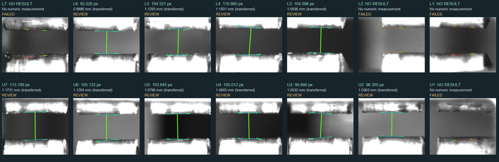
| 点位 | 像素 px | 参考 mm | 状态 | 原因 |
|---|---|---|---|---|
| U1 | — | — | 无有效值 | 上边：边缘粗定位不足；上边：未找到左右一致的边缘；上边：左右有效边缘点不足；下边：侧边不直或存在歧义；下边：中间轮廓偏离拟合线；下边：侧边存在偏离点；下边：整体轮廓起伏较大 |
| U2 | 96.355 | 1.0363 | 有读数，待复核 | 上边：中间轮廓偏离拟合线 |
| U3 | 99.846 | 1.0532 | 有读数，待复核 | 上边：中间轮廓不清晰；上边：中间轮廓偏离拟合线；上边：整体轮廓起伏较大；下边：中间轮廓偏离拟合线；上下拟合线夹角超过0.5度 |
| U4 | 105.012 | 1.0845 | 有读数，待复核 | 上边：中间轮廓不清晰；下边：侧边不直或存在歧义；下边：中间轮廓偏离拟合线；上下拟合线夹角超过0.5度 |
| U5 | 103.645 | 1.0796 | 有读数，待复核 | 下边：侧边不直或存在歧义；下边：中间轮廓偏离拟合线；下边：侧边存在偏离点；上下拟合线夹角超过0.5度 |
| U6 | 105.132 | 1.1254 | 有读数，待复核 | 下边：中间轮廓偏离拟合线；下边：整体轮廓起伏较大；上下拟合线夹角超过0.5度 |
| U7 | 113.106 | 1.1731 | 有读数，待复核 | 上边：中间轮廓偏离拟合线；下边：中间轮廓偏离拟合线；下边：侧边存在偏离点；下边：整体轮廓起伏较大；上下拟合线夹角超过0.5度 |
| L1 | — | — | 无有效值 | 上边：侧边不直或存在歧义；上边：中间轮廓偏离拟合线；上边：侧边存在偏离点；上边：整体轮廓起伏较大；下边：左右符合拟合线的点不足；下边：侧边不直或存在歧义；下边：中间轮廓偏离拟合线；下边：侧边存在偏离点；下边：整体轮廓起伏较大；上下拟合线夹角超过0.5度 |
| L2 | — | — | 无有效值 | 上边：中间轮廓不清晰；上边：侧边不直或存在歧义；上边：中间轮廓偏离拟合线；上边：整体轮廓起伏较大；下边：左右符合拟合线的点不足；下边：侧边有效点覆盖不完整；下边：侧边不直或存在歧义；下边：中间轮廓偏离拟合线；下边：整体轮廓起伏较大；上下拟合线夹角超过0.5度 |
| L3 | 104.098 | 1.0936 | 有读数，待复核 | 上边：中间轮廓偏离拟合线 |
| L4 | 110.885 | 1.1501 | 有读数，待复核 | 上边：中间轮廓不清晰；上边：侧边有效点覆盖不完整；上边：中间轮廓偏离拟合线；上边：整体轮廓起伏较大；下边：中间轮廓偏离拟合线；上下拟合线夹角超过0.5度 |
| L5 | 104.521 | 1.1293 | 有读数，待复核 | 上边：侧边不直或存在歧义；上边：中间轮廓偏离拟合线；上边：侧边存在偏离点；上边：整体轮廓起伏较大；下边：侧边不直或存在歧义；下边：中间轮廓偏离拟合线；下边：整体轮廓起伏较大；上下拟合线夹角超过0.5度 |
| L6 | 92.020 | 0.9886 | 有读数，待复核 | 上边：侧边存在偏离点 |
| L7 | — | — | 无有效值 | 上边：中间轮廓偏离拟合线；下边：左右符合拟合线的点不足；下边：侧边不直或存在歧义；下边：中间轮廓偏离拟合线；下边：侧边存在偏离点；下边：整体轮廓起伏较大；上下拟合线夹角超过0.5度 |
原始图片 · 整图标注预览 · 上排从左到右 L7→L1，下排 U7→U1
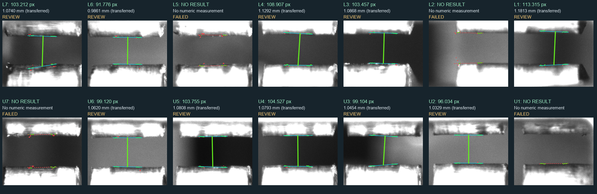
| 点位 | 像素 px | 参考 mm | 状态 | 原因 |
|---|---|---|---|---|
| U1 | — | — | 无有效值 | 上边：边缘粗定位不足；上边：未找到左右一致的边缘；上边：左右有效边缘点不足 |
| U2 | 96.034 | 1.0329 | 有读数，待复核 | 上边：中间轮廓偏离拟合线；下边：中间轮廓偏离拟合线 |
| U3 | 99.104 | 1.0454 | 有读数，待复核 | 上边：中间轮廓不清晰；上边：中间轮廓偏离拟合线；上边：整体轮廓起伏较大；下边：中间轮廓偏离拟合线；上下拟合线夹角超过0.5度 |
| U4 | 104.527 | 1.0793 | 有读数，待复核 | 上边：中间轮廓不清晰；上下拟合线夹角超过0.5度 |
| U5 | 103.755 | 1.0808 | 有读数，待复核 | 下边：中间轮廓偏离拟合线；上下拟合线夹角超过0.5度 |
| U6 | 99.120 | 1.0620 | 有读数，待复核 | 上边：中间轮廓偏离拟合线；下边：侧边不直或存在歧义；上下拟合线夹角超过0.5度 |
| U7 | — | — | 无有效值 | 上边：侧边不直或存在歧义；上边：中间轮廓偏离拟合线；上边：侧边存在偏离点；上边：整体轮廓起伏较大；下边：左右符合拟合线的点不足；下边：侧边不直或存在歧义；下边：中间轮廓偏离拟合线；下边：侧边存在偏离点；下边：整体轮廓起伏较大；上下拟合线夹角超过0.5度 |
| L1 | 113.315 | 1.1813 | 有读数，待复核 | 上边：中间轮廓偏离拟合线；上边：整体轮廓起伏较大；下边：中间轮廓偏离拟合线；下边：整体轮廓起伏较大；上下拟合线夹角超过0.5度 |
| L2 | — | — | 无有效值 | 上边：中间轮廓偏离拟合线；上边：侧边存在偏离点；上边：整体轮廓起伏较大；下边：未找到左右一致的边缘；下边：左右侧边不能形成一致直线；下边：侧边不直或存在歧义；下边：中间轮廓偏离拟合线；下边：侧边存在偏离点；下边：整体轮廓起伏较大；上下拟合线夹角超过0.5度 |
| L3 | 103.457 | 1.0868 | 有读数，待复核 | 上边：中间轮廓偏离拟合线 |
| L4 | 108.907 | 1.1292 | 有读数，待复核 | 上边：中间轮廓偏离拟合线；下边：中间轮廓偏离拟合线；上下拟合线夹角超过0.5度 |
| L5 | — | — | 无有效值 | 上边：左右符合拟合线的点不足；上边：侧边不直或存在歧义；上边：中间轮廓偏离拟合线；上边：侧边存在偏离点；上边：整体轮廓起伏较大；下边：侧边不直或存在歧义；下边：中间轮廓偏离拟合线；下边：侧边存在偏离点；下边：整体轮廓起伏较大；上下拟合线夹角超过0.5度 |
| L6 | 91.776 | 0.9861 | 有读数，待复核 | 上边：侧边存在偏离点；下边：侧边不直或存在歧义；下边：整体轮廓起伏较大 |
| L7 | 103.212 | 1.0740 | 有读数，待复核 | 上边：中间轮廓偏离拟合线；上边：侧边存在偏离点；下边：侧边不直或存在歧义；下边：中间轮廓偏离拟合线；下边：侧边存在偏离点；下边：整体轮廓起伏较大；上下拟合线夹角超过0.5度 |
原始图片 · 整图标注预览 · 上排从左到右 L7→L1，下排 U7→U1
| 点位 | 像素 px | 参考 mm | 状态 | 原因 |
|---|---|---|---|---|
| U1 | — | — | 无有效值 | 上边：边缘粗定位不足；上边：未找到左右一致的边缘；上边：左右有效边缘点不足 |
| U2 | 96.360 | 1.0363 | 有读数，待复核 | 上边：中间轮廓偏离拟合线；下边：中间轮廓偏离拟合线 |
| U3 | 99.977 | 1.0546 | 有读数，待复核 | 上边：中间轮廓偏离拟合线；上边：整体轮廓起伏较大；下边：中间轮廓偏离拟合线；上下拟合线夹角超过0.5度 |
| U4 | 104.367 | 1.0777 | 有读数，待复核 | 上边：中间轮廓不清晰；下边：中间轮廓偏离拟合线 |
| U5 | 104.185 | 1.0853 | 有读数，待复核 | 下边：侧边不直或存在歧义；下边：中间轮廓偏离拟合线；下边：侧边存在偏离点；上下拟合线夹角超过0.5度 |
| U6 | 99.068 | 1.0614 | 有读数，待复核 | 上下拟合线夹角超过0.5度 |
| U7 | 113.039 | 1.1724 | 有读数，待复核 | 上边：中间轮廓不清晰；上边：侧边不直或存在歧义；上边：侧边存在偏离点；下边：侧边不直或存在歧义；下边：中间轮廓偏离拟合线；下边：侧边存在偏离点；下边：整体轮廓起伏较大 |
| L1 | 113.301 | 1.1811 | 有读数，待复核 | 上边：中间轮廓不清晰；上边：中间轮廓偏离拟合线；下边：中间轮廓偏离拟合线；下边：整体轮廓起伏较大；上下拟合线夹角超过0.5度 |
| L2 | — | — | 无有效值 | 上边：侧边不直或存在歧义；上边：中间轮廓偏离拟合线；上边：侧边存在偏离点；上边：整体轮廓起伏较大；下边：左右符合拟合线的点不足；下边：侧边不直或存在歧义；下边：中间轮廓偏离拟合线；下边：侧边存在偏离点；下边：整体轮廓起伏较大；上下拟合线夹角超过0.5度 |
| L3 | 103.501 | 1.0873 | 有读数，待复核 | 上边：侧边不直或存在歧义 |
| L4 | 110.878 | 1.1500 | 有读数，待复核 | 上边：中间轮廓不清晰；上边：侧边不直或存在歧义；上边：中间轮廓偏离拟合线；上边：侧边存在偏离点；上边：整体轮廓起伏较大；下边：中间轮廓偏离拟合线；上下拟合线夹角超过0.5度 |
| L5 | 103.694 | 1.1206 | 有读数，待复核 | 上边：侧边不直或存在歧义；上边：中间轮廓偏离拟合线；上边：侧边存在偏离点；上边：整体轮廓起伏较大；下边：侧边不直或存在歧义；下边：中间轮廓偏离拟合线；下边：侧边存在偏离点；下边：整体轮廓起伏较大；上下拟合线夹角超过0.5度 |
| L6 | 92.578 | 0.9945 | 有读数，待复核 | 上下拟合线夹角超过0.5度 |
| L7 | — | — | 无有效值 | 上边：中间轮廓偏离拟合线；下边：连续边恢复与实测侧边冲突；下边：中间轮廓偏离拟合线；上下拟合线夹角超过0.5度 |